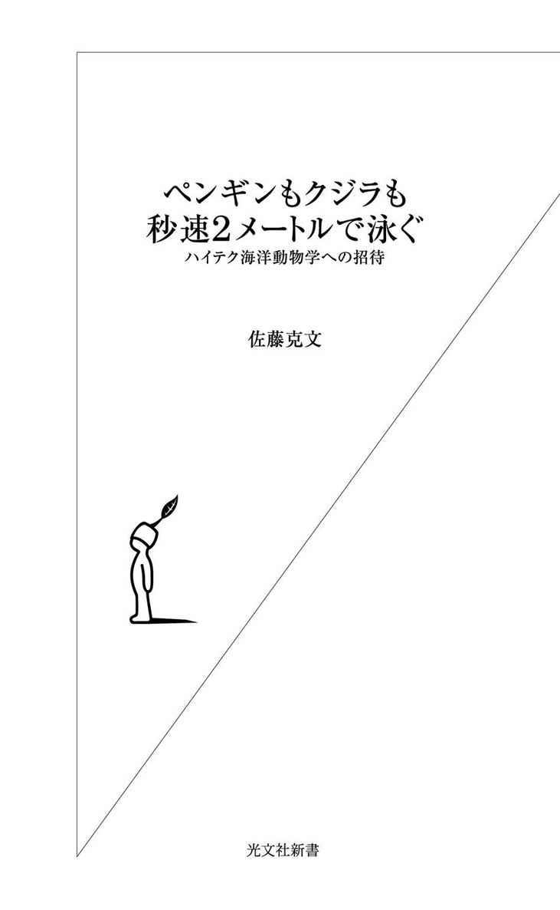
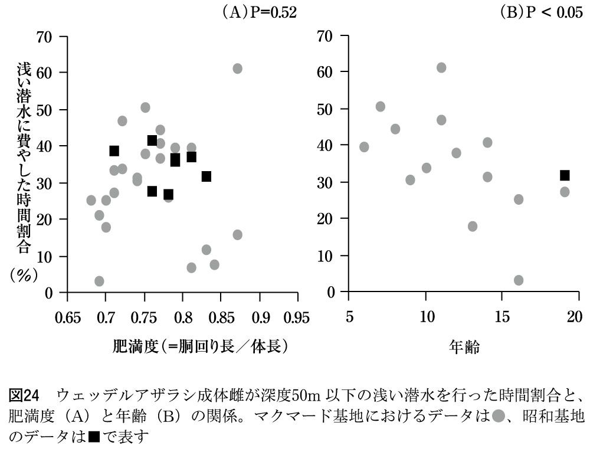
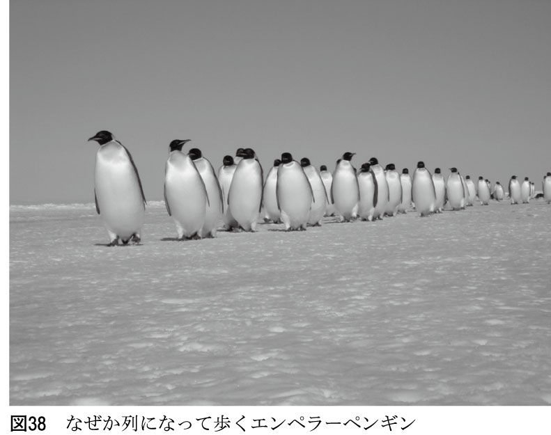
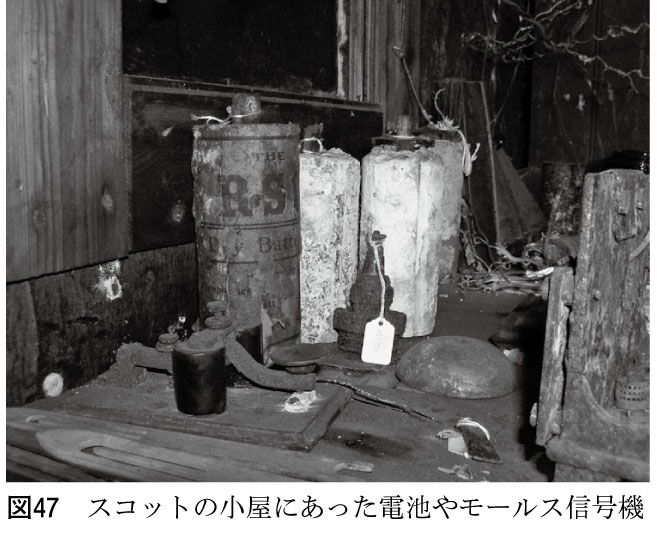

| ペンギンもクジラも秒速２メートルで泳ぐ～ハイテク海洋動物学への招待～ | |
| 佐藤 克文 | |
| (2007) | |

（はじめに へ戻る）
（はじめに へ戻る）

「体重三〇トンのクジラから、五〇〇グラムの海鳥まで、みな秒速一メートルから二メートルで海の中を泳いでいた！」
私たちの研究グループによるこの発見は、二〇〇七年初頭に研究論文として公表された。
一九五〇年に、「幾何学的に相似な動物は、体の大きさにかかわらず、同じ速度で走り、泳ぐであろう」と予測したのは、イギリスの筋肉生理学のヒル博士である。この予測の下に、陸上動物については研究が進み、予測と実測の一致や不一致がさまざまに論じられてきた。
ところが水中動物についての研究の進展は、はかばかしくなかった。ヒル博士の予測から半世紀も経ってから、予測を裏付ける実証データをようやく手にすることができたのである。
陸上動物が歩いたり走ったり跳んだりする様子は、観察することが可能である。たとえば口絵に示したエンペラーペンギンなど、子供はちょこちょこと歩くことで結果的に成鳥と同じ速さで歩いている。わざわざ南極のペンギンを持ち出さずとも、私たちの身の回りで見かける動物を見ていれば、似たようなことは実感できる。
「地球上で暮らしている動物たちの動く速さなど、とっくの昔に調べられているはずだ」。世間の人々は皆そう思っているのではないか。かくいう私もそう思っていた。ところが意外なことに、水の中で暮らす動物たちのことはちっともわかっていなかったのである。
私たちヒトは陸上の動物である。普段陸上で暮らしていれば、どうしても身の回りの動物のことが気になる。研究者たちが視界に入ってくる対象に興味を抱き、陸上動物から調べ始めたのは当然の成り行きであった。一方、水の中にも多くの動物が暮らしているわけだが、研究者が水中にいる動物を調べようと思っても、自分自身が呼吸できない水の中では長時間の観察は難しい。網を使って捕獲した水生動物を陸上に引き上げれば、手にとってしげしげと眺めることはできるだろう。しかし、ヒトにとって都合のよい陸上は、研究対象となる水生動物にとっては都合が悪い。結果的に、研究者は死んだ動物を眺めることになる。
動く物と書くとおり、動物最大の特徴は動く点にある。彼らの本質を理解するためには、本来の生息環境で生き生きと振る舞っている個体を観察する必要がある。ところが、水中に暮らす動物、それも広い海を泳ぎ回る大型の動物たちを連続的に観察することはできなかった。結果的に、陸上動物に比べて海洋大型動物の調査研究は大きく後れをとっていた。
近年、そんな海洋大型動物の水中における行動や生理について、現場で詳細に記録できる画期的な装置が生み出された。陸上の動物では一〇〇年も前に知られているような基本的なことなのに、海洋動物ではまだわかっていないといったことが数多くある。そういった数々の謎に迫ることが、今や可能となったのである。
それには「データロガー」というハイテク機器が、重要な役割を果たしている（口絵20～22）。動物に直接取り付けられるほど小型化した記録計を使うことによって、これまで人々が直接観察できなかった水中の動物について、いろいろ調べられるようになった。耐圧防水容器に収められたデジタルカメラも登場した。彼らの世界を文字通り「目の当たり」にすることができるようになったのである（口絵23および24）。最近では毎年のように新たな道具が登場していることもあり、「バイオロギングサイエンス」という新しい研究分野が生まれ、動物の行動や生理が次々に明らかになっている。
そして、これが一番強調したいことなのだが、この研究分野では日本の研究グループが先導的役割を果たしている。西洋生まれの研究手法が日本に導入されて花開いたのではない。日本で生まれた新型装置によって予想を上回る研究成果が次々と生まれ、装置や手法が世界に波及していったのだ。
もちろん日本の一人勝ちというわけではない。諸外国のグループたちも、次々と新たな装置を作り出している。時にはライバルとして切磋琢磨し、またあるときには共同研究者として協力し合う。そんな理想的なネットワークが、国にまたがってできあがりつつあるのだ。
なお、「データロガー」の詳しい説明については三章で、「バイオロギングサイエンス」命名のいきさつについては七章で、それぞれ詳述しているので、ご参照いただきたい。
何かを発見するというのは、実に楽しいものである。調査の現場でとんでもないものを目にしたとき、あるいは、フィールドから持ち帰ったデータを休日の研究室で解析しているときに、きれいな相関関係が得られたりすると、飛び上がりたくなるような気分になる。「世界広しといえど、その瞬間そのことを知っているのは自分一人だけなのだ」。しかし、一人でその発見を独占しても仕方がない。せっかく見つけたことは、世界中の人に伝えたい。そこで、厳密な意味を考えながら慣れない英語で論文を記述していくことになるのだが、その作業は、正直言ってしんどい。しかし、「教科書や百科事典を書き換えてもらわねば！」といった夢を見ながら執筆に励むのである。
当初予定していなかった想定外の発見というのも、嬉しいものである。初めての現象やデータを目にしたとき、多くの場合、最初は何のことだかわからない。それまで教科書で学んだことに反する現象が見つかったら、何かの間違いだと思うのが普通である。しかし、それを考え続けているうちに、これは本当か、とじわじわと驚きが生まれてくる。当初意図していた目的からは外れたような、副産物のデータの方が重要だったりもする。
そんな発見に満ちた本書の内容を、あらかじめ少し紹介しておこう。
ここ一五年ほどの研究の発展により、爬虫類は変温動物で鳥は定温動物という常識が、一部の潜水動物では覆されつつある。長く潜るという目的をかなえるために、彼らはその大原則をかなぐり捨てるのである（一章）。
また、空を飛ぶ鳥がグライダーのように滑空している様子は、誰でも一度は目にしたことがあるはずだ。水の中を泳ぐ動物たちも同じように、水の中をグライダーの如く〝滑空？〟していたことがわかった（図41）。そのとき、鍵を握るのは〝浮力〟である。動物たちは、ボイルの法則もアルキメデスの法則も知らないが、浮力を意識して振る舞っていたのである（二章）。
さらに、南極の氷の上に寝ころんでいるアザラシや、よちよち歩いているペンギンたちが、実は海の中を数百メートルも深く長く泳ぎ回っていることがわかった。彼らはかわいいだけの動物じゃなかった。彼らが潜る理由は、餌を捕らえるためだけではなく他にもあった。発見してしまえば当たり前のことだが、陸上で暮らす動物たちと同様に、水中の動物たちにも社会がある。彼らは水中でもお互い影響しあって振る舞っていたのである。アザラシの子供の水中写真（口絵24）やアデリーペンギンが一斉に水に飛び込んでいく様子（口絵17）は、いずれも動物の社会性に関連するものである。詳細は四章と五章をご覧いただきたい。
ダーウィンが嬉々としてビーグル号に乗り込み、世界一周の採集旅行に出かけたときのような「探検の時代」が、水中動物においてもようやく訪れた。水族館や動物園でのんびりと暮らす動物たちとは異なり、本来の生息環境下で、己の生存をかけてきびきびと動き回る動物たちの生活について、最新のハイテクメカを使って明らかになった研究成果を本書では紹介していく。
目次
中学校の理科の教科書には、「爬虫類は変温動物。鳥類は定温動物」と記されている。ところが、自然環境下を自由に泳ぎ回る動物たちから、体温や経験水温を連続的に記録したところ、そんな常識をひっくり返すような結果が得られてしまった。
本章では、潜水性爬虫類のウミガメと鳥類のペンギンを対象に行われた温度生理学研究の成果について紹介する。
まず注目すべき点は潜りの深さである。この動物たちは水面近くを泳いでいたかと思うと、時々数十メートルから数百メートルの深さまで潜り、また息を吸うために水面に戻ってくることを一日中繰り返している。
人間と同じ肺呼吸動物が一時間近く息を止めて潜ったり、二〇〇メートル以上も深く潜っている。私たちにはとうてい不可能なこういった潜水行動が、なぜ彼らには可能なのだろうか。その謎についてはとりあえず保留しておいて、ここでは温度（水温と体温のデータ）に注目していく。
時々行う潜水行動によって、経験する水温（点線）が一時的に急降下していることが見てとれる。これは、私たちの体験に照らし合わせてみても納得がいく。夏に海水浴をしているとき、水面近くはぬるま湯のように温かくても、腰から下だけひんやりと冷たいことがよくある。素潜りで数メートルも潜ると、あまりに冷たい水にびっくりすることもある。海で暮らす動物たちも、同じようにこの水温を感じていることだろう。
ふたたび図２において、実線で記した体温の様子を見てもらいたい。左側の動物の体温は潜る深さに関係なく二四時間ほぼ一定に保たれているのに対し、右側の動物の体温は大きく変動していることが分かるだろう。
人間の場合、海水浴の最中に冷たい水に触れたからといって、体温が下がることはない。
中学校のときに習ったのは、脊椎動物のうち魚類・両生類・爬虫類は変温動物で、鳥類・哺乳類が定温動物であるということであった。たしかに、トカゲやクサガメといった爬虫類を手でつかむとひんやりしている。一方、ヒヨコなどの鳥や犬や猫といった哺乳類を触ると温かい。同じく哺乳類である私たちヒトの体温は、人によって多少異なるものの、摂氏三六度前後にいつも保たれている。
したがって、もし海水浴中のヒトの体温を連続的に記録したら、左の図のように一定の値を示すことになる。
理科の教科書でおなじみの変温動物か定温動物かというくくりで言うと、左の動物は外界の温度変化にかかわらず体温が一定に保たれる定温動物、右の動物は体温が大きく変動する変温動物であると言えよう。
それならば、図２の左側に示した記録は鳥類もしくは哺乳類から得られたもので、右側の記録は魚類・両生類・爬虫類から得られたもののはずである。
さて、ではこの左側の記録は何の動物だと思われるだろうか？
実は、左の記録は私自身がウミガメから測定したデータである。ウミガメは海に生息するカメであり、紛れもない爬虫類である。したがって、教科書の区分にしたがえば、変温動物であるはずだ。時々行う潜水によって、体を取り巻く水温が下がれば、体温も一緒に低下すると予想される。ところが、実際に海を泳ぎ回っているウミガメの体温を連続測定してみると、図２の左側に示したとおり、まるで定温動物のように二四時間にわたってほぼ一定に保たれていたのであった。さらに、よく見ると体温は水温よりもいくらか高く保たれていた。
いったいこれはどういうことなのだろう。中学校のときに習ったことに一致しない記録が、水生動物から得られてしまった。この事実をどう解釈したらよいのだろうか。
では、いったいウミガメはどうやって体温を水温よりも高く保つことができるのだろうか。
このことについて仮説を立ててみるとするならば、まず外部の熱を吸収することで体温を高めているのではないかと考えられる。トカゲやヘビといった陸上に生息する爬虫類は、日光浴を行うことで体温を外気温よりも高めていることが知られている。ウミガメも同じように水面近くを泳ぎながら、太陽の光を浴びて体温を水温よりも高めているのだろうか。
そのことを確認するため、これまでの深度計や温度計に加え、太陽の光をどれくらい浴びているのかを測る照度計も取り付けることにした。ウミガメの背中にはごてごてといろいろな装置が付くことになった（図３）。ちなみに、胃の中には温度計が入っている。これらの装置は、海の動物たちの行動や生理について調べるために開発された小型の記録計である。動物に取り付け、一定期間後に回収することによって、動物が海を泳ぐ間の記録を得ることができる。図２のデータもこのやり方で得られたものである。
照度計は、甲羅の上に降り注ぐ太陽放射エネルギーの強さを自動記録してくれる。もしもウミガメが日光浴によって体温を水温よりも高く維持しているのだとしたら、晴れた日にウミガメが水面近くにいるときに限って体温と水温の差が大きくなり、雨や曇りの日には、その差は小さくなるはずである。
しかし、得られた記録によると、甲羅の上に実際に降り注いだ太陽光の強さとは無関係に、ウミガメの体温はいつでも水温よりも高く維持されていた。従って、ウミガメは体内で生み出される代謝熱により、体温を水温よりも高く維持していたということになる。
このように個体に記録計をとりつけ、得られたデータが増えていくと、そこから体温維持のメカニズムを解き明かす、おもしろい傾向も見えてきた。
主に、ウミガメのデータは、夏の産卵期に砂浜に上陸してくる雌から得られている。砂浜に上がってくる雌を待って、記録計を装着し、一定期間後に回収しているのである。よって、得られるデータは、性成熟した雌のものということになる。しかし、同じ成体雌でもその体のサイズはまちまちであった。そこで体温と水温の温度差と体重との関係を調べてみたところ、大型の個体ほど大きな温度差を持つということがわかった。この傾向によって、ウミガメが太陽光などの外部熱源ではなく、代謝熱という内部の熱源を使って体温を水温よりも高く維持していることがはっきりした。
では、なぜ熱源が内部であると言えるのか。それを理解するには、次の缶コーヒーのたとえ話がわかりやすいかもしれない。
たとえば、冬の寒い日に自動販売機で温かい缶コーヒーを買ったとする。三五〇ミリリットル入りの大きな缶と、一九〇ミリリットル入りの小さな缶を同時に購入し、寒空に放置しておくと、どちらが早く冷えるか。
答えは小さな缶である。大きな缶の方が、長い間温かさを保つことができる。
これは、体積と表面積の関係がもたらす違いである。球体のばあい、表面積は4πr²、体積はπr³という公式で計算できる。球体の表面積は半径rの二乗に比例して大きくなり、体積は半径r の三乗に比例して大きくなるのである。球の半径が二倍に増えたとき、体積は八倍（＝2³）になるのに対して、表面積は四倍（＝2²）にしかならないのだ。
温かい缶コーヒーが持つ熱量は、体積に比例して大きくなる。一方、缶から熱が逃げる速さは表面積に比例する。したがって、缶の体積が大きくなるほど、体積あたりの表面積は小さくなる、すなわち持っている熱量に比べて、熱の逃げる速さが遅くなるのだ。このために、大きな缶コーヒーは小さな缶コーヒーよりもゆっくりと冷えていく。
逆に冷えた缶を夏の炎天下に放置した場合、どちらが先に温まってしまうか。答えは小さな缶である。太陽光という外部の熱源で物体を温める場合、体積あたりの表面積が大きな物体の方が、速やかに温められるのである。
缶コーヒーの例から明らかなように、もし小さなカメほど高い体温を持っているのであれば、外部の熱源に頼っていたと言えるが、実際には逆であった。小さなカメでは体表面から体内の熱が早く逃げていってしまうが、大きなカメでは体内の熱がゆっくりと逃げていく。そのため、体のサイズが大きなウミガメは、熱の逃げる速度が遅いおかげで体温を水温よりもより高く保つことができるのだ。体の大きさの違いが、質の違いをもたらしたということになる。
爬虫類は変温動物であるというのは、大まかには正しい。ところが、ウミガメのように体が大きな爬虫類ではいくらか事情が異なってくる。
実は、体サイズが大きくなると爬虫類でも体温が高くなるということは、恐竜の研究者が今から四〇年くらい前に言い出したことである。物理学の法則に従って計算すれば、体重が数十トンにもなる恐竜の体温は、周辺の温度よりもだいぶ高くなり、外気温の変化にも左右されずに一定に保たれていたはずだと予想されたのである。恐竜の場合は、もう絶滅してしまったので、実際の体温がどうなっていたのかを測ってみるわけにはいかない。
しかし、現世の大型爬虫類であるウミガメを使えば、実際に野外で体温を連続測定することができる。その結果、たしかに大型の爬虫類の体温が高くある程度一定に保たれているということが証明できたのである。
中学生に初めて教えるときに、「爬虫類でも体が大きくなると定温性を持つ」などといった複雑な事例も含めて説明したのでは、聞いている生徒は混乱する。先生も教えにくい。だから、中学校の教科書には「爬虫類は変温動物で鳥類は定温動物」というように簡単に記してある。
私が大学院のときに使った教科書（シュミット・ニールセン著『動物の生理学』）では、変温動物とか定温動物といった言葉の代わりに、外温動物・内温動物という用語が使われている。たとえば、小さなカメやトカゲも、温度が一定の水中や空気中にいれば体温は一定である。しかし、その体温はカメやトカゲが自分で調節しているわけではなく、結果的に一定になっているだけだ。周りを取り巻く水や空気の温度が変化すれば、小さなカメやトカゲの体温は変化してしまう。その動物の体温がどれだけ外部の温度に依存しているか、といった〝メカニズム〟に着目して外温・内温と分類する方がよかろうというわけだ。
外部の熱源に頼ることなく動物が体温を維持している場合、その動物は内温性が高いという。
私が得たデータによると、ウミガメの成体は太陽エネルギーに頼らずに、体内で生み出される代謝熱を使って体温を水温よりも高く維持していたので、内温性を有していたということになる。外温動物か内温動物かという分類で言えば、内温動物であると言える。
しかし、体温は水温よりもわずかに一度から二度高く保たれていただけなので、鳥類や哺乳類ほど内温性が高かったというわけではない。鳥類・哺乳類は、外部温度に比べてずっと大きな温度差を維持できるのだ。ウミガメは体が大きいことによって結果的にもたらされる物理的特性として、体温を水温よりもいくらか高く一定に保つことができているということなのである。
では、ウミガメにとって、体温を外部水温よりも高くある程度一定に保つメリットとは何であろう。
一般的には内温性の高い定温動物は、昼夜や季節の違いによる外界の温度変化とは独立して、一定の活動を続けることができる点において有利であると言われている。
ウミガメは潜水する際に、水温の一時的低下を経験する。これに対して体温が一定に保たれるのはウミガメにとって嬉しいはずだ。潜るたびに体温が下がってしまっては、遊泳行動に差し障りがあるだろう。
ウミガメが季節を通して一定の体温を保ち続けることができるかどうかは、まだわかっていないが、いま判明していることを紹介しておこう。
オサガメという種類のウミガメは、甲羅の長さが一・八メートル、体重五〇〇キログラムほどにまで成長する最大のウミガメである。オサガメは水温が七度前後のかなり寒い高緯度海域まで回遊することが知られており、散発的な体温測定結果によると、体温を水温よりも一八度近く高く保っていたことが知られている。しかし、他のもっと小型のウミガメは、そこまでの内温性は持っていないだろう。
私自身がこれまで研究対象として扱ったことがあるアカウミガメとアオウミガメは、日本列島の茨城以南の温帯域（アカウミガメ）や小笠原や沖縄諸島といった亜熱帯域（アオウミガメ）に産卵場を持つ。産卵時期以外に海を泳いでいる間の分布域については、よくわかっていないのが現状であるが、しかし、最近の調査によって、少なくとも現在私が住んでいる岩手県の三陸沿岸にまで時々回遊してくることがわかってきた。産卵場に比べるとだいぶ北の海にまで回遊しているようだが、岩手の海に現れるのは水温が一八度以上となる七月から一〇月の夏から秋の間に限定されているので、オサガメほど高い内温性を持っているわけではなさそうなのである。
私は、毎年産卵場で野外調査を行う過程で、彼らの生活が温度によって大きく左右されていることを実際に感じることができた。
ウミガメは、夏に砂浜に上陸して、産卵を行う。その際、約二週間毎に同じ砂浜で数回産卵する。この習性を利用すれば、最初の産卵終了時にカメに取り付けた各種装置を、次に上陸してきた際に回収することができる。
カメに取り付けたのは、温度や深度を一定の時間間隔で記録できる記録計であった。背中に付けた装置でカメの潜る深さや時間、経験する水温を記録し、胃の中に入れた温度計で、体温を記録した。
装置を取り付けたカメが一旦海の中に入ってしまった後は、ふたたび上陸してくれることを信じて夜中の砂浜パトロールを行った。私たちが調査を始めた一九九〇年頃、ウミガメがふたたび上陸してくるのは二週間後であると言われていた。しかし、野生動物が人間側の期待する予定通りに戻って来てくれるはずはない。たいていの場合、二週間から少しだけ遅れて、一五日から一六日後に戻ってきた。
貴重なデータを得るためには、記録計を付けたカメを見つけて、装置を回収しなければならない。今か今かと期待しながらパトロールするので、「今日で何日経ったか」が気に掛かる。
あれは一九九三年のことであった。一六日が過ぎてもウミガメは戻って来なかった。その後、装置を取り付けたウミガメが海に帰ってから二〇日間が経過した時点で、「ウミガメは隣の砂浜に上陸して今シーズンの産卵を終えてしまったのではないか」と思ってしまったのも無理はなかった。その時は、あきらめムードで、ほとんど惰性でパトロールをしていたというのが正直なところである。
ところが、二一日後にウミガメは帰ってきた。最も遅れた個体は、なんと二五日が経過してからふたたび同じ砂浜に戻ってきた。
その年はとても寒い夏だった。いつもなら、調査期間の日中は海で泳いで遊ぶところだが、とても海に入る気がしないくらい寒かった。実際得られたデータを見ても、ウミガメが経験していた水温（産卵時の海水温が温かかったのか、冷たかったのか）は摂氏二二度前後と極端に低かった。深度記録を見る限り、途中でどこかに上陸した様子は見られず、その年のアカウミガメの産卵間隔は異常に長かったことが判明した。
翌一九九四年の夏は逆に猛暑であった。夜中のパトロールを終えて、明け方から昼頃まで海際の小屋で寝るのだが、あまりの暑さに眠れず、とても困った覚えがある。その年のウミガメは、最初の産卵を終えた後、きっちりと二週間でふたたび上陸してきた。経験していた水温は摂氏二六度ほどもあった。
数年間の調査期間中に、幸運にも冷夏と猛暑の年が含まれていたおかげで、彼らの産卵間隔が二週間に固定されているわけではなく、経験した水温によって大きく左右されるものであることが判明した。正確に言うと、個体毎の体サイズに応じて水温よりもいくらか高く維持されていた体温が何度だったかによって、彼らの産卵間隔は決まっていたのであった。
ウミガメは内温性を持ち、体温が水温よりも高く維持されていたという結果を紹介したが、アカウミガメの場合、温度差はわずかに一度から二度程度である。水温が〇度近い南極海でも体温を三〇度台の後半に維持できるペンギンなどの海鳥類や、アザラシや鯨類などといった海生哺乳類と同等の高い内温性が見られたわけではない。
高い内温性を持つためには、それだけ代謝熱を生み出すのにコストがかかる。実際、海鳥類や海生哺乳類は大食漢である。ところが、私たちの調査によってわかったことなのだが、ウミガメは夏の産卵期の間中は絶食していたのであった。数ヶ月間絶食して何回も産卵を行うためには、できるだけ省エネルギーを心がけねばならない。そんな彼らが、体サイズが大きいことによる物理的特徴によって、体温をわずかに水温よりも高く一定に保っていたのは、少ないコストでいくらかのメリットを享受するという知恵であった。いかにも爬虫類らしいやり方であるように思える。
アカウミガメ loggerhead turtle Caretta caretta
アカウミガメの産卵場は、沖縄県から茨城県にかけて分布している。日本の砂浜に産卵上陸してくる雌の成体の大きさは、直線甲長が69～103cm。5月頃から8月初旬にかけて、同じ砂浜で複数回産卵を行い、その多くが2年に1回のペースで同じ産卵場に戻ってくる。産み落とされた卵は、8月から10月にかけて孵化する。
アカウミガメの英名は丸太を表すlogから来ている。本種は他のウミガメ7種に比べると大きい頭を持つ。その外見上の特徴からこの名がついたと思われる。
ちなみに、私が初めてデータロガーdata logger（記録計）を付けたのはアカウミガメ。「データロガーを付けたから、data loggerhead turtleです」と外国人に説明したことがあるが、ウケなかった。
なお、アオウミガメの英名green turtleを直訳すると、ミドリガメとなる。日本でミドリガメとして認知されているのは、ミシシッピーアカミミガメという淡水産のカメである。アオウミガメの成体はたしかに緑がかって見える。日本語ではよく緑を青と表現するが、そのせいでついた和名だろうか。
ちなみに、肉をとるために解体した際、脂肪層が緑色に見えることから、その英名が付いたとも言われる。西洋の一部の地域にも、ウミガメを食する習慣がある。
では、次に図２右側の、体温が大きく変動している記録について見ることにしよう。
このデータは、実は爬虫類でも両生類でも魚類でもなく、ペンギンから得られたものである。ペンギンは鳥類である。鳥（定温動物とされている）であるにもかかわらず、体の中心部分の体温が、潜水を行う間にこれほどまで大きく変動していたのであった。
このデータを得たのは、キングペンギンを対象とした日仏共同研究がスタートし、一九九六年にインド洋の亜南極圏に浮かぶクロゼ島において行われた野外調査に参加する機会を得た際である。抱卵期に繁殖場と海を往復するペンギンの背中に、深度と温度を記録できる装置を取り付けた。胃の中にも温度記録計を挿入した。
ペンギンの胃の中に温度計を挿入した目的は、そもそも潜水中の体温について調べることではなく、餌を食べるタイミングを記録するためであった。ペンギンの体温を陸上で測ってみると、ヒトよりいくらか高い三八度くらいある。陸上では、いつ測定しても三八度である。陸上のデータだけ見れば、鳥類であるペンギンはたしかに一定の体温を持つ定温動物であるようだ。しかし、そのペンギンが餌を採るために泳ぐ海は、水温七度前後の冷たい海である。そして、餌となるオキアミやイカや小さな魚の体温はいつでも七度である。体温三八度のペンギンがその冷たい餌を飲み込んだら、胃の中の温度は急激に下がるはずだ。ペンギンの胃内温度を連続的に測定すれば、ペンギンがいつ餌を食べたのかわかるだろうと考えたのだ。
実際の調査の前に、陸上で予備実験を行った。温度計を飲み込ませたペンギンに、いろいろなサイズの魚を食べさせた。その後、温度計をはき出させてデータを見ると、たしかに餌を与えたときに一時的に胃内温度は低下し、その後緩やかに三八度まで上昇していた。この方法で餌をとるタイミングを記録できそうである。
そんな期待を込めて、四週間の餌採り旅行から戻ってきた個体のデータを眺めてみた。キングペンギンは深度二〇〇メートルから三〇〇メートルという深い潜水を繰り返し行っていた。その深さにいる間、時々胃の中の温度は急低下していた。そこで餌を捕らえているようであった。ところが、餌採りにともなう急低下とは明らかに異なる変化が見つかった。それは、潜降にともなうゆるやかな温度低下である。
ペンギンが潜水を開始した数十秒間は、いつでも胃の中の温度は一度ほど上昇した。その後、一〇〇メートル、二〇〇メートルと深く潜って行くに従い、胃の中の温度はじわじわと下がっていく。最大深度に達した後、水面に向かっての浮上が始まっても、胃の中の温度は下がり続けていく。水面にたどり着き潜水が終了した時点では、潜り始めから一度ほど低い体温になっていた。
ペンギンは数分間水面に滞在した後、ふたたび次の潜水を開始する。水面にいる間に、胃内温度はいくらか上昇するが、元の三八度まで回復しないうちに、次の潜水が始まっている。次の潜水でもまた胃内温度は同じような挙動を示し、潜水終了時には開始時よりもさらに一度ほど低くなっている。
ペンギンが数十回潜水を繰り返し行うと、結果的に胃の中の温度は一〇度以上も下がっていたのだ（図２）。潜水中に餌を捕らえたときは、一時的に胃内温度が急低下し、その後速やかに元の値にまで戻る。しかし、上記の胃内温変化は、餌採りによる急変化とは明らかに異なっていた。私には、それが重要な生理現象を表しているように思えた。
そのとき一緒に調査を行っていたフランス人の共同研究者に、「これって、大発見だと思わないか？」と言うと、彼はニヤリと笑いながら「実は昨年そのデータをとっており、今論文投稿に向けて原稿を準備しているところなのだ」と言うのであった。彼らはこれまでずっと継続してペンギン研究を行ってきており、私よりも一歩早くその大発見をしていた。「先を越された！」と悔しく思ったが、よくよく聞いてみると彼らは単に胃の中に温度計を飲み込ませるだけでなく、検証するために体内に手術で温度計を埋め込むということまで行っていた。この件については、負けを認めざるを得なかった。
しかし、ウミガメの体温を見慣れていた私にとって、ペンギンの潜水中の体温変化は驚きであった。研究を始める前の大学生だった頃、図２を見せられたら、体温が変化している方がウミガメで、一定なのがペンギンであると思ったことだろう。
私にとって、それまで行っていたウミガメ研究結果と、そのときのペンギン調査の結果は、爬虫類が変温動物で鳥類が定温動物という、中学校の教科書に記されている常識を覆すものであった。ペンギン調査に参加したことは、水中動物の比較生理学のおもしろさに目覚めるきっかけとなった。
キングペンギン king penguin Aptenodytes patagonicus
２番目に大きなペンギンで、成体の体重は12～14kgとなる。南半球の亜南極圏の島で繁殖を行う。
側頭部にオレンジ色のパッチがあり、この形がカンマ型「,」である点が、同属のエンペラーペンギンと区別する際のポイントとなる。
スマートな体型にグレーの背中、黒い顔、黄色いクチバシ、胸の部分にかけて薄くなっていくオレンジ色のグラデーションなど、実に美しいペンギンである。
それに比べてヒナは茶色で、「みにくいキングペンギンの子」とまでは言わないが、あまりかわいくない（口絵５）。同属のエンペラーペンギンの子供とは大違い。
茶色い産毛が抜けて、その下から親と同じおしゃれなグレーの羽毛が見えてくると、なぜかホッとする。
では、ペンギンは、せっかく温かく保っている体温を、なぜ潜水中に下げてしまうのだろうか。
爬虫類に比べて鳥類は、一般的に一〇倍ほど高い代謝速度を持っている。代謝によって生まれた熱を使って、冷たい海の水面に浮かぶ間や陸上にいる間の体温を三〇度台後半に維持しているのである。高い代謝を行うためには、多くのエネルギーが必要だ。たとえて言うなら、燃費の悪い車のように、いつでも高回転数でエンジンを回して暖機運転しているようなものだ。栄養価の高い魚やプランクトンなど、十分な餌を採れる環境ではそんなやり方も可能なのだろう。しかし、高い代謝速度を実現するためにはもう一つ、酸素を大量に必要とするのである。
水面や陸上では困ることはない。いつでも呼吸によって酸素を取り入れることができるからだ。しかし、一旦水の中に入ると、えらを持たない彼らは息を止めている必要がある。
息を止めていられる時間が長いほど、彼らは餌のある深いところで長時間過ごせるので都合がよい。その際、高い体温を維持するために酸素を大量に消費するやり方は都合が悪いのである。
そこでペンギンが選択したのは、潜水中の体温を下げてしまうという戦略であった。泳ぐのに必要な前ひれを動かす筋肉が冷えてしまっては、運動能力が下がってしまって都合が悪い。だから、筋肉の温度まで下げてしまうわけにはいかない。しかし、それ以外の腹腔内の温度は一時的に下がったところでとくに困ることはないのだろう。結果的に一〇度以上も腹腔内の温度が下がっていることがわかった。
一定の体温を維持するということは、あらゆる鳥にとっての大原則であるように思えた。しかし、息をこらえてできるだけ長時間水中に潜っていたいという事情を持つ海鳥にとっては、それは絶対守らねばならない大原則ではなかったのである。
わかってしまえば、実に合理的に感じられるが、自分がとったデータでそれを初めて目にしたときには本当に驚いた。
以上のように、本章では教科書を覆す新発見をまず紹介した。続く章でも、同様に新発見を紹介していくが、ここで覆される側の当の「教科書」とは何なのかについて考えてみたい。それは、すなわち科学とは何かを問うことにもつながり、本書の裏テーマでもあるので、しばしおつきあいいただきたい。
今となっては、誰かに聞いた話だったか、何かで読んだ話だったか忘れてしまったが、「教科書の中のウソ」という話がある。
私たちはまず小学校にはいり、その後、中学校という義務教育を終えた後、高等学校、大学へと進学する。それぞれ、学校という文字の前に、小・中・高等・大という文字が付いているが、これはそれぞれの学校で使われる理数系科目の教科書にどれくらいのウソが混じっているのかを表しているのだそうだ。
すなわち、小学校で使われる教科書には、小さなウソが含まれている。正しいことしか書かれていないと言っても、ほぼよいだろう。中学校の教科書には、中くらいのウソが混ざってくる。高校の教科書には、一見もっともらしく思えるような高等なウソが含まれている。大学で使われている教科書には、大ウソが書いてあるという話である。
小学校の算数の教科書には、たとえば、ピタゴラスの定理（三平方の定理）が記されている。これは、直角三角形の三辺の長さの関係を表すもので、紀元前に発見されて以来、二千年以上の時を経ても覆されることがなかったことから考えても、間違いない事実であると言いきることができる。他にも、数百年以上も前に発見されたような基本的事実ばかりが、小学校の算数や理科の教科書には記されている。
中学校の教科書になると、一七世紀から一九世紀にかけての著名な科学者の発見が登場する。ニュートンの力学やダーウィンの進化論を中学生は学ぶことになる。宗教上の理由から、進化を認めない人々もいるようだが、現代の生物学は進化を揺るぎない事実と見なした上に構築されている。中学校の教科書も、間違いない事実ばかりが記されていると言って 〝ほぼ〟 よかろう。
高校の教科書になると、二〇世紀のノーベル賞受賞者クラスの科学者による発見が登場する。アインシュタインの相対性理論や、ワトソンとクリックのＤＮＡ二重らせん構造などである。
「厳密なことを言えば違うのだが、まあこう思っておけば大きく間違いではない」。そんな事情から、高校生にもわかるように簡単に記してあったりするものが時々紛れ込んでいる。一通り読んだだけでは気がつかないような高等なウソも紛れ込んでいるのだが、小中学校の教科書同様に、大きな間違いは含まれていないと考えて差し支えなかろう。
大学になると、教科書の様相は一変する。
小学校から高校までには教科書検定というものがあり、ある一定レベルの質が保証されている。ところが、大学の授業で使われる教科書には、検定などない。授業で使われる教科書は、担当する先生が勝手に指定した専門書である。
「○×先生は、自分の著書を教科書に指定して、印税を稼ごうとしているのでは」等といった噂が学生の間で流れたりすることもある。私も大学に入学して講義を聴いて驚いたのだが、ある先生は自分で教科書に指定しておきながら、授業中に「この部分に書いてあることは間違っています」と言って、「私はこう思う」と自説を展開するのであった。
高校を卒業するまで、教科書に書いてある内容が間違っているなどとは考えたこともなかった。教科書に記されている内容を、ただひたすら理解して覚えることに専念するのが受験勉強であった。ところが、入学試験をクリアして入った大学では、先生が教科書の中身を「間違っている」と明言する。これは、ちょっとしたカルチャーショックであった。
大学の授業で習うことは、最先端の研究内容である場合が多い。最先端の研究成果の中には、まだ評価が定まっていないものも含まれている。研究者たちがいくつかのグループに分かれ、それぞれ自分たちの説こそ正しいと主張し合っている場合もある。研究がさらに進んだ結果、それまで正しいとされていたことが実は間違っていたと判明することもある。本当の最先端の研究分野では、原著論文は何本かあっても、それらをとりまとめた教科書はまだ記されていないという場合もある。
大学の先生というのは、教育者であると同時に皆、それぞれの専門分野の研究者である。したがって、自分の専門分野において自分自身の意見なり仮説というものを持っている。研究というのは何か新しいことを発見して、それを他の人々に伝えるという作業である。自説がすんなりと受け入れてもらえないことも多い。そんなとき、研究者は自分の説がいかに正しいのかを力説し、人々を説得しようとする。
教育者として学生に教えているときは、できるだけ評価の定まったことを教えるよう心がけていても、時々研究者としての顔がのぞいて、つい自己主張してしまう。授業で使う教科書も、自分の考えに合うものを選びがちである。そのため、教科書に大ウソが含まれる可能性があるというわけである。
世の中には多くの研究者がいて、日々研究に明け暮れている。それによる発見の多くが、原著論文という形で、さまざまな学術雑誌に掲載されている。雑誌にもいろいろあって、世界中の人が目を通している超一流雑誌から、関係者以外にはその存在も知られていないようなマイナー雑誌までいろいろある。分野外の人にもその価値がわかるような重要な発見や、誰もが興味深く聞くことができる発見は、いわゆる一流雑誌に掲載される。
その中の選りすぐりとも言える大発見をした人が、ノーベル賞を受賞したりする。ノーベル賞に輝くような発見のうちのいくつかは、将来、高校の教科書に載るかもしれない。もしも、中学校の教科書に載るような発見ができたら、その科学者はダーウィンやニュートンと肩を並べる歴史上の人物であるということになる。
そう考えてみると、小学校や中学校の教科書に掲載されるような発見を行うのがどれだけ難しいのか想像できる。ノーベル賞をとるより難しいと言ってもよかろう。数百年以上も覆されることがないほど確かな事実であり、なおかつ義務教育として勉強すべき子供たちが一般的な事実として知っておいた方がよいと思われるほど重要な内容しか掲載を許されないのが、小中学校の教科書なのである。
教科書談義が長くなってしまったが、そろそろ話を水中動物に戻して、本章を締めくくることにしよう。
すでに述べたように、中学校の教科書には滅多にウソは書かれていない。数百年の時を経ても覆されることがなかった事実に基づいて記されている。ただし、それらは主として陸上動物の結果を基に構築されてきた。水中の動物については、測定が難しいことから、実測データがなかなか得られなかった。「きっと陸上と同じであろう」と皆が想像していたことであろう。
ところが、技術が進み、海洋を泳ぎ回る動物の体温を数週間にわたって連続記録するといった、一昔前には考えられなかったことが今や可能になった。
海を泳ぎ回る間のウミガメやペンギンの体温を実際に測定してみたところ、中学校の教科書に書かれているのとは明らかに異なる結果が得られたのである。自分の研究歴の初期の段階でそんな例外に遭遇できたことは、実に幸運であった。「もしかしたら、水中の動物には陸とは異なる独自の掟のようなものがあるのではないか」。そんなことを感じながら、私は対象動物を次々変えながら水生動物の研究を進めていくことになる。
二章以降でも、ハイテクを用いることによって、近年ようやく調べられるようになった水生動物たちの生態を紹介していきたい。
研究を進めていく際の最大の楽しみは、発見自体であるのはもちろんだが、調査現場における出来事や、共同研究者たちとのやり取りというのもまたおもしろいものである。本書では各章末にコラムという形で、そのあたりのことも紹介する。
一章で紹介したウミガメの体温に関する発見は、私が最初に行った調査研究の結果である。その後、フランス人とのペンギン共同研究ＳＩＰＥＮＳ（Sea Ice and Penguin Study）に参加することになった。私にとって初体験となった外国人との共同研究は、実に刺激的でおもしろかった。言葉だけでなく、習慣や考え方の異なる外国人と、数ヶ月をともに過ごして共同で事を進めるのである。観光客としてその国を訪れたお客様ではなかなかできない体験ができた。
私たち日本人が外国人と意思を通わせあう際に遭遇する最初の壁は、言葉の壁である。科学の世界の共通言語は、残念ながら日本語ではなく英語である。フランス人もまたこの点については、同じ悩みを抱えている。世界を席巻した時代が昔あっただけに、彼らの方が悔しい思いをしているかもしれない。私からすれば、同じアルファベットを使っているフランス人の方がはるかに有利だと思うのだが、彼らもまた母国語でない英語を使ってのコミュニケーションを苦痛に感じているようだ。
日本人の常として、外国人は皆英語が話せるものと思っていた。「僕は英語が苦手だから」とフランスの若者に言われても、最初は信じられなかった。しかし、オットコヒ（hot coffee）とかオネー（honey）等と言う様子を目の当たりにするうちに、「ああ彼らも苦労しているのだ」と実感できた。彼らの立場に立ってみると、フランス語を話せない私がフランス基地に行ったことにより、自分たちの縄張り内なのに苦手な英語を話さねばならないわけで、そんなことに気がついてからは、彼らに対する感謝の念が生まれた。
一緒に過ごすうちにわかってきたのだが、フランス人は日本に対してはどちらかというと親近感を持っているようであった。たとえば、日本からアニメが大量に入っている。「マンガ」という言葉はそのままで通用する。昔見た懐かしのマンガの話をすると、日本人同士で行うのと同様に盛り上がった。
クロゼ島には、日本庭園と呼ばれる場所があった（口絵１）。それは、島のなかで一番風景が美しく、ペンギン数種類やアザラシにオットセイ、そしてアホウドリなど多くの動物が住む天国のようにすばらしい場所であった。日本人の私からすると、日本庭園とはまったく異なる別世界の風景であったが、一番美しい場所にフランス人がその名前を付けていることを知ったときは、とても嬉しく感じたものである。
フランス人たちと、調査上の目的を同じくする仲間として共同で事を進めるにあたっては、難しい面もあった。幼い頃から、自分の要求を口に出して交渉する訓練を受けて育てられている彼らに対し、こちらは子供の頃から我慢することを美徳としてしつけられてきた。黙ってニコニコしていると、次々とリクエストが飛んで来て、ふと気がついたらにっちもさっちもいかない状況に陥ってしまう。そうならないように、私も彼らに倣って自己主張した。いつでもイエスマンではいられない。時には「ノン」と言う必要も出てくる。
あるとき、その日のデータロガー装着を終えて、誰がそのペンギンを見張るかという話になった。晩ご飯の時間が迫り、皆がそわそわとしはじめたが、データロガーを背負ったペンギンは、こちらの気持ちを知ってか知らずか、ボーッと砂浜にたたずんでいる。誰が残るべきか、ひとしきりやり取りがあり、結局、あるフランス人の男が残って見張ることになった。見張り役が決まったら、皆未練がある様子もなく、さっさと基地に引き上げていく（ように見えた）。私は何となく申し訳ないような気分は持ちつつも、調査地を引き上げ基地に向かった。
その日の晩飯は、いつにもまして豪華であった。フランス基地には星付きのレストランからシェフが派遣されている。基地に滞在した二ヶ月間、一度も同じメニューが出なかったことを記憶している。食事の最後には、毎回デザートが出る。シェフとは別にもう一人いるパティシエによる自信作だ。酒を飲む者も飲まない者も、男も女も皆甘いデザートを喜んで食べるのは意外であった。「日本では、酒を飲む男は辛党といって、甘い物なんか食べない」と言ったら、「なぜだ」と皆から総攻撃された。言われてみるとたしかに不思議なことで、理にかなった説明は思いつかなかった。私もフランス風にデザートを食べるようになった。
さて、そんな美味しいデザートも平らげて一服しているところに、一人調査地に残ってペンギンを見張っていた彼が帰ってきた。日本であれば、間違いなく「お疲れ様」の大合唱である。実際、ウミガメ調査のとき、砂浜にパトロールに出ていた者が小屋に帰ってきたら、皆一斉に「お疲れさん」と声をかけたものである。
ところが、フランス基地ではそういった局面で、とくに誰かがねぎらいの言葉をかけている様子もない。
「どうだった？」「うん、ペンギンはぶじ出ていったよ」。そんな簡単なやり取りが交わされるだけなのであった。私としては、先に晩飯を済ませてしまった者として、どうにも居心地が悪く、彼の周りにまとわりついて、「メシはあっちにあるよ」とか「今日のデザートはうまかったよ」など、声をかけ続けた。しかし彼もなぜ私があれこれまとわりつくのか、よくわからない様子であった。「お疲れさん」を英語でなんと言ったらよいのかわからず、「Are you tired?（疲れましたか？）」などと言ってみたが、「No. Why?（いいや、何で？）」と怪訝そうであった。
彼らにとって、一度議論して納得の上で居残ったような場合、それを約束通りに遂行するのは当たり前で、とくにお礼を言われたりねぎらいの言葉をかけてもらう必要はないのだろうかと、とりあえず自分を納得させた。
後になって日本の南極昭和基地で越冬隊員として過ごした際に、日仏の違いを浮き彫りにする状況に遭遇した。
昭和基地には共同の風呂があり、日々の仕事を終えた後は風呂に入る。一度に五人ほどが入れる広さがあり、たいてい二～三人と一緒になる。先に風呂場から出る者は、「お先に」と声をかけるのが普通であった。それに対して、湯船につかったり体を洗ったりしている側が、「お疲れ様でしたー」と声をかけるのである。風呂に入ってお疲れ様でしたと言うのも変だとは思ったが、日々繰り返すうちにそれが普通になった。
冬が明けて、オーストラリア人が数名昭和基地にやってきた。あるとき、私たち日本人が一人のオーストラリア人とともに風呂場にいた。湯船につかりつつ、いろいろ談笑していたら、日本人の一人が、いつものように「お先に」と声をかけて風呂場から出て行った。私以外に二人ほど日本人がいたのだが、誰も「お疲れ様でした」を言わなかった。それを言うと、オーストラリア人に「今なんと言ったのだ」と聞かれ、その後「なぜだ？」と尋ねられるような気がして何となく気が引けたのである。一緒にいた日本人も、似たようなことを考えていたと見え、何とも言えぬ沈黙の時がしばらく続いた。
ビジネスライクに事を淡々とこなす欧米人と、過度にお互い気を遣いあう日本人との差を感じさせられた出来事であった。
ウミガメの体温については私自身の論文として成果発表できたが、ペンギンの体温については先を越されてしまった。たとえそれがどんな大発見であったとしても、二番目では「発見した」とは言えない。亜南極までペンギン調査に行ったなら、やはり手ぶらで帰るわけにはいかなかった。
そんなわけで実を言うと、ペンギン調査には〝隠し球〟として動物搭載型の加速度計を持っていった。世界初の加速度記録を得ることにより、水生動物の比較行動学研究が花開くことになった。
フランス人とともに亜南極圏のクロゼ島で行ったペンギン調査に、私が持っていったのは、胃内温度や深度を記録する装置だけではなかった。新しい試みとして、遊泳速度や加速度を記録できる最新の記録計も準備していた。とくに、加速度センサーを搭載した装置は、まったく新しいもので、一九九六年の時点では、まだ誰も潜水動物に用いたことのない世界初の試みであった。
加速度センサーというのは、家庭用のビデオカメラにも搭載されている。カメラの振動を検知して、手ぶれによる画像の揺れを補整することに使われている装置だ。加速度センサーによりペンギンの体の振動を検知して、ペンギンが遊泳時にどれだけ強く前ひれを動かしていたのかを調べようというのが加速度計の目的である。
加速度計は合計五台用意していた。五羽のペンギンに取り付けたところ、回収できたのは四台だった。一羽は戻ってこなかった。ぶじ回収に成功した四羽分の装置をコンピュータに接続し、データをダウンロードした。世界初のデータを目の当たりにする瞬間というのは、実にドキドキするものである。これは、大発見を期待するドキドキと言うよりは、新しく作った装置がぶじ動いてくれているだろうかという不安に基づくものだ。実際、回収に成功した四台のうち、二台は壊れていた。世界初というのは、なかなかうまくいかないものである。しかし、残る二台からは、ぶじデータを得ることができた。
この二台から得られた貴重な世界初の加速度データを、深度や速度といった他のパラメータと一緒に眺めたところ、どうもおかしい。
ペンギンが潜水を開始した直後、加速度は高い値を示しており、これはペンギンが素速くかつ力強く前ひれを動かしていたことを意味する。やがて、深度が一〇〇メートルを超える頃、加速度の値はある一定値に落ち着いた。これも何となく理解できる。ペンギンが巡航遊泳に入ったのだろう。ところが、浮上の途中、水面までまだ八〇メートル近く残されている時点で加速度の振動がなくなってしまった（図８）。

ペンギンは前ひれの動きを停止してしまったのだろうか？ 速度データによると、ペンギンはそこから水面に到達する間もたしかに進み続けている。それどころか、巡航遊泳時の秒速二メートルより速く進んでいる。前ひれを動かしていないのに、遊泳速度が上昇しているのである。これはどうしたことなのだろうか。
「もしかして新発見？」という漠然とした期待感は抱きつつも、まだ二個体分のデータしかないし、新しい記録計のタイマーが狂っているだけなのかもしれない。そんなことを考えつつ、キングペンギンの島、クロゼ島を後にした。
日本に帰ってきてからも引き続きデータを見続けるが、何とも不思議な現象である。装置のテストをしたところ、タイマーに異常はないことが確認できた。もう一度クロゼ島に行きたいところだが、亜南極の僻地までそう何度も行けるものではない。
ところが、そんなときに渡りに船の話が舞い込んできた。今度は、南極のアデリーペンギン調査に行かないかというのである。またもやフランス基地での調査である。クロゼ島から戻ってきた一九九六年の一二月に、ふたたび加速度記録計とともにペンギン調査に旅立った。
今度の行き先は、フランスの南極基地があるアデリーランドである。オーストラリアのタスマニアからまっすぐ南下したあたりの南極圏である。基地は大陸上ではなく、大陸から数キロメートルほど離れた島の上に建築されていた。この島には至る所にアデリーペンギンの繁殖場があった。アデリーペンギンは、海岸付近の露岩域に巣を作る。基地もまた露岩域に建てられている。ペンギンと人間は、限りある露岩域を争う競争関係にあるわけだ。時には、ペンギンたちは建物の軒下にまで入り込んで巣を作っていた。調査する者にとっては、好都合の環境である。
装置を付けるペンギンも、よりどりみどりの選びたい放題。生物実験室のすぐ脇にある繁殖場で調査を行った。窓から眺めていると、記録計を背負ったペンギンたちが海と巣を往復している様子が見える。ブリザード（雪嵐）の日でも、彼らは黙々と海と巣との往復を繰り返している。実験は順調に進み、前回クロゼ島で取り損なった加速度データを必要十分な個体数から得ることができた。
現地で早速データを見ると、アデリーペンギンもまた浮上の途中で前ひれの動きを止めて、羽ばたかずに水面まで到達していることがわかった。この段階にいたって、ようやく何かが発見できたことを確信できた。
アデリーペンギン Adélie penguin Pygoscelis adeliae
白黒のツートンカラーや、ちょこちょこと歩く様子など、アデリーペンギンはわれわれが抱いているペンギンのイメージにピッタリ合う。
体重は４～５kgの中型サイズのペンギンである。
南極大陸や周辺諸島の沿岸露岩域で、南極の夏期間に繁殖する。小石を集めて巣を作り、その上で２個の卵を産む。
雌雄が交代で抱卵し、ヒナを育てる。ヒナが大きくなってくると、雌雄は共に海に餌採りに出かけるようになる。その間、ヒナ同士が集まって親の帰りを待つ。
繁殖地には、その年繁殖に参加していない個体もウロウロしており、時々よその巣から小石を盗み出して一ヶ所に集めたりしている。来年の繁殖に備えて、準備しているのだろうか。
一緒に調査を行っていた仲間たちにデータを見せるが、前ひれを動かすことなく水面にたどり着くなどという話は誰も聞いたことがない。ペンギンは潜水している間はずっと前ひれを動かし続けて泳いでいると、誰もが当然のように思っていた。帰りの船の中でも、日本に帰ってきてからも、ずっとデータを眺め続けたが、何とも不思議な現象である。
前ひれを動かすこともなく浮上するということから、おそらく浮力を使っていたことが想像できる。
サイダーを注いだコップの中で小さな泡がゆらゆらと浮上するのは、浮力のせいである。コルクなど、中に空気を含んだものを水中に沈めて手を放すと、ピョコンと水面に向かって浮かび上がる。ペンギンも体の中に空気を持っていれば、前ひれを動かさずとも、水面にまでたどり着くことができるだろう。
潜水する海鳥における浮力の重要性は、以前より指摘されていた。深いところから水面に向かって浮上してくる際に、浮力によって体が押し上げられるために、遊泳速度が通常よりも大きくなるのだといった考察をした人もいた。しかし、水面からはるかに離れたところ、時には深度八〇メートルからひれの動きを完全に停止して、浮力だけに頼ってペンギンが水面までたどり着いているという事実は、研究者がそれまで抱いていた潜水中の行動についてのイメージを覆した。
ペンギンがひれを止めて浮上することが、なぜ重要なのか。
ペンギンの潜水行動についての研究は、彼らが予想以上に長く潜っていられるという発見からスタートしている。研究者たちは、ペンギンがどうやってそんなに長時間潜っていられるのかを調べるため、次のような実験を行った。
陸上に深さ二メートルほどの水槽を二つ用意し、その間をパイプ状の水路でつなぐ。ペンギンはそのパイプを通って二つの水槽を行ったり来たりする。水槽の水面にはドーム状の覆いがあり、ペンギンはその中で深呼吸してから、水中を泳ぐことを繰り返す。ドーム中の空気に含まれる酸素濃度を連続して測定すれば、ペンギンが水面で深呼吸する間に体内に取り入れた酸素量がわかる。その酸素量と水中の遊泳速度を比較することにより、ペンギンの遊泳速度と酸素消費速度の関係を調べることができる。
このとき、パイプの中を泳ぐペンギンは、ひれを動かし続けている。しかし、ひれを動かし続けて泳ぐのと、野外のペンギンがやっていたようにひれを止めて数十秒間も遊泳するのとでは、それに要するエネルギーや酸素量は大きく異なるはずである。結果として、どれくらい潜っていられるかの条件も異なるはずであり、陸上に用意した水槽の中でいくらそのような実験を積み重ねても、彼らが長く潜っていられる理由を明らかにすることはできないということになる。
世界で初めて得られた加速度データを見て、何より不思議に思ったのは、ペンギンが前ひれを動かさずに浮上する間、背中に取り付けた装置で測定した遊泳速度が、秒速二メートルから三メートル近くまで加速していたことであった。「何もしないで水中を進むことができるだけでなく、加速できるなどということがあってよいのだろうか？」
このとき私の頭に思い浮かんだのは、中学校のときに習ったボイルの法則である。ロバート・ボイルが一七世紀に発見したこの法則は、中学校のときに習った。極限状態まで考えるとちょっと違うという要素も含んでいるのだが、気体の体積が圧力に反比例するという法則は相当正しい。
もしもペンギンが一気圧の水面で一リットルの空気を体内に保有した状態で潜水を開始した場合、深度一〇メートルでは圧力が二気圧になるため、空気の体積は半分の五〇〇ミリリットルにまで圧縮される。深度九〇メートルでは一〇気圧になるので、体積は一〇分の一の一〇〇ミリリットルになる。ペンギンが水面に向かって浮上を開始すると、今度は一旦圧縮された空気は、水面に近づき圧力が低下していくのにともなって膨張していくことになる。
水中の物体は、その物体が押しのけた水、ペンギンの場合はペンギンの体が押しのけた海水の重量だけ軽くなる。アルキメデスの原理と呼ばれるこの法則は、紀元前古代ギリシャの数学者アルキメデスが発見した物理法則である。小学校か中学校のときに習った記憶がある。
体内の空気が膨張すると、ペンギンの体が押しのける海水の体積は大きくなる。すなわち、浮上中のペンギンにかかる上向きの力（押し上げる力）は、水面に近づくほど大きくなるはずである。この特性は、水面が近づくほど速度が大きくなるという現象をうまく説明できるような気がした。
前ひれを動かすことなく受動的に浮上しているペンギンには、この浮力以外に別の力も作用する。たとえば水の中を物体が移動する場合、移動する方向とは逆向きに抗力が働く。ペンギンの体は理想的な流線型をしており、水中で受ける抗力は非常に小さいことが知られている。この抗力はペンギンの浮上にどう作用しているのか。いろいろ文献をあさってペンギンの体の抗力を計算するための値を調べた。
もう一つやっかいな点は、ペンギンがまっすぐ上向きではなく、斜めに浮上しているということであった。潜水毎に値は異なるのだが、前ひれの動きが停止する時点で、ペンギンの体は水平面から四五度ほど傾いていた。浮上していくにしたがって、その傾きはどんどん浅くなり水平に近づいていく。どうやったらこの動きは説明できるだろうか。
これについては、お手本があった。私たちが普段目にすることができる鳥の様子である。
鳥が高いところから飛び降りて滑空する際、まっすぐ地面に向かっていくことはまれである。まっすぐ地面に向かって高度を下げていたら、それは滑空とは言わず、落下である。たいていの場合、滑空中の鳥は斜め下に向かって進んでいく。このとき鳥に作用しているのは、下向きの重力と進行方向の反対側に向かう抗力、そして広げた羽によってもたらされる揚力である。上向きに働く揚力のおかげで、この三つの力はバランスがとれて、鳥は斜めに舞い下りることができる（図10）。
ペンギンも斜めに浮上するために、飛ぶ鳥と同じように羽を広げて下向きに揚力を生み出しているのではないだろうか。数十メートルの深さの出来事なので、実際に見ることはできないのだが、そのように仮定した。
浮力・抗力・揚力を考慮に入れ、本当はもう少し難しい力も考慮に入れたのだが、ここでは触れない。まず、鳥がどれだけ空気を持っていたかを見積もってみた。実際にどんな速度で浮上してきたのかは、記録が詳細に得られている。どれだけ空気量を持っていれば、秒速二メートルから三メートルに加速するようなグライディングが実現できるのかを、コンピュータ上で再現してみた。
その結果、推定された空気量は、体重一〇キログラム前後のキングペンギンで、一五〇〇ミリリットルから五〇〇ミリリットル、体重四キログラムのアデリーペンギンで九〇〇ミリリットルから四〇〇ミリリットルであった。おもしろいのは、同じ個体でも潜水毎に空気量が大きく異なることであった。空気量は潜水深度と関係があった（図11）。
キングペンギンが三〇〇メートルまで潜る場合、空気量は一五〇〇ミリリットルほどであった。これは、解剖によって調べられたキングペンギンの最大肺容量に相当する。一方、深度五〇メートルほどの浅い潜水では、見積もられた空気量は五〇〇ミリリットル前後であった。当然、水中では空気を吐き出すことはできても、新たに空気を得ることはできない。ペンギンが潜水の最後に持っている空気というのは、潜水する直前に水面で吸い込んだ空気である。ペンギンの保有空気量が潜る深さに応じて異なっていたということは、ペンギンが事前に、あらかじめどこまで深く潜るかを決めておいて、その深度に応じて水面で吸い込む空気量を調節していたということを意味している。
上記の結果は、キングペンギンのデータを解析していく過程で見つかった。「本当にペンギンがそんなことをしているのだろうか？」。自分でも半信半疑であったが、続けてアデリーペンギンのデータを解析したところ、やはり同じ傾向が見られた。深く潜るときはたくさん空気を持っていて、浅く潜るときは空気量が少なかったのである。はっきりとした結果を前にして、ようやく自分の発見に自信を持つことができた。
潜水深度に応じて吸い込む空気量を変えるという行動には、どんな意味があるのだろう。
浅い潜水でもできるだけ多くの空気を吸い込んで、餌のあるところに長時間とどまった方がよさそうにも思える。なぜペンギンは浅い潜水を行う際に、本当はもっとたくさん空気を吸えるのに、あえて吸い込む空気量を減らしているのだろうか。
ここでも、浮力が関係してくるようだ。三〇〇メートルの深い潜水を行うペンギンは、潜りはじめに強くストロークしていることが加速度データからも窺える。一五〇〇ミリリットルの大量の空気を持つことによって、浮上のときに楽できる一方で、浮力に逆らって潜っていくのは重労働なのである。しかし、ストロークの強さは潜降していくにしたがって弱まっていく。ボイルの法則に従い体内の空気が圧縮され、上向きの力が弱まっていくのに対応していると解釈できる。深度八〇メートルに達すると、上向きの浮力と下向きの重力がだいたい釣り合った中性浮力に近い状態に達する。
中性浮力というのは、無重力状態の宇宙飛行士のような状態である。
無重力状態では、重力に逆らうための力は不必要となる。八〇メートルよりも深いところのペンギンも、ある種の無重力状態になるため、浮力や重力に逆らうための力はいらなくなる。水をかき分けて進む際の抗力に逆らうだけの推力で十分なので、ペンギンのストロークはある値に落ち着く。中性浮力に近い状態で、ペンギンは本来の潜水の目的である餌探し、ないし餌採り行動に専念することになる。浮上の際は、八〇メートル付近にまでくるとふたたび空気が膨張し十分な浮力を得られるようになるので、前ひれの動きが停止し、後はグライディングによって水面にまで到達している。
もしペンギンが浅い潜水を行う場合にも、一五〇〇ミリリットルの空気を吸い込んでいたらどうなるだろうか。
深い潜水のときと同様、潜降開始は大変である。大きな浮力に逆らって潜っていかなければならない。深い潜水の場合は、八〇メートル付近で中性浮力になるので後は楽になるが、八〇メートルよりも浅い潜水の場合、浮力から逃れることができない。たとえば、深度四〇メートル付近を泳いで餌を探す場合、上向きの浮力が強いので、この浮力に逆らって下向きに泳ぎ続けることにエネルギーを奪われてしまう。
そこで、浅い潜水では、ペンギンはあえて吸い込む空気量を少なく抑えるのである。吸い込む空気量を五〇〇ミリリットルに抑えれば、深度二〇メートル前後でほぼ中性浮力に達することになる。浅場で餌探しする間、浮力に逆らうことに余計なエネルギーを奪われなくて済むのである。
もちろん、ペンギンがボイルの法則やアルキメデスの法則を知っているはずはない。しかし、潜水行動の専門家であるペンギンは、一番楽なやり方を知っていたのである。休日の研究室で一人解析にふける最中に、そんな彼らの潜水の秘密に一歩迫ることができ、むやみにあたりを歩き回りたくなるような衝動に駆られた。道行く人々を捕まえて「ちょっと聞いてください、実はですねえ......」と講釈してまわりたい気持ちを我慢したことを記憶している。
自分としては実にクリアな解釈ができたと思い、すぐにでも論文を発表したかったのだが、ある人から鋭い指摘を受けた。
「ペンギンが持っていた空気量と潜水深度にはたしかに相関があるようだが、それは必ずしもペンギンが吸い込む空気量を調節していることを意味しないのではないか」というのである。ペンギンが持っている空気は、肺の中だけではなく、彼らが身にまとっている羽毛の中にもある。羽毛の中の空気量が変化しているという可能性も捨てきれないであろうという指摘であった。
これはなかなか的を射た指摘で、私としても痛いところを突かれたと感じていた。この疑問に答えるためには、水中にいるときのペンギンの羽毛に含まれる空気の量を測定しなければならない。しかし、どうやったらそれを量ることができるのだろう。
体の中に含まれる空気は、浮力を大きく左右する。アルキメデスは風呂に入っているときにその法則を思いついたという伝説が残っている。その逸話から私がひらめいたのは、ペンギンを風呂に入れて重さを量るという方法であった。空中における重さと、水中における重さを比べれば、ペンギンの体の中にある空気の量がわかる。水中重量を連続的に測定すれば、どれくらい時間が経ったら羽毛の中の空気が抜けるかがわかるし、ペンギンが空気を吸ったり吐いたりすることによっても水中重量は変わるはずだ。
問題は、どうやってペンギンをおとなしく風呂に入れるかである。それについては、私には漠然とした勝算があった。
それまで行ってきたアデリーペンギン調査で、ペンギンを捕まえては記録計を付ける作業を繰り返してきた。一人がペンギンを押さえ、もう一人が背中に装置を取り付けるわけだが、この際重要なのはペンギンを固定する側の人間である。一見、背中に装置を付けている方が重要な作業をしているように思えるが、ペンギンを安静に押さえる行為こそテクニックを要するのである。
繁殖中のアデリーペンギンを捕獲するときにも、技量が必要だ。巣でヒナを抱いているペンギンに姿勢を低くして近づいていく。クエスチョンマーク「？」形の鈎を付けた棒を、そろそろと伸ばして、サッと片足にひっかける。棒をゆっくりと手前に引き寄せると、ペンギンは「おっとっと」といった感じで、意識と顔はヒナの方を向きつつも、足を引っ張られて、人間の方にケンケンしながら近づいてくる。手が届く範囲にまで来たら、もう片方の足をさっとつかんで、小脇に抱える。フリッパー（ひれ）を体にぴったりと付けた気をつけの状態のまま小脇に抱えることと、足首をバレリーナのように伸ばした状態でつかむことがポイントである。
不思議なもので、手慣れぬ人がペンギンを持っていると、ペンギンは暴れるが、熟練の人の手にかかると、ペンギンはピタッとおとなしくなる。手慣れぬ人には、どこかスキがある。「逃げられそう」な雰囲気を感じると、鳥はその可能性にかけるのか、大暴れする。しかし、強からず弱からず、断固たる意志を持って優しく要所を押さえれば、観念したペンギンはじっと動かない。
要所をしっかり押さえた固定具さえあれば、アデリーペンギンはおとなしく水中重量を量らせてくれるだろう。重要と思えるのは、フリッパーごと気をつけの姿勢で上半身を押さえること、つま先立ちの状態で足を固定すること、そしてもう一点、頭にフードをかぶせることである。私は越冬中の昭和基地から日本に注文を出し、巨大な雨樋のような形をしたステンレス製の網を持ってきてもらった。
その固定具にペンギンを付けてみた。はじめは暴れたが、いくつかの点を補強・変更することで、おとなしくなった。そこで、そのペンギンをそろりそろりと足から水に沈めていった。クチバシを水の上に出した状態で静止させると、ペンギンはおとなしく呼吸を繰り返した。
「よしっ、うまくいった」
水の中にペンギンを沈め始めると、体の羽毛からぷつぷつと泡が出てきた。それにともない、浮力も下がるので、水中重量もどんどん重くなっていく。二分ほど経過すると、水中重量はある値に落ち着いた。空気を一瞬吐き出してはまた吸い込む、というパターンで呼吸を繰り返しているようで、水中重量は時々重くなった。二分以後の水中重量最大値からペンギンの最小保有空気量を見積もることができた。この章で示したアデリーペンギンの潜水深度と推定空気量の図に、今回測定したペンギンの最小保有空気量を横線で書き加えた（図11）。
すると、潜水中の推定空気量を表す点のほとんどが、最小保有空気量を示す横線よりも上にきた。最小保有空気量とは、ペンギンが空気を吐き出したときにいくらか肺に残される残気量に、羽毛中に残る空気を加えたものである。羽毛中の空気は最初の二分ほどで抜けていく一方なので、これ以上増えることはない。したがって、潜水中の推定空気量が最小保有空気量より多いということは、ペンギンが意図的に肺の中に多くの空気を吸い込んでおり、さらにその量が潜水深度に応じて変化していることを表している。
人から指摘され、自分でも気になっていた疑問を一つ解消することができた。
以上見てきたように、動物搭載型の加速度計を用いることで、水生動物が遊泳の際にどれだけの頻度でひれを動かしているのかが、簡単に測定できるようになった。
陸上動物においては、その動物がどれだけの頻度で足や羽を動かしているか観察できる。ビデオカメラで撮影した動画を後から入念に解析すれば、毎秒何回動かしていたかという数値データを得ることもできる。
しかし、広範囲に動き回る陸上動物や飛翔動物をずっと追いかけ続けて、その動きをビデオ撮影することは容易ではない。
観察できないという特殊事情があるために、水生動物の細かい動きを把握するための加速度計が開発された。それを動物に搭載し、一定期間後に回収すれば、期間中の動物のひれの動きについての時系列情報が、秒単位の細かさで簡単に得られるようになったのである。さらに、同じ装置をさまざまな水生動物に用いることにより、泳ぎ方についての比較研究が可能となった。
定温動物と変温動物の特徴の違いを際だたせるために、カメとペンギンの例を一章では紹介した。ひれの動かし方についてもペンギンと好対照の研究成果が得られている。それはアザラシだ。
ペンギンから世界初の加速度データが得られた後に、装置をさらに改良し、より細かい時間分解能でデータが得られるようになったのだが、改良型加速度計を初めて用いたのは、南極海のウェッデルアザラシである。
ウェッデルアザラシから初めてデータが得られたとき、着目すべきポイントは絞られていた。ペンギンのように浮力を使ったグライディング浮上を行っているかどうかである。
結論から言うと、アザラシは、グライディング浮上を行っていなかった。逆に、深いところに潜降していく間に、脚ひれの動きを停止していたのであった！
図12を見ていただきたい。アザラシが潜水を開始して十数秒が経過した七時五六分頃、左右方向の加速度がほぼ〇となる。アザラシ類は後ろの脚ひれを魚のように左右に振ることによって推進力を得ている。改良型の加速度計は、従来の体の長軸方向に加えて、新たに左右方向の加速度を記録できる。アザラシが脚ひれを左右に動かすと、それに応じて背中も左右に揺れ動く。その動きを背中に付けた加速度計で記録するのである。加速度は一秒間に一六個もの値を記録できるようになった。その時系列データをグラフにすると、アザラシの脚ひれの動きに応じて、値がプラスとマイナスの間を揺れ動くのである。
図12によれば、潜水の開始直後は、加速度の値が上下に振れているので、この間アザラシの脚ひれは左右に動いていたことがわかる。しかし、深度三〇メートル付近から値が〇となるので、そこから深度三〇〇メートルに到達するまでの間は、脚ひれが動いていなかったことを意味している。アザラシは水中を 〝落下〟していたのである。
アザラシが水中を落下しているのだとすると、深いところから水面に戻ってくるのは苦労するはずである。実際に、図12を見ると深度三〇〇メートルから水面に到着するまでの間、左右方向の加速度は上下に揺れ続けている。これは、アザラシが連続して脚ひれを左右に動かし続けていたことを表している。
ペンギンが体内に蓄えた空気によってもたらされる浮力を使って、前ひれを動かすことなくグライディングによって水面まで浮上していく話をした。ウェッデルアザラシは逆に、重力を使って水面から落下するように潜降していたのである。
過去の論文を見ると、ウェッデルアザラシは空気をはき出してから潜水を開始すると記されている。体の中から空気を追い出してから潜り始めるので、浮力は小さい。結果的に重力が上回り、アザラシは水中を落ちるように潜っていき、一生懸命脚ひれを動かして水面まで昇ってくるのであろうと解釈できた。
（春来る へ戻る）
ウェッデルアザラシ Weddell seal Leptonychotes weddellii
アザラシ科19種のうちウェッデルアザラシは比較的大型種で、体長は２～３m、体重は重い時期で400～450kgとなる。
ただし、本文中にも記したが、アザラシの体重は大きく変動する。とくに、出産後の雌は約50日間の授乳期間に、体重は半減する。
ウェッデルアザラシは、すべての哺乳類の中で、最も南で繁殖する種である。南極大陸や周辺島嶼の沿岸にある定着氷の上で出産し、授乳を行う。
氷の穴を通って、氷上と餌採りを行う水中との間を行き来する。
この穴が凍ってふさがってしまうのを防ぐために、自分の歯を使って氷を削る。老齢になり歯が摩耗してしまうと、この氷削りができなくなり、死期が早まると言われている。
ウェッデルアザラシの加速度データは、私自身が日本の南極昭和基地で越冬した際の調査で初めて得ることができたものである。この発見についても万全を期するため別の場所で追試実験を行った。調査を行ったのは、アメリカの南極マクマード基地である（口絵25）。この地で過去三〇年間にわたって調査を行ってきたアメリカ・ミネソタ大学の研究グループと共同調査を行ったのである。
ペンギンのときと同様に、最初の発見を支持するデータが得られることを期待して調査を開始したのだが、得られた加速度データを前に私は頭を抱えてしまった。三〇〇メートルの深さまで落下していくというウェッデルアザラシの行動が再現されなかったのである。
昭和基地における発見は、何かの間違いだったのだろうか？
最初に得られたマクマード基地周辺のアザラシは、潜っていくときも浮上しているときも、脚ひれを動かしていた。細かく描写すると、数回ひれを動かし、数秒間惰性でグライディングするといった、ストローク＆グライドと呼ばれる泳法で泳いでいたのである。
しかし、さらに多くの個体からデータをとり続けて行くに従い、何頭かの個体は昭和基地のアザラシと同様に、石のように落ちていくグライディング潜降を行っていることが判明した。なぜ個体によってグライディング潜降を行ったり、行わなかったりという違いがあるのだろうか。
鍵を握っていたのは各個体の肥満度であった。太ったアザラシは潜降・浮上の両方でストローク＆グライド泳法で泳いでおり、やせたアザラシはグライディングで潜降し、浮上の際は連続的に脚ひれを動かしていたのである。
脂肪の密度は海水よりも小さい。したがって、体の中に多くの脂肪を持っているということは、浮力材を体に巻いているようなものである。空気を吐き出してから潜るアザラシは、潜りはじめの段階で体内に保有している空気は少ない。数十メートルの深度に達すると、水圧で空気は圧縮されてしまう。それより深い深度において、アザラシ全体の密度を大きく左右するのは、どれだけ脂肪を蓄えているかである。脂肪が多い個体では、体全体の密度が海水とほぼ同程度となるので、潜っていくときも浮上のときも脚ひれを動かす必要がある。しかし、脂肪の量が低下した個体では、体の密度が海水よりも十分大きくなる。そのため、脚ひれを動かさなくても潜降できるのである。潜っていくのが楽な一方で、浮上は大変だ。ずっと脚ひれを動かし続けながら、水面まで〝登って〟いくのである。
加速度記録計を多くの個体に取り付けて、潜水中の脚ひれの動かし方について個体間比較することにより、アザラシたちが脂肪含有量によって左右される自らの体の密度に応じて、遊泳時のストロークパターンを柔軟に変えているということが明らかとなったのである。
ペンギンもアザラシも、潜水の専門家である。水の中にいる餌を捕まえるために、高い潜水能力を身につけるよう進化してきた。他の動物が利用できない餌を捕まえるためには、なるべく深く潜ることができた方が有利である。餌採りをする深度が深くなると、水面とその深度の往復に時間を要するようになる。短い潜水を頻繁に繰り返したのでは、水面との往復に要する時間の占める割合が大きくなりもったいない。それより、一回の潜水時間を長くして、一度の潜水で捕まえる餌の量を多くした方が、時間効率はよくなる。そんな理由から、彼らは長時間息を止めて潜ることができるように進化してきた。
系統の異なる生物が、次第に相似的な形質を表すように進化することを「収斂」という。アザラシもペンギンも、水中を遊泳する際の抵抗が少なくなるよう、紡錘形の体型を持つよう進化してきた。これも一種の収斂である。長い時間息をこらえるためには、体内に多くの酸素を蓄えることができた方が都合がよい。そこで、ペンギンもアザラシも、ヘモグロビンやミオグロビンといった酸素結合能の高い化学物質を、血液中や筋肉中に高濃度に有するようになった。
そんな両者であるが、ペンギンは空気を大きく吸い込んでから潜水を行っており、アザラシは空気を吐き出してから潜水を開始していたのである。潜水の際に行う挙動がまったく正反対になるというのは、意外な結果であった。
その違いによってもたらされる行動上の違いとして、ペンギンは浮上の際にひれの動きを止めて浮力で水面まで到達していた。潜っていくときは浮力に逆らうために、一生懸命ひれを動かさねばならなかった。目的とする深度が浅い場合は、余計な浮力は負担になるばかりである。そんな場合には、あえて吸い込む空気量を減らすなどといった浮力調節を行っていることが明らかになったのである。
一方、やせたアザラシは、石のように水中を落下していた。そのため、水面に戻ってくる際は連続的にひれを動かさねばならない。アザラシの場合、体全体の浮力を左右するのは、個体毎の脂肪量であった。脂肪をたくさん蓄えているために体の密度が海水とあまり変わらない個体は、やせた個体のように落ちていくのではなく、潜っていくときも浮上するときも脚ひれを動かしていた。
日本発の動物搭載型加速度記録計によって、他にもさまざまな水生動物における世界初の加速度データが得られている。ウミガラスや鵜といった飛びかつ潜る海鳥もまた、浮力を用いた浮上を行っていることが判明した。アザラシ類においては、ミナミゾウアザラシ・キタゾウアザラシ・バイカルアザラシなどを対象とした野外調査が進んだ。いずれの種においても、個体毎の肥満度に応じて泳ぎ方が異なるという結果が得られている。
一章において紹介したアカウミガメは、中性浮力となる深さに長時間滞在していることがわかった。浮力と重力がちょうど釣り合った深度で何十分間もボケーッとしているのである。今後研究が進めば、ただボケーッとしているのではなく、細かいことをいろいろやっているということが明らかになるかもしれない。しかし、省エネ重視のいかにもウミガメらしいこの結果を、私は気に入っている。
水中の専門家である魚類からも加速度データは得られている。たとえば、ヒラメは長時間海底に着底した状態で過ごしている。時々、移動や餌採りのために海底を離れて泳ぐ際に、ひれを動かす。しかし、ある程度海底から離れたところからふたたび海底に戻るまでの間は、ひれの動きは完全に停止していることが判明した。浮き袋を持たないヒラメは、体の密度が常時海水より大きいことがわかっている。いくら水の中とはいえ、重力に逆らう方向に泳ぐ際は、空中の鳥と同じ苦労をしているのである。
一方、サケは浮き袋を持っている魚だ。その中に適量の空気を持つことによって、体全体の密度を海水と一致させることが可能である。生まれ故郷の川に向かって海を泳ぐ間、彼らはもっぱら表層付近を泳いでいるのだが浮き袋の中の空気量も、表層でちょうど中性浮力となるように調節されているようである。そんな彼らも、時々一〇〇メートル近く潜降することがある。潜降により水圧が増すと、浮き袋の中の空気が圧縮されるのは、すべての動物に共通の物理現象だ。結果的に、サケの体の密度は、海水よりもいくらか大きくなる。一〇〇メートルの深さから、中性浮力となる表層付近まで戻ってくる間は、サケも一生懸命に泳がなければならない。
まだ論文発表はされていないが、チョウザメやサメなど、数多くの魚から加速度データが得られつつある。動物搭載型の加速度計が生み出されたことによって、野外実験が可能となった水生動物の遊泳行動研究は、今後大きな成果が期待される研究分野である。
オーストラリアのタスマニアからまっすぐ南に向かって進み、南極大陸にぶつかった付近をアデリーランドと呼ぶ。一九世紀の前半に、フランス人探検家のデュモン・デュルビルが、南磁極を探し求めてさまよう間に大陸を見つけ、その土地をそう命名した。アデリーというのは、彼の奥さんの名前である。当時の探検は一度母国を離れるとふたたび帰るまでには数年間を要した。デュモン・デュルビル隊長は愛妻家だったのかもしれない。後にアデリーという名前はそこで繁殖を行っていたペンギンの名前にも用いられた。
アデリーペンギンはAdélie penguinと表記する。「ｄ」の後に続くのは「ｅ」ではなく「é」なのである。私がフランス人の共同研究者たちと論文原稿をやりとりする際に、ついうっかり「ｅ」と書き記すと、彼らは必ず「上に点をつけろ」と指摘してくる。
さて、その共同研究のためにアデリーランドに向けて、まずは日本から民間航空機でタスマニアへ。ホバートという町の空港から港に向かった。日本を発つ前に、共同研究者に「港のどこに行ったらよいのか？」と尋ねたのだが、「船にいけ」とのそっけない返事である。飛行場を降りてタクシーに乗り込み、「フランスの船が港にいると思うのだが......」と自信なさそうに伝えると、運転手は「ああ、あれね」と、自信ありげに車を走らせる。聞けば、まもなく南極に向かって旅立つフランスの船が港に泊まっていることは、ニュースとしても流れてきており、町の人も知っているとのことだった。港に着いたらたしかに船が泊まっていた。
初めて目にするラストラーベ号は、思っていたよりずっと小さく、何だか頼りなさそうに見えた。辺りを見回すが、誰もいない。「この船でよいのだろうか？」と思いつつ、勝手に船の中に入り、あちこちさまよった。すると、食堂に数名の人がいて、「日本人か？ ああ、聞いてるよ」と話しかけてきたその人が船長であった。「船はいつ出るのでしょうか？」と尋ねると、「荷物を積み終わったら出発する」との返事。「荷物はいつ頃積み終わるのでしょうか？」と引き続き尋ねると、「さあ、あと二～三日じゃないかなあ」と、頼りない返事であった。「それまで、ホテルに泊まっていろ」とのことなので、そうすることにした。
日本の南極観測隊の出発を何度か見送りに行ったことがある。日本の場合は半年以上も前から、船が出港する日のみならず、時刻まで決まっている。関係者はそのための準備に明け暮れることになり、実際出発日時は厳密に守られる。そんな様子を見聞きしていただけに、このフランス方式は意外であった。
思いがけない数日間の休日を使って、市内観光した。ホバートは昔から南極に出かける玄関口として使われてきた歴史がある。歴史上初めて南極点に到着したアムンゼンの記念碑もある。郵便局には、「ここからアムンゼンは南極点到達の電報を世界に向けて発信した」との表示もあった。オーストラリアの南極観測船、オーロラ号も停泊していた。そんな経緯もあってか、町の人たちの南極への関心も高いようだった。町中のスポーツ用品店で防寒具などを購入したが、その際も店員からあれこれ話しかけられ、南極に行くと言うと大いにうらやましがられた。
さて、二日ほど経過し、ようやくラストラーベ号は出発した。港のある湾を出るといきなり揺れだしたため、早速船酔い状態となり、ベッドから出られなくなった。
夜中に揺れが収まってきたので艦橋まで行ってみたら、前方に町の灯が見える。船酔いでもうろうとした頭で「南極に着くには早すぎるし、そもそも南極にこんな町があっただろうか？」などと考えていたら、「あれはホバート」と教えられた。なんと、外洋に出たら思ったよりも揺れがひどかったので、一度港に戻り積み荷をしっかりと固定するのだそうだ。それを聞いたらひどく頭が痛くなり、ふたたび船室に戻って寝た。
引き続き二日間ほどのバカンスでは、近くの山に登ったりして過ごした。他にやることもなく、例のスポーツ用品店に行くと、「まだ行かないのか」とからかわれて、きまりが悪かった。
やがて、再出発のときが来た。船から港を見ていると、子供たちが一〇人ほど楽器を手にやってきた。見送りに来たのかと思いきや、近所の小学生が単に楽器の練習に来たのだそうだ。そんな彼らに手を振られるだけの慎ましい風景もまた、日本隊の出発シーンを見慣れた私には大いに意外であった。
今度は途中で引き返すこともなく、船は進んだ。五日ほど経過すると荒れた海は静かになり、辺り一面氷で覆われるようになった。ある程度の厚さの氷なら突き進むことができるが、時々船は動かなくなった。そんなとき、フランス人船員たちは焦る風もなく、ゆったりと食事したり、バーで飲んだりして過ごしていた。艦橋に行くと、船員が一人だけいて、操縦席でタバコをすっている。「もう少し工夫しようがあるだろうに」と私の顔に書いてあったのだろう。「焦らない、焦らない、これが南極さ」と彼は言った。
後々わかったことだが、干潮で水位が下がると氷は硬く締まる。満潮になると、水位が上がり、氷と氷の間に隙間ができて、突破しやすくなるという事情もあり、彼らは満潮のタイミングを待っていたのだった。
初めての南極行きは、いろいろ学ぶことが多かった。
ハイテクを用いた水生動物の自然史研究における成果を、一章と二章で立て続けに紹介した。
すでにおわかりのとおり、研究を進める際には、ある特別な装置が大きな役割を果たしている。すなわち、データロガーと呼ばれる動物搭載型の記録計だ。これは、さまざまな水生動物に取り付けられている。
本章では、ちょっと趣向を変えて、この新しい装置がいかに生まれ、そして発展してきたかといった手法論について紹介する。
さらに、用いられているハイテクと同じくらい重要なのが、それを野外調査において実際に動物に取り付けるためのノウハウである。時に真剣に悩み、たいていは笑いとともに数々の困難を乗り越えてきた。その過程で編み出されたローテクの数々、調査の舞台裏について紹介する。
研究成果についてのみとりあえず読みたい方は、本章を飛ばして、四章に進んでいただいてかまわない。
一九六〇年代に、アメリカの研究者（Gerald Kooyman）が深度記録計を、南極海のウェッデルアザラシに取り付けた。この装置はキッチンタイマーを改造した手作りのものだったが、装着した結果、アザラシが三〇〇メートルもの深さまで潜ることが初めてわかった。研究が進むと、データは最大深度で六〇〇メートル、最長時間で四三分間にまで延びた。氷の上にいつも寝ころんでいるように見えるアザラシである。ある程度は潜るだろうとは予想されていたが、まさかそれほど深く、かつ長時間潜れるだろうとは誰も予想していなかった。これが、データロガーの元祖である。
その後、装置の小型化が進み、一九八〇年代以降は、アザラシ以外にもペンギンなど、やや小型の海洋動物にも応用されるようになった。アザラシやペンギンといった南極に生息する動物からこの手法が始まったのにはちゃんと理由がある。
データロガーは記録計であって、発信器ではない。従って、記録を得るためには動物に搭載した後、一定期間を経てふたたび同じ動物を捕獲して装置を回収する必要がある。一度だけならまだしも、広い海を自由に泳ぎ回る動物を二度捕獲するのは容易なことではない。普通の野生動物は人を怖がる。ましてや、一度捕獲され、背中に装置を取り付けられるという経験をした後は、二度と人間を近寄らせてくれないものである。
ところが、南極に生息する野生動物は、あまり人を怖がらない。陸上ないし氷上に上がっているときは、完全に安心しきっている。これは、南極に陸上の大型捕食動物がいないためである。
これに関連して思い出されるのは、数年前に都会を流れる多摩川に出没するアゴヒゲアザラシとして話題になったタマちゃんだ。タマちゃんは、その後も東京湾周辺の河川にたびたび出現し、一年以上にわたって東京周辺にとどまり続けた。テレビなどでしばしば放映されるタマちゃんは、川岸に上陸しているときには常にキョロキョロしており、何かに驚くとすぐに水の中に逃げ込んだ。あの行動は、北極圏に生息するアザラシ特有のものである。
北極にはホッキョクグマという陸上大型捕食動物がいる。アザラシたちは氷の上にいる間、捕食者の接近におびえている。一方、南極にはアザラシやペンギンを襲う陸上大型動物はいない。そのため、食われる心配のない南極のアザラシやペンギンは、陸上や氷上ではリラックスしている。
この南極の生き物たちの性質が、動物搭載型の記録計を用いた研究には適していた。研究者が陸上で捕獲し、記録計を装着して放した後も、ふたたび捕獲することが容易なのである。とくに、彼らが陸上で子供に授乳したり、ヒナに餌を与えたりしている子育て期は、一時的に海を泳いでいても、ほぼ間違いなく子供のいる場所に戻ってくるため、再捕獲できる可能性が高い。
南極で始まった記録計を用いた動物研究は、その後、温帯域のアザラシ類へと対象動物を広げていった。装置の電子部品化とともに呼び名も「データロガー」へと変化していった。
当初のデータロガーはまだ大きかったため、小型の動物に取り付けることができなかった。対象動物は大きくなければならない。そこで次に研究の対象として考えられたのがウミガメである。そんなわけで私も、一章で紹介したように、ウミガメの調査を始めたのだ。
ウミガメは普段は海の中で暮らしているが、夏の産卵期に時々砂浜に上陸して産卵を行う。上陸している間は、彼らの様子をつぶさに観察することができる。しかし、産卵を終えて海に戻ってしまった後は、どこで何をしているのか調べる手段がなかった。
ウミガメは夏に砂浜に上陸して産卵を行うが、二週間から三週間毎に同じ砂浜に何度も上陸して産卵するという習性がある。この習性を利用すれば、一旦装着した装置を、次に上陸した際に回収できる事情は一章でも紹介した。幸い広い甲羅で背中が覆われているので、いろいろ装置を載せるにも都合がよさそうであった。
私たちが調査を始めた一九九〇年代初期の時点で、アメリカ人のグループによる研究例が一つだけあったものの、他にはウミガメにデータロガーを用いた研究例はなかった。私たちは二番目の研究グループとして、ウミガメにデータロガーを用いたことになる。アメリカのグループとはコンタクトをとるすべもなく、すべてのことが手探りであった。後になって実感したことだが、同じ場所に間違いなく戻ってきてくれるアザラシやペンギンに比べ、ウミガメが次に同じ砂浜に戻ってきてくれる日時は予測がつかず、データロガーの回収は困難を極めた。
調査初年度の一九八九年は、徳島県の蒲生田岬にある産卵場で、調査を行った。当時、大学四年生だった私にとっては、卒業研究の課題でもあり、人生初の調査体験に張り切っていた。
産卵上陸してきた二頭のアカウミガメの背中に、深度データロガーと温度データロガーを装着した。胃の中にも温度データロガーを挿入した。胃の中の温度計には丈夫なナイロン糸をつなぎ、もう一方の端を鼻の穴から出してボタンで留めた。装置付きのウミガメを放した後は、ふたたび同じ個体が産卵のために同じ砂浜に上陸してくることを信じて、夜間のパトロールを毎日行った。
ところが、二頭のうちの一頭は、装着から五日後に産卵場近くの定置網で捕獲されてしまった。運よく漁師さんから連絡をもらうことができたので、データロガーを回収することはできた。五日間のデータではあったが、アカウミガメが海を泳ぐ間の経験水温と胃内温度のデータが得られた。しかし、当初もっとも着目していた潜水行動を把握するための深度記録は、装置の不具合で得ることができなかった。残るもう一頭の再上陸を信じてその後もパトロールを継続したが、結局もう一頭は戻ってこなかった。
初年度に得たデータを見ると、水温は五日間で激しく変動していた。ところが、胃の中の温度はいつでも水温よりも高く一定に保たれているようであった。「なんだか定温動物のようだ」と不思議に思いつつも、わずか一個体から得られた五日間だけのデータなので、自分自身でも確信が持てないまま今ひとつ煮え切らない卒業論文となってしまった。
その後、大学院に進学し、同じ研究室に所属する仲間たちと一緒に野外調査を行った。調査地は和歌山県のみなべ町にある千里浜に変更した。
調査地を変えたのには理由がある。徳島県の蒲生田岬はあまりに産卵上陸してくる個体数が少なかったのである。計四週間ほど現地に滞在したのだが、実際にウミガメを見ることができたのはわずかに五回程度であった。もっと多くの個体からデータを得る必要があると感じた私は、別の調査地を探した。ある人から和歌山県にたくさんウミガメが上陸する産卵場があるとの情報を得て、早速現地に行ってみた。地元の小学校の校長先生だった人がウミガメについて調べているとのことなので、半ば押しかけるように会いに行った。一九九〇年のことである。
いきなり押しかけた私に嫌がる顔一つせず、持っているデータをすべて見せてくれたのは後藤清さんであった。後藤さんは、退職後毎晩砂浜のパトロールを行って、砂浜に残された足跡や産卵巣の跡を数えるといった基礎調査をされていた。調査地は千里浜という長さ一三〇〇メートルの砂浜だ。後藤さんの記録によると、一シーズンで数百回の産卵上陸があった。千里浜周辺にも小さな砂浜はいくつかあるようだが、主な産卵場は千里浜だけのようだ。この状況は、一旦データロガーを装着したウミガメの再上陸を発見するという私たちの実験計画には都合がよい。そこで、みなべ町千里浜でデータロガーを用いたアカウミガメ調査を開始することになった。
新たな地で調査を開始した初年度にあたる一九九〇年には、計二頭にデータロガーを取り付けた。装置を背負ったカメが海の中に消えてからは、毎日夜七時から翌朝五時までのパトロールを実施した。ウミガメは上陸してから穴を掘り、一〇〇個前後の卵を産み落とした後、穴を埋めて、海に帰っていく。この一連の産卵行動には、最低一時間を要する。そこで、私たちは一時間毎に砂浜を一往復するというやり方でパトロールを行った。上陸してくるウミガメを、一頭も見逃すまいと張り切った。
一晩中パトロールするのは、なかなか大変な作業である。数人で交代しながら砂浜を見回るのだが、一人あたりの歩く量は一晩で三～四往復ほどにもなる。足首までめり込む砂地を毎日一〇キロメートル近く歩くのである。雨の日は傘をさしながら、雨風の強い日はカッパを着ながらのパトロールである。肉体的なしんどさは若さでカバーできる。一番辛いのは、カメがいつ上陸してくるかわからないという精神面のものであった。
ウミガメはその当時、約二週間後に同じ砂浜に戻ってくると言われていたが、本当に二週間ちょうどで戻ってくるという保証はない。カメがふとした気まぐれで隣の砂浜に上陸したのではないか？ 背中に装置を取り付けたりしたので、カメが嫌がって逃げてしまったのではないか？ いやな予想が次々と頭をよぎる。
そんな中、とうとう一頭目のカメが上陸してきた。背中に装置が付いていることが闇夜のシルエットから確認できる。はやる心を抑え、カメが産卵を終えるのを待った。そんなときに限って、カメはいつも以上にモタモタと穴掘りしているように感じられる。
ようやく産卵が終わったので、早速背中の装置を取り外した。ところが、鼻の先にあるはずのボタンがなくなっている。ボタンからはナイロン糸が延び、胃の中に入れた温度計につながっていた。ボタンとナイロン糸を引っ張ることで胃の中に入れた温度計を回収するはずだったのに、カメは海を泳ぐ間に、温度計をはき出してしまったものと思われた。背中の深度計と温度計から、カメの潜水行動と経験していた水温についてはわかるが、一年目に興味を抱いた体温と水温の関係についてはこれではわからない。
大いに落胆しながらも、もう一頭のカメが上陸してくるのを期待して、パトロールを続行した。しかし、とうとう装置付きの個体は戻ってくることなくウミガメ産卵シーズンは終了した。結局、その年は二頭のうち一頭しかデータを得ることができなかった。しかも、肝心の体温データは得られていない。室内実験であればすぐさまやり直すところであるが、野生のウミガメ相手ではそういうわけにはいかない。悔しくて仕方がないが、翌年の夏まで待たねばならなかった。
翌年の一九九一年は、大学院修士課程の最終年度に当たる。修士論文がかかっているので、調査は何が何でも成功させねばならない。
何か改良すべき点があるのではないかと真剣に考えた。それまで、背中にデータロガーを付ける場合、チョッキのようなものを付けて、その中にデータロガーを入れていた。しかし、キャンバス地のチョッキはいかにも不格好だ。水中を泳ぐウミガメにとっても、抵抗が増えてしまい都合が悪そうであった。
砂浜に上陸してくるウミガメの背中をみると、フジツボがいくつも付いている（図１）。カメフジツボという種類で、径が八センチメートルほどにまで大きくなる。これを眺めている時に思いついたのが〝カメフジ作戦〟であった。データロガーをそれぞれ細長いソケット状の台座に固定し、その台座をエポキシ樹脂接着剤で甲羅に貼り付けるのだ。
アイデアとしてはおもしろいが、果たしてプラスチック製の台座を接着剤だけで数週間甲羅に固定できるのだろうか？ そこで、私たちは愛知県にある南知多ビーチランドという水族館で予備実験を行った。展示用の飼育個体の甲羅に、ダミーのデータロガーと台座を接着させてもらったのである。その結果、この方法で数ヶ月間データロガーを装着できることが確認できた。
もう一点気になったのは、胃の中に入れた温度計がはき出されてしまうことである。糸の長さをどれくらいにしたらよいのだろう？ 糸の素材としてもっとよいものはないかなど、細かい改良をいろいろ加えた。予備実験をやらせてもらったのは、またしても南知多ビーチランドであった。
予備実験の最中、ウミガメが自分で糸を噛み切って、お腹の中に温度計が残されてしまったことがあった。連絡を受けて、あわてて水族館に駆けつけた。カメを見るととりあえず苦しがっている様子もなく、普通にしている。「温度計が腸に詰まったりして、死んでしまったらどうしよう」などといったことを考えながら、言葉もなく立ちすくんでいたとき、心配で見に来た館長さんがこんなことを言い出した。
「大切なデータロガーが取り出せなかったら困るでしょう。解剖しましょうか？」
飼育係をはじめ、南知多ビーチランドのスタッフが普段どれだけ大切にカメを育てているかは、それまでの実験のやり取りを通して知っていた。いつでも、カメにかける負担ができるだけ少なくなるよう、いろいろ具体的なアドバイスを受けていた。館長さんの申し出はあわてて辞退したが、そこまで言ってくれたことがうれしく、思わずカメの脇でウルウルと来た。
それでもカメのお腹の中からデータロガーを取り出す方法は、思いつかなかった。結局、しばらく様子を見るということになって、なすすべもなくその日は引き上げた。数日経って、水族館から「データロガーが出てきた」という連絡を受けたときは、ホッと胸をなで下ろしたものである。口から吐き出したのか、下から排泄されたのかはわからなかったが、仮に糸が切れたとしても、結果的にデータロガーが出てくることが確認できたのは、怪我の功名であった。
そして三年目。「人がやれることはすべてやった。後はカメが決めるさ」。そんな気分で調査に臨んだ。千里浜のアカウミガメも根負けしてくれたようだ。四頭にデータロガーを装着し、そのすべてからデータロガーを回収することができた。三年目にしてようやく思いどおりのデータが得られたことになる。
新たに得られた四個体の体温と水温の記録を比べてみたところ、一章で説明したように、やはり体温は水温よりも高く、かなり一定に保たれていることがわかった。最初の年に得られた結果は間違いではなかったのである。ウミガメは爬虫類であるが、定温性を持っていたのであった。卒業論文のときとは違って、修士論文は自信を持って仕上げることができた。
研究の余談として読んでほしいのだが、私たちウミガメを研究する大学院生グループは「ウミガメ軍団」と呼ばれた。一三〇〇メートルの長さの砂浜を一時間間隔で一晩中パトロールするのは、一人では無理であったので、私は同じ研究室の仲間たちに呼びかけて、調査チームを結成したのだった。ウミガメ調査の噂が伝わって、後輩たちも次々に仲間に入ってきた。
パトロールは、組織的に行った。トランシーバー片手に一時間毎に二名が出かけていく。雨が降っていても、風が吹いていても、カメは関係なく産卵のため上陸してくる。データロガー付きのカメを見逃さないために、一時間毎のパトロールは厳格に行った。
夜の調査ははっきり言って眠くなる。うたた寝をしている者がいたら、叩き起こしてパトロールに行かせた。さしずめ、時間に厳密な鬼軍曹といったところである。後輩たちもしばしば「次はあんたの順番だ」と冷静に指摘した。そんなやり取りをしながらも、とにかく一時間毎に必ずパトロールに出かけた。
カメを驚かせないよう、懐中電灯は点けずに月明かりだけを頼りに、砂浜を黙々と歩いて見て回った。そんな様子を見ていた誰かが、いつしか「ウミガメ軍団」というあだ名を付けたのだ。
パトロール途中でウミガメを発見すると、「本部」と称する小屋にトランシーバーで連絡が入る。ウミガメが穴を掘り終わり、産卵態勢に入っているようなら、本部から別の一名が駆けつけた。その際、カメに付ける個体識別用の標識や巨大ノギスを持って行く。カメのサイズは一般的に甲羅の直線長をはかる。牛の胴体の幅を測定するのに使われる巨大なノギスを使って、甲羅の縦の長さを測るのである。小さな個体で七〇センチメートル前半、もっとも大きな個体で一〇三センチメートルであった。
ウミガメ軍団は、夜の砂浜でデートしているカップルからしばしば恐れられた。夜の砂浜をライトも点けずに一人で歩き回る様子は見るからに怪しく、さらに巨大ノギスを持っていると、そのシルエットは大きな鎌を持った死に神に見えるのだとか。なぜかモテない君軍団でもあったウミガメ軍団は、彼女のいない腹いせに死に神役を喜んで演じていた節もある。
私たちはカメの体重も量ってみた。大きな漁網にカメをくるみ、吊り秤にぶら下げた。カメの体重は、軽いもので五〇キロ、重たい個体になると一〇〇キロを超える。調査の現場は足場の悪い砂浜なので、重機はもちろんのことあまり大げさな装置を使うことはできない。
結局、若さに任せて二名で棒を担いで持ち上げた。初めは鉄パイプを使ったのだが、鉄パイプ自体がかなりの重さとなり、それを担いで砂浜を数百メートルも歩くのは大変だ。軽くて丈夫な素材をいろいろ検討した結果、直径一〇センチメートルほどの孟宗竹を三メートルの長さに切ったものが最適であった。これを車のスキーキャリアに載せて町中を走ると、道行く人々がよく振り返ったものである。
ウミガメの体温に関する研究で博士号を取得した後、一九九七年より国立極地研究所というところに籍を置き、引き続きウミガメ研究を継続した。極地研究所というのは、毎年南極に観測隊を出している研究所である。周りの人からは「極地研でウミガメ研究？」と不思議がられたが、それには理由がある。
データロガーを用いた調査手法は、ヒトを怖がることのない動物がいる南極を舞台に始まったという話をすでにした。データロガーを開発しながら、それをアザラシやペンギンといった南極の動物に用いて精力的に研究を進めていた内藤靖彦先生が極地研にいたのである（先駆者としての内藤先生の活躍については、最終章で紹介する）。学生時代にウミガメ調査をするときも、極地研からデータロガーを借りて研究を進めてきた経緯があったので、今度は極地研に籍を移して、さらにデータロガーを用いた調査研究を進めようと思ったのである。
アカウミガメで発見した体温の内温性が、他の種類にも見られるのかどうかを確かめるため、これまで調査してきた和歌山県のアカウミガメに加え、小笠原のアオウミガメも扱うことにした。極地研に移ったときの身分は、日本学術振興会特別研究員というものであった。今のご時世、博士号の学位を取得しても、なかなか就職先がない。そんな若者たちに三年間の給料と研究費を保証し、好きな場所でやりたい研究を思うままに進めよという、まことにありがたい制度である。極地研に在籍する研究者は、南極を舞台に調査研究を進めているのが普通である。その中に一人だけ亜熱帯を舞台にウミガメを研究する異分子が入り込んだという図式になる。
アオウミガメ調査で小笠原に出かける場合、事務室に出張届けを出さねばならない。出発日のみ記して、東京に戻ってくる日を空白のまま、出張届けを出した。事務官は当然、「出張から戻ってくるのはいつですか？」と尋ねることになる。そんなときに、「データロガーを付けたカメが、もう一度産卵に上陸してきたら帰ってきます。だから、私がいつ戻ってくるかは、カメのみぞ知る。ナハハ」などと言って大いに困らせたものである。学生気分が抜けぬ、世間知のない異分子の存在は、大いに周りの人々に迷惑をかけたことであろうが、寛容に受け入れてもらい、好きなように研究させていただいた。
そんなある日、舞い込んできたのが先にも述べた「ペンギン調査を手伝ってみないか」という話であった。亜南極の島でフランスの研究グループと一緒にデータロガーを用いたキングペンギン研究を行うにあたり、現地調査に参加するメンバーを捜しているとのことである。子供の頃からテレビや図鑑で見てきたあこがれの動物を、見たり触ったりできるというのだから、文句なしに手を挙げた。研究上のことを考えてみても、これまでのウミガメに加えて、ペンギンも対象にすることで、研究の幅を広げることができるのではないかと考えたのである。
今度はペンギンにデータロガーを取り付ける。ウミガメよりも機敏だし、小さいし、大変そうではある。
調査地のクロゼ島は、インド洋の南緯四六度の亜南極圏に位置する小さな島である。フランスの観測基地があり、ペンギン生態調査が長年続けられている。ペンギンは海の中に住む餌に一〇〇パーセント頼っている海鳥である。産卵・抱卵・子育てといった繁殖行動は陸上ないし氷上で行う。陸上にいる間にデータロガーを装着すると、しばらく海をさまよって餌採りを行った後、ほぼ間違いなく同じ場所に戻ってきてくれる。その習性を利用して、データロガーを用いた潜水行動研究が進んでいた。
飛行機で日本を出発し、シンガポール、モーリシャスを経由して、仏領レユニオン島にたどり着いた。インド洋の亜熱帯にあるレユニオンからは、フランスの観測船に乗り換えて南下する。海の色は目の覚めるような青から、次第に鉛色に変わっていく。五日ほどたって、風も強くなり、海が荒れてくる頃、クロゼ島に到着した。島は緑と雪に覆われているように見えた。「ペンギンはどこだ」と双眼鏡で探すが、よくわからない。隣にいたフランス人に「ペンギンはまだ見えないね」と言うと、「何言ってるんだ、ペンギンだらけじゃないか」との返事。
不思議に思い、もう一度双眼鏡をのぞくと、残雪で灰色に染まっていたわけではなく、谷から海岸にかけてのＶ字型の地域一帯が、すべてペンギンで覆い尽くされているということがわかった。ペンギンのような珍しい動物は、所々にポツンといるものだと思いこんでいたので、谷一面がすべてペンギンという風景を見ても、それがペンギンであることに気がつかなかったのである（図15）。クロゼ島ではペンギンは最もありふれた動物であった。
キングペンギンの集団営巣地は海岸の砂地からその周辺のなだらかな場所にかけて広がっていた。そこから丘の上に向かって二〇分ほど登ったところに基地があった。常時三〇名ほどの人々、主にフランス人が、そこで暮らしながら生物や気象の調査を進めている。日仏の若者たちからなる研究チームは、毎朝基地から歩いて営巣地まで通い、調査を行った。
営巣地のキングペンギンは、一羽一羽が一定の間隔で直立している。ちょうどパチンコ台の釘のような感じである。
彼らの様子をよく見ると、しょっちゅう隣同士でつつき合ったり、前ひれで叩きあったりしていがみ合っている。一定間隔というのは、彼らのクチバシや前ひれの届く距離で決まっているようだ。彼らの立つ位置というのは、あまり変わらない。
しかしよく見ると、立っているのではなく座っていた。さらによく見るとすべての鳥が卵を抱いている。両足をそろえて甲の上に卵をのせ、その上にスカートをかぶせるように腹のたるんだ部分をかぶせている。専門的に言えば、抱卵斑といって股間のあたりの一部の羽毛が薄くなっており、卵が入るソケットのような形状になっている。卵を落とさないよう、慎重にすり足で移動はできるが、活発に歩き回ることはできない（図16）。
コロニー周辺にはうろうろ歩き回っているキングペンギンもいる。一羽をずっと目で追いかけていると、けっして無目的にうろうろしているのではなく、目的地に向かってスタスタ歩いていることがわかる。海からあがってきたペンギンを目で追うと、いそいそとどこかに向かって歩いていく。やがて、抱卵中の一羽までたどり着くと、二羽は一緒になって天を向き、前ひれをはたはたと動かしつつ大声で鳴く。
この鳴き交わしは、彼らが夫婦であることを認識するための行動だと、過去の研究からわかっている。数十万羽のペンギンがひしめく集団繁殖場の中で、戻ってきたペンギンは相方の位置をだいたい記憶しているが、抱卵している鳥の場所は出発時と微妙にずれている。そこで、最後は鳴き交わすことで正しいペアであることを確認するのである。フランス人研究者によってなされた研究によって、キングペンギンは多くのペンギンが密集して騒々しい繁殖地の中でも、わずか〇・四秒間聞いただけでペアの相方の声を聞き分けられることが明らかにされている。
やがて、海から戻ってきたペンギンは慎重に卵を譲り受け、例の座り込み抱卵体勢に入る。それまで卵を抱いていた一羽は、ノビをしたり相方と鳴き交わしたりといったことをひとしきり行った後、海に向かって歩き出す。一週間ほど海を泳ぎ回り、餌を採ってくるのである。彼らは、抱卵中の絶食と海への採餌旅行を断続的に繰り返す。われわれ研究者は、この習性を利用することで、いったん装着したデータロガーをほぼ一〇〇パーセントの確率で回収できる。
データロガーを用いた調査を行う場合、私たちはまず抱卵を終えてこれから海に出かけようとしているペンギンを探す。二羽で並んでいるペアを捜すのである。
腹が真っ白な方が卵を抱き、腹が何となく薄汚れて、痩せているように見える方が脇で立っていたら、そのペアを見守る。見るべきポイントはお腹だ。海から戻ってきたばかりの個体の腹は真っ白できれいなのに対して、一週間繁殖地にとどまって抱卵していた個体の腹は糞や砂で薄汚れている。腹の汚い方のペンギンが脇で立っているということは、そのペアはすでに卵の受け渡しを終えて、これまで抱卵していたペンギンがまもなく旅立とうとしているのだと考えられる。
この見立てが正しい場合、やがてその汚い方がスタスタと歩き始める。調査する側にとってはそこからが大変だ。ペンギン同士は鳴き交わしてお互いを認識できるかもしれないが、私たちヒトから見れば皆同じペンギンだ。数十万という「ペンギン釘」の間を、縫うようにして転がるいくつもの「ペンギン玉」の中の、たった一つを追い続けなければならない。集中力を切らすことなく、ぶじそのペンギンが海岸線にまでたどり着くまで見届けることができたら、ようやくそこでペンギンを捕獲する。抱卵するペンギンが立ち並ぶ中に私たち調査員が入っていくと、ペンギンたちはわらわらと逃げまどい、おそらく多くの個体が卵を落としてしまう。そんな事態を避けるため、上記の手順を踏むのである。
さて、捕獲したペンギンの背中には温度と深度を記録できるデータロガーを取り付けた。ウミガメのときにはエポキシ樹脂で甲羅に貼り付けたが、ペンギンの場合は、防水テープで背中の羽毛に束ねるようにして固定する。胃の中には温度データロガーを挿入した。その後、波打ち際で放されたペンギンは、しばらく戸惑ったようにあたりを歩き回るが、やがてしずしずと海の中に入っていく。
後はひたすら抱卵中の相方を見張ることになる。先に述べたように、足の甲の上に卵をのせた鳥も、かかと歩きで多少はすり足移動できる。そこで、移動しても分かるように、目印として腹の羽毛にインクを付け、そのペンギンを毎日観察することになる。
ペンギンは外見からは性別が判定できないのだが、私には何となくそいつが子供を抱いて途方に暮れつつ母ちゃんの帰りを待つお父ちゃんのように思えた。それまで卵を抱いていたペンギンが、抱卵を交代した後にいそいそと海に出かけていく様子が、何となくうれしそうに買い物に出かけていく母ちゃんを連想させたのである。父ちゃんはけなげにもじっと絶食に耐えつつ、ひたすら母ちゃんの帰りを待つ。
ウミガメ調査のときは、産卵を行う一時間を見逃してしまうと、ふたたび海に戻ってしまうので、一時間ごとに見回りを行ったわけだが、ペンギンの場合、海から戻ってくる瞬間を見逃したとしても、その後交代して卵を抱き続けてくれるので、見張る側の心理としてはだいぶ気が楽ではある。しかし、当初一週間から二週間で戻ってくると言われていたペンギンがなかなか帰ってこず、三週間を経過したときにはだいぶ落ち込んだ。
「母ちゃん遅いなあ」と心の中で父ちゃんに毎日語りかけた。「データロガーを背中に付けたせいで、母ちゃん嫌気がさしてどこかに行ってしまったのだろうか」などと、また不吉なことばかりが頭に浮かぶ。
四週間を過ぎたある日、いつものように父ちゃんを確認するために集団繁殖地に出かけた。ところが、昨日までいたあたりに父ちゃんがいない。「母ちゃんの帰りが遅いので、父ちゃんとうとう堪忍袋の緒が切れたか？」などと思いつつ、目を皿のようにして捜すと、背中にデータロガーを付けた母ちゃんが何事もなかったかのような顔をしてすわっていた。目を離していた間に、ぶじ抱卵は交代されたのであった。ホッと胸をなで下ろして、背中と胃の中からデータロガーを回収した。いそいそと基地に帰り、データロガーをコンピュータにつないでみると、ぶじデータも取れていた。
得られたデータの中身は、二章で紹介したとおりである。加速度データロガーという最新のハイテクメカによって、ペンギンの前ひれが浮上の途中で止まっているという発見がなされた。しかし、その舞台裏にはローテクとも言うべき数々のノウハウがあり、ペンギンの都合で研究者が右往左往するといったいささか滑稽な顛末があったのである。
データロガーと呼ばれるようになる前、それは機械式に記録フィルムを巻き取り、センサーに連動した極小針がその上に線を刻んでいくアナログ式の装置であった。精密に組み合わされた微少な歯車や振り子が動く様子は、あたかも高級時計のごとき機能美を有していた。一九八〇年代、当時世界最小であった日本製のアナログ式深度記録計は、直径二五ミリメートル、長さ八五ミリメートル、重さ七〇グラムで、体重五キログラムのアデリーペンギンに搭載可能であった。しかし、歯車などの可動部がある限り、それ以上小型化することはほぼ不可能であった。
またアナログ装置の時代は、動物から回収した装置の中から、記録が刻まれたマイクロフィルムを取り出したあと、その記録を数値化する必要があった。マイクロフィルムを拡大コピーし、まるで時代劇にでも出てくるような巻物を作成する。その後、コンピュータに接続した読みとり装置にその巻物を載せ、手で記録線をなぞりながら、デジタル数値に変換するという作業が待っていた。私自身、ウミガメから装置を回収したあと、一分ごとの数値データに変換し終わるのに三ヶ月かかったことを記憶している。
先に紹介した、装置の開発にあたっていた国立極地研究所の内藤靖彦教授（現在名誉教授）は、さらなる小型化を実現するために、装置の電子化・デジタル化を決意した。アナログ式の装置でうまくいっていたにもかかわらず、一旦それを打ち切り、またゼロから立ち上げていくのはたいへんなことである。作成につきあってくれるメーカーを探すところから始めなければならない。しかし、数年におよぶ失敗を経て、ようやくそれはできあがった。
最初のデジタル装置は、誤作動や起動しないといったことが頻発した。しかし、デジタル化の判断は間違っていなかった。パーソナルコンピュータをはじめとした電子機器が世間にあふれるようになり、それらの産業の発展にあわせて関連部品の改良開発がものすごい勢いで進んでいた。パソコンのハードディスクのメモリ容量は、毎年のように倍々と増加する一方、デスクトップパソコン（机上型コンピュータ）はラップトップパソコン（ひざ置き型）、そしてノートブック型へと小型化していった。
今は見ることが少なくなったカセットテープに、当初はコンピュータの記録をとっておいたものだが、やがてフロッピーディスクがそれに取って代わり、ＭＯだとかＣＤといった多様な記憶媒体が巷にあふれるようになった。ポケットの中に入れて持ち運べる小型の記録用スティックが登場した。その中にはフラッシュメモリという記憶媒体が使われている。フラッシュメモリの記憶容量も、毎年倍々に増えていった。
データロガーの中にも、フラッシュメモリが用いられている。記憶容量の増加は、誠に都合がよかった。というのも、データロガーが記録できるパラメータが増え、かつサンプリング間隔が短くなったために、ますます大きな記憶容量を必要とするようになっていたからである。
当初、温度や深度だけであったパラメータは、その後、速度、加速度、地磁気、電気伝導度、心電、画像などに増えた。サンプリング間隔も、一分から一秒へと短くなった。加速度データに至っては、動物の秒単位の行動を記述するために一秒間に数十個以上のデータを記録する必要があったし、体内の微細な電位を測定して心電図を描くためには、一秒間に数百のデータを記録する必要が出てきたのである。画像の持つ情報量も大きい。これらはすべて大容量記憶を必要とすることを意味している。
得られるのがはじめからデジタル数値記録であるというのは、その後のデータ解析を行う上でも有利である。デジタル数値データを、そのままコンピュータに取り込み、解析できるのである。フィールドにコンピュータを持って行き、現場で動物から回収したばかりの装置のデータをダウンロードすれば、たった今帰ってきた動物のデータをグラフ化できるようになった。昔三ヶ月かかっていた時間を省略できるようになったメリットは大きい。次の四章で具体例を記すが、現場でデータを見た上で次の対策を立てることができる。予想外の結果を受けて、当初立てていた計画を修正し、疑問に答える形の現場実験を行うことができるようになった。
一旦動物にデータロガーを取り付けた後、データロガーそのものを回収しないことにはデータが得られないという点だけはいまだに変わっていない。空中であれば電波を使って得られた情報を送信することは可能だ。しかし、海水は電波を通さない性質を持つため、水生動物に取り付けた装置からデータを送信できないのだ。水中では超音波という搬送波で送る方法もある。しかし、送信速度上の制限から、画像や加速度などの大量の情報を送るのは難しく、また長距離送信ができない。
将来、前記の問題点が克服され、研究室にいながらにして水中のデータを見ることができる時代が来るかもしれないが、今のところ、データロガーの回収というのが、この手法の制限要因になっている。だから、私たちはデータロガーを取り付けた動物の再発見・再捕獲に全力を尽くすことになる。幸い、それを助ける周辺技術も発達してきた。私たちが頻繁に使うのはＶＨＦ発信器である。四章や六章でその詳細については紹介するが、動物に電波発信機も一緒に付けることで、めざす個体の再発見に万全を期すのである。
再捕獲がほぼ期待できない対象動物の場合は、別のやり方を編み出した。自動切り離し装置を使い、動物体からデータロガーだけを切り離すのだ。切り離し方法には、タイマーを使うやり方や、電波を使った遠隔操作の二通りがある。動物から切り離されたあとに海面に浮かび上がった装置を、ＶＨＦ発信器や超音波発信器から発せられる信号を頼りに探し出すのである。
以上、本章ではデータロガーというハイテクに加えて、それを支える周辺機器や、他にも細々としたノウハウに頼っているという現状を紹介した。この新しい研究分野が、バイオロギングサイエンスと呼ばれるようになった。このいきさつについては、七章をご覧いただきたい。
日本の南極昭和基地で越冬するために、南極に向かっていたときの話である。
オーストラリアのパースを出港した船は、やがて海氷の浮かぶ海域へと入った。日本の砕氷艦しらせは、厚さ三メートルほどもある分厚い氷でもズンズンかき分けて進む高い砕氷能力を持っている。何とも頼もしい。さらに氷が分厚くなってきたら、船は一旦バックしてから全速で前進して氷の上にのし上がり、船の重みで氷を押し割るチャージングという航法に切り替わった。
艦橋に行ってみると、一〇名以上の人々がきびきびと動き回っている。リーダーとおぼしき人がなにやらかけ声を発し、操縦桿を握る人がそれを復唱して船を前後左右に動かす。艦長はアニメ「宇宙戦艦ヤマト」の沖田艦長のように、椅子に座って黙って先方を見つめている。予想どおりにきびきび動く日本の船の様子を眺めながら、私はフランス船との違いを思い出し一人ニヤニヤしていた。
そのうち、船内がただならぬ雰囲気となり、なにやら慌ただしくなってきた。聞けば、オーストラリアの南極観測船オーロラ号のプロペラが故障し、氷の浮かぶ海に閉じこめられているのだとか。幸いこの砕氷艦しらせが航行している近くである。日本の南極観測初期に、日本の船・宗谷が氷の海に閉じこめられて、旧ソ連のオビ号に助けてもらったことがある。半世紀が経ち、今度は日本が助ける番だ。
船にいる間も電子メールが使えるが、私宛にも、「一刻も早く助けてあげて」とか「頑張ってください」とか「感無量である」などといった激励メールが親戚や友達から相次いで届いた。ところが、そのとき助けられる側のオーロラ号にたまたま乗っていた日本人研究者から届いたメールによると、「オーストラリア人たちは、皆すき焼きパーティーができるのではないかと楽しみにしています」とあった。なんだか、えらい温度差である。
オーロラ号までたどり着くやいなや、しらせとその乗組員たちはきびきびと動き回り、オーロラ号を氷のない海域までえい航した（口絵26）。さらにしらせから乗り込んだメカニック隊員が、オーロラ号の故障を修理した。
メカニック隊員がしらせにヘリコプターで戻ってきて、艦橋にいる艦長の下に首尾を報告にやってきた。艦橋にいるメンバー全員が拍手で迎え、その輪の中で艦長と隊員はがっちりと握手を交わす。たまたまその場に居合わせた私も、思わず熱くなって目一杯拍手をしたが、頭の片隅では「この雰囲気では、オーストラリア人もすき焼きなんて言い出せなかっただろうな」とちょっとかわいそうに思った。
オーロラ号救出の後は、しらせは全速力で昭和基地に向かう。それでも、どうしても数日の遅れが出てしまうので、各方面に観測計画の見直しを行うよう南極観測隊長より指令が飛んだ。
「何が起こるかわからない、それが南極だ」というのは、そのときの白石隊長の口癖である。フランスの船で船員から言われた言葉に似ている。
しかし、それが意味するところは、フランスやオーストラリアとはだいぶ異なっていた。彼らがそれを言うときは、「ここ（南極）はそういうところなんだから、じたばたしてもしょうがないよねえ」といったニュアンスを感じたのだが、日本では、「南極で何が起こってもよいように万全の準備をするのはもちろんのこと、不測の事態が生じた後にはあらゆる手段を用いてきびきび対処せよ」というものであったように思う。
国民性の違いというのは、大きなものである。
さて、ふたたび研究成果の紹介に戻る。本章で紹介するのは、ウェッデルアザラシを対象に行った野外調査と、それによって明らかになったことである。
ウミガメに始まりペンギンも扱うようになった私は、日本の南極昭和基地における越冬をきっかけに、アザラシも扱うようになった。門外漢が新たに南極でアザラシも扱っていく過程では、数々の困難に遭遇した。
しかし、南極では現場のメンバーだけでそれらを解決していかねばならない。本章では、研究成果だけではなく、それらの研究の推移についても、起こった時間軸に沿って記述した。想定外の状況変化のために、致し方なく目的変更をしたことも多々あった。
当初の目的は、ハイテク装置を使ってアザラシの採餌生態を明らかにすることであった。最終的にはその目的は達成されつつある。しかし、それに至るまでの紆余曲折は、結果的にそれ自身が水生動物の社会行動学研究へと発展した。
ちょっとお手伝いのつもりでペンギン調査に参加し、そこで得られたデータを見てすっかりペンギンに魅せられてしまった私は、カメとペンギンの二股をかけるようになった。
夏はウミガメ調査で亜熱帯、南半球の夏にあたる冬はペンギン調査で南極や亜南極に行くといった二毛作態勢で一年間を過ごすのである。これはなかなか忙しいが、一年中研究者として幸せに過ごせるすばらしいプランであった。しかしやがて、極地研に籍を置く者の宿命として、日本の南極基地で越冬しないかという話が降ってきた。
日本の観測隊を南極まで運ぶしらせは、毎年一一月に日本を出発し、翌年の三月に日本に戻ってくる。夏隊員はしらせと一緒に往復するが、越冬隊員は南極で一度しらせを見送り、次の夏隊員を乗せてやってきたしらせと共に日本に帰るので、約一年半、日本を離れて暮らすことになる。一年以上も南極で暮らすのであれば、できることはすべてやりたかった。これまで扱ったことのあるアデリーペンギンに加えて、昭和基地周辺に多数生息するウェッデルアザラシも扱うことにした。
越冬中に調査するウェッデルアザラシのために、とくに準備したのが画像データロガー、すなわち水中カメラであった。潜水動物の行動を研究する者にとって、彼らが水中で目の当たりにする光景を見るのは、長年の夢であった。深度の時系列データだけでは、そのとき動物がどのような場所で潜っていたのかはわからない。餌に遭遇できたかどうかもわからない。
陸の動物であれば、観察すれば何を食べているかがわかる。しかし、アザラシやペンギンなどの海の動物が、深度数百メートルの海中で行っているはずの餌採りシーンを見ることはできない。「深度記録だけ見て、動物の何がわかるというのだ」という辛辣なコメントを、しばしば陸上動物の研究者から浴びせられ、水中動物の研究者は悔しい思いをしていた。
動物が餌採りのために潜水を行っているはずの海域に観測船を持っていき、船上からビデオカメラを下ろして観察する試みも過去になされてきた。しかし、海を自由に泳ぎ回る動物たちが、こちらの思いどおりにカメラの目の前で餌を採ってくれることはまれである。餌生物だけでもよいから撮影したいと、これまでさまざまな努力が積み重ねられてきたが、不思議なことに人間が船上からいくら捜しても、餌の映像はなかなか得られなかった。海水面を分厚い氷が覆っていることも災いした。砕氷能力を持たない普通の観測船は使えないのである。
そこで私たちが考えたのは、小型化したカメラを動物に搭載し、彼ら自身に現場の映像を撮ってこさせるというアイデアであった。氷が浮かぶ海で普段泳ぎ回っている彼らなら、海水面に氷があっても苦にしないだろう。私は越冬に出かける直前の一九九八年の夏に、小笠原のアオウミガメにプロトタイプのカメラを取り付けて予備実験を行った。そのカメラはかなり大きく、カメラ部、記憶部、バッテリーなどが太いケーブルでつなぎ合わされた様子は、お世辞にもコンパクトとは言えなかった。
カメにカメラを装着した後、地元のダイバーたちの間に「背中が白いカメを見た」などという噂が流れているのを聞いて、冷や汗が出たものである。毎晩祈るような気持ちで産卵場のパトロールを続け、ぶじ装置を回収することができた。得られたデータからは、彼らが海中の洞窟から外側を眺めている際の映像や、カメの目の前を泳ぎ回る魚の様子などが確認できた（図18）。この映像に勇気を得て、越冬出発直前までカメラの改良は続けられた。何度もダメ出しをした。南極出発の前日には、文部科学大臣主催の壮行会が行われる。華やかなホテルの会場から抜け出して研究所に戻り、製作者からカメラを受け取ったのは、出発前夜の八時であった。そのまま、徹夜で各種装置の最終テストを行った。

翌朝は研究所から直接晴海埠頭に向かった。家族や親戚とぶじ落ち合い、淡々と別れの挨拶を交わして、船上の人となった。初めて見送られる側に立っての出航であったが、とくに感慨深いものもなかった。そんなことよりも、私の心配事はカメラである。船の上でも撮影テストを繰り返した。東京を出港した船は、一度オーストラリアの西海岸のパースに立ち寄る。そのとき、足りなかったカメラの部品が空輸でぶじ届いているのを受け取り、ようやくホッとしたのを覚えている。
ウェッデルアザラシは、南極では最もありふれた動物である。昭和基地はオングル島という島の上にあり、島周りの海は厚さ数メートルの氷で覆われていた。この氷の上にウェッデルアザラシが、ごろごろと転がっていた。ウェッデルはいつでも腹を横に向けて、氷の上に寝ころんでいる。人が近づいても逃げる様子はない。「しめしめ、これならうまくデータロガーを付けられそうだ」と私はほくそ笑んだ。しかし、実はそれまで他の隊員たちに秘密にしていたことがあった。
私は、アザラシについては、素人だったのである。
水族館で飼い慣らされたおとなしいゴマフアザラシを触ったことはあった。ゴマフアザラシは一メートルちょっとくらいの大きさで、大人が本気を出せば押さえ込むことができた。ところが、目の前に転がるウェッデルアザラシは二メートル以上もある。体重も三〇〇キログラムほどありそうだ。こんな大きな動物をどうやっておとなしくさせたらよいのだろう？
日本を出発する前、アザラシ類の専門家である内藤靖彦先生に尋ねたところ、「袋に入れてしまえばいいんだよ」とのこと。上半身を袋に入れると彼らはとてもおとなしくなるのだそうだ。そこで、キャンバス地の布を使って袋を作って持ってきた。ところが、どうやってアザラシをその袋の中に入れるのかを聞いてこなかった。
アザラシの前で私が考え込んでいると、手伝いにきてくれた隊員が「これってオス？ それともメス？」と基本的な疑問を私に投げかけた。「えっ......」と、私は絶句した。雌雄をどうやって見分けたらよいのか、わからなかったのだ。
物の本には、オスには生殖器がしまわれた穴があり、メスの場合は、その穴が両足の付け根にあって、さらに授乳用の乳首が顕著であると明瞭な図解付きで記されている。しかし、実際目の前に横たわるアザラシの乳首は、ちっとも顕著ではなかった。ヘソだか傷だかわからぬ突起や、裂け目がいろいろあって、何がなんだかわからなかったのである。
私はあわてて電子メールでアザラシ研究者に尋ねた。日本人に聞いたら、「あいつは素人だ」という噂が回り回って昭和基地まで伝わってくる可能性がある。あえて、一度くらいしか会ったことがないアメリカ人にメールを出した。最初に届いた返事には、「穴の位置を見ればすぐわかる」と記されていた。「その穴の位置がわからない」とふたたび尋ねると、「アザラシの脇に立ってみろ。驚いてションベンをもらすから、すぐわかるぞ」と、実に有益なアドバイスをもらった。早速アザラシの脇に立ってみると、あっけなく雌雄が判明した。それ以降、「こいつは雄、なぜなら......」と講釈をたれる私の自信満々な様子は、次第に他の隊員たちの信頼を勝ち得るに至った。
さて、次なる難問は、アザラシをどうやって袋の中に入れるかであった。せっかく勝ち得た信頼を失うわけにはいかない。「二人で袋を持って、さあ、こうやるんです」と私は思いつきを口にして、早速行動に移した。ところが、アザラシは氷の上を横向きにエビぞってぐるぐるとネズミ花火のように回る。私たち二人もそれにあわせてぐるぐると回る。奴はなかなか袋の中には入ってくれなかった。
「窮すれば通ず」という言葉がある。「行き詰まってどうにもならないところまで来てみると、ひょんなきっかけで案外打開策が見つかるものだ」という意味である。このことわざは「窮すれば転じ、転ずれば通ず」が本当なのだそうだ。先日、日本水産学会の懇親会で学会長が言っていた（念のため調べてみたところ、どうも「転ず」ではなく、「変ず」がオリジナルである模様。文脈上、私としては「転ず」であって欲しかったのだが......）。
私たちは、文字通りアザラシと一緒に氷の上で大いに転じた。やがてアザラシに思いが通じたのか、奴は袋の中に入ってくれた。「やってみればできるものですねえ」とついうっかり本音をもらしてしまい、手伝ってくれた人に「えっ」という顔をされた。あわてて、「さあ、次は標識装着です」とごまかした。
標識装着は、ウミガメのときにさんざんやったので自信があった。後ろ足の指の間にある水かき部分に穴を開け、標識を付けた。その一連の作業の様子は堂に入っている。ふたたび隊員たちの信頼を取り戻すことができた。
お次はデータロガーの装着だ。データロガーにバッテリーを入れ、接着用のエポキシ樹脂を混ぜ終わり準備完了。上半身を袋にかぶせられてうつ伏せになったアザラシの背中に装置を付けた。ところが、接着剤が固まるまであと五分、というときに、奴はごろりと寝返りをうち、仰向けになった。せっかくの作業が台なしである。気を取り直してうつ伏せに戻し、ふたたび背中に取り付けるが、あと少しというときになると、必ずごろりと仰向けになってしまう。これには、ほとほと困り果てた。屈強の男四人が必死に押さえてくれるのだが、どうしてもアザラシの寝返りを止められない。袋をかぶせたって、ちっともおとなしくなんかならなかった。
このとき助けてくれたのは、医療隊員として一緒に越冬していたドクターＸであった。ドクターＸの専門は麻酔科であった。「よい薬があるんだよ、ウヒヒ」と怪しげに笑うと、ドクターＸは医務室からなにやら液体の入った瓶を持ってきた。その薬は本来気化させてガス麻酔として用いるものであった。
上半身を袋に入れられたアザラシは、ちょうど巨大なガスマスクをかぶせられたような状態だ。キャンバス生地の隙間を通り抜けてくる空気を吸って呼吸をすると、それに応じて袋の先端部分はふくらんだりつぶれたりする。その様子を見ているうちに、ドクターＸはひらめいたらしい。「先端部の体積は五リットルくらいで、アザラシの体重が三〇〇キログラムくらいだから......」となにやらぶつぶつと言っていたが、そのうち「これくらいかな」と薬の分量を決めて、液状の薬を注射器に吸い取り、袋の先端部分の空間に噴射した。
「ブハッ」
アザラシは大きく空気を吸い込んだかと思うと、数秒でぴたっと動かなくなった。まるで魔法を見ているようであった。それまで、必死になってアザラシの動きを押さえていた四人の男たちも、「本当に大丈夫？」とおそるおそる手を放したが、アザラシはいびきをかいて眠っている。ドクターＸは大いに得意そうであった。私はこれ幸いと、背中にデータロガーを取り付けることができた。
実は、ウェッデルアザラシの麻酔方法には、それまで確立されたやり方がなかった。文献によると、筋肉注射によって麻酔をかけることができると記されてはいた。しかし、内々に関係者に聞いたところ、脂肪量が大きく変化するウェッデルアザラシは、適量を筋肉注射するのがとても難しく、五頭以上やれば、死んでしまうものが一頭は出てしまうとのことであった。
今回、アザラシ調査を行うにあたり、筋肉注射用の麻酔薬を持ってきてはいた。しかし、事前の動物実験倫理検討委員会（専門家からのコメントを参考に、実験の目的や方法が審議される）において、一頭でも事故死したら、即座に調査を中止するという取り決めがなされていた。ガス麻酔方法は筋肉注射より安全なのだが、氷の上に気化器を持って行くのは大変だし、気温の低い南極では液体を気化させるのが難しい。そもそも暴れるアザラシにマスクをかぶせる方法など考えつかなかった。おとなしくマスクをかぶってくれるようなら、麻酔なぞ必要ないのである。
ドクターＸが編み出したこのやり方は、ウェッデルアザラシに対して簡便にガス麻酔（厳密には不動化）をかける新しい手法なのであった。最終的には、三〇頭以上のウェッデルアザラシに対して麻酔をかけたが、一頭も事故死するものはいなかった。
さて、数々の試練を乗り越え、ようやくデータロガーの装着を終えた。袋を外したアザラシは氷に開いた穴から海中へと消えていった。翌日、同じ場所に行くとアザラシがいる。背中には白いエポキシ樹脂が付いている。
「奴だ！」
私はアザラシと氷の穴の間に向かって走った。まず海への退路を断つのだ。そしておもむろにアザラシに近づいていった。ところが、背中にはデータロガーがない。あわてて辺りの氷上を探してみるが、落ちていない。背中の様子をよく見ると、データロガーをエポキシ樹脂の台座に固定していたプラスチックケーブルタイが折れていた。貴重なデータロガーは、海の底へと落ちていったようだ。
プラスチックケーブルタイは、これまでもペンギン調査に使っていて、何の問題もなかった。ところが、ペンギン調査が行われるのは夏の間で、気温は〇度前後である。アザラシ調査を開始した三月から四月にかけては、気温はマイナス一〇度から一五度近くまで下がる。プラスチックは寒いと脆くなり、折れやすくなるのだった。南極の夏以外の時期に調査をするのは初めてだったので、このような失敗をしてしまったのだ。大切なデータロガーを早くも一個なくしてしまった。
データロガーはまだ残っているから調査は続行できるが、プラスチックケーブルタイに代わるものを用意しなければならない。私が思いついたのは、管に差し込んだホースを固定する器具である。昭和基地には、建物の建築や補修を担当する設営隊員がいる。尋ねてみると、「こんなんでよかったら、売るほどあるよ」と言って、ステンレス製の小さなホースクランプを持ってきてくれた。まるで、アザラシの背中にデータロガーを固定するための器具ではないかと思うくらいぴったりの部品を見つけて、早速アザラシに、と思ったが、時すでに遅し。南極の冬に突入し、アザラシは氷の上から一頭もいなくなっていた。
冬になるとやることがなくなる。人間、やるべき自分の仕事がないという状況は辛いものである。そんなある日、追い打ちをかけるようなファックスが日本から届いた。
それは、アメリカの有名科学雑誌『サイエンス』に掲載された最新の論文で、そこには、アメリカ人研究者がウェッデルアザラシにカメラを搭載し、水中の映像を取得することに成功したと記されていた。
世界初の水中映像をものにすべく、あれこれと準備を進め、ようやくたどり着いた南極で最初に行ったアザラシへのデータロガー装着実験が失敗に終わった直後なだけに、そのニュースはショックであった。
しかし、ちょっと頭を冷やして考えてみた。自分はアザラシの雌雄もわからないド素人ではないか。これまで長年ウェッデルアザラシに関わってきて、現在世界の最先端を走るそのアメリカ人研究者を現代人にたとえれば、自分は森から草原に出てきてウホウホ言っている原始人のレベルにある。勝手にライバル視して悔しがるのは、おこがましいというものである。
もちろん、これは敗北宣言ではない。これから一気に進化の道を駈け上がり、数年以内に追いつき追い越してやる、そう思った。
そう思ったものの、基地周辺にもうアザラシはいない。リベンジは南極に春がやってくる一〇月までお預けである。
日本では、地面から萌え出ずる緑の草や木の葉によって、春の到来を感じることができる。南極では、それまで白一面であった氷の上に、アザラシがボコボコわいてくることで春の訪れを感じる。
九月の終わり頃になると、氷原の遠くに黒いナメクジのようなものが見えるようになり、近寄ってみると、それがウェッデルアザラシであることがわかる。彼らは、海の表面に板状に張った氷の下を泳ぎ回っており、氷の裂け目から上に出てくる。南極にも潮汐による海面の上下動があり、満潮のときには氷の裂け目は広がる。島の周辺部にタイドクラックと呼ばれる亀裂ができる。そんな亀裂をきっかけに、彼らは自分の歯で氷を削り、氷上に出るための穴を確保する（図13）。
名誉挽回に燃えていた私は、早速氷上のアザラシにデータロガーを取り付けた。ところが、翌日同じ場所に行ってみるが、そのアザラシは消え失せていた。そこでしばらく待っていたが、アザラシは戻ってこない。あたりをスノーモービルで走り回って必死に捜すが、アザラシは見つからない。二度目の挑戦は、あっけなく失敗した。
日本にいる内藤先生に、二度目の失敗について電子メールで報告すると、「焦るな。そこは南極だ」とアドバイスが帰ってきた。私自身も、ウミガメ調査のことを思い返していた。あのときは、まともにデータを取れるようになるまで、三年もかかったではないか。
そこで、毎日基地周辺を走り回り、氷上に出て寝ているアザラシの腹の写真をデジタルカメラで撮影した。ウェッデルアザラシは氷上で寝ているとき、なぜか仰向けになっているので、撮影は容易である。腹の毛の模様は一頭毎に異なる。デジカメで撮影した映像を紙にプリントアウトし、昭和基地周辺の個体情報を集めた。アザラシを発見するたびに手元の一覧と比べ、初めて見る個体であれば腹の写真を撮影した。個体識別のためには、番号付きの標識を脚ひれに取り付けるのが確実であるが、標識を装着することによってアザラシがその場を放棄しないよう、まずは写真による個体識別を行ったのである。
その結果、雄や出産前の雌は特定の場所に対する固執性は弱く、簡単に場所を変えてしまうことがわかった。春になっていきなりデータロガーを取り付けたのは、間違いだったのである。この手の情報は、新規性は薄いため、なかなかそれ自体が論文にはなりにくい。しかし、データロガーを用いた調査を成功させるためには必要不可欠なノウハウである。
やがて、出産が始まった。個体識別を入念に行ったおかげで、基地周辺のほとんどの個体の出産日を把握することができた。いったん出産してしまうと、母アザラシはその場所を動かなくなることも明らかになった。これは好機である。子供は泳いで移動できないので、母親はほぼ確実に出産場所に戻ってくるのである。そこまで確認した後、ようやく三度目のデータロガーを装着した。翌日、その場所に行ってみると、今度はちゃんとデータロガー付きの個体がいた。果たして潜っているかな？ と思いながら、データを見ると、ぶじ潜水行動中のデータが取れていた。
そのとき得られた加速度データから発見された内容は、すでに二章で記したとおりである。
加速度データロガーを使った調査が軌道に乗ったので、今度はいよいよカメラの装着である。装置自体はやや大きいが、基本的な装着と回収のやり方は同じである。こちらもぶじカメラを回収することができた。大いなる期待を持って得られたデータを見た。しかし、そこには白い氷や青い水が映っているばかりで、当初期待した餌生物は映っていなかった。数頭分の画像データを取ったが、あいかわらず映っているのは水と氷だけ。いったいどういうことなのだろうか。アザラシは餌を食べていないのだろうか？
こればかりは仕方がない。こちらの期待するデータが得られない場合もある。そこで、ちょっと方向転換することにした。
データロガーの回収を確実にするために、装置はすべて授乳期間中の母アザラシに対して装着した。例のやり方で、上半身を袋に入れて麻酔をかけ、母アザラシにデータロガーを取り付けている間、脇には生まれたばかりの子供がいる。子供の反応はさまざまで、心配そうに脇に付き添いメーメー鳴いている子供から、怖がって遠くまで這っていき、そこから遠巻きに眺めている子供。母親のすぐ脇でいびきをかきながら、仰向けに寝る剛の者もいた。
母親の背中にデータロガーを付けるため、エポキシ接着剤が硬化するのを皆で待ちながら、そんな子供たちの様子を見ているうちに、「子供にもデータロガーを付けてみようか？」という話になった。
子供も、生後二週間から海に入るようになると文献には記されている。うまくいくと、泳ぎ始めて間もない子供の潜水行動のデータも得られるかもしれない。そんな経緯で、母アザラシと同時に、子供にもデータロガーを取り付けたのである。子供は袋に入れるとすぐにおとなしくなり、麻酔の必要もなかった。おかげで、簡単にデータロガーを取り付けることができた。
子供のデータはあっさりと得られた。それによると深度五メートルくらいの浅い潜水をちょこちょこと行っているようであった。その時点では、「まあ、そんなものか」程度の感想しかなかった。
やはりおもしろいのは、一〇〇メートル以上深くまで潜ってくれる母アザラシの潜水行動である。そちらを入念に解析した。母アザラシのデータをよく見てみると、深い潜水の他に、五メートル前後の浅い潜水も長時間行っていることがわかった。「こんな浅い潜水で、何をしているのだろう？」と疑問に思ったときに、ふとひらめいた。
同時に得られている子供の深度時系列データを、重ねて表示してみたのである。浅い潜水を行っている間の親子の潜水パターンは、ぴたりと一致した。
「一緒に泳いでいるに違いない」そう思い、それまで母アザラシの背中に前向きに取り付けていたカメラを後ろ向きに装着してみた。回収したカメラからデータをダウンロードしたら、プロのカメラマンでも無理だろうと思えるほどの完璧な構図で、母親の後を泳いで付いてくる子供の様子が映っていた（図19）。
予感は的中した。母アザラシは、子供と一緒に浅いところを泳いでいたのである。単独で深い潜水を行っているときに比べ、遊泳速度は明らかに遅い。遊泳能力の低い子供にあわせて、あえて、ゆっくりと泳いでいるというところに、母アザラシの意図が感じられる。
ウェッデルアザラシの子供は、生後二週間目から水に入るようになり、約五〇日間の授乳期間中に深さ一〇〇メートル、時間にして五分間もの潜水ができるようになる。海面がすべて板状の氷で覆われている場所では、自分が潜り始めた呼吸穴を見失うとおぼれてしまう。そんな環境で泳ぎの練習をして、離乳までに一定以上の能力を身につけなければならない子供にとって、この母アザラシの付き添い遊泳が役に立っているのではないかと考えている。
それまで、研究者たちが動物の潜水行動を調べる場合、当然、動物は餌を採るために潜っていると考え、その前提の下で動物がいかに効率よく餌採りを行っているのかが調べられてきた。採餌生態学を行う際に、現場の餌の種類や量といった情報は欠かせない。そこで、餌情報を得るためにカメラを開発したのである。
しかし、情報量の多い画像データによって、餌採り以外の目的でも動物は水に潜るのだということ、言われてみれば当たり前だが、その当時の私にとっては予想外の副産物が得られたのである。
母アザラシが浅いところを教育目的で子供と一緒にゆっくりと泳いでやっているのだという解釈は、今後検証の余地があるだろう。しかし、このとき得られた画像のおかげで、彼らの潜水が、必ずしも餌採りばかりを目的としたものではないという貴重な情報を得ることができた。
その後も調査は順調に進んだ。夏が次第に近づき、あちらこちらの氷がゆるみ、アザラシがいろいろなところに出てくるようになった。昭和基地のあるオングル島と南極大陸の間には、幅四キロメートルのオングル海峡がある。アザラシはこの海峡の海氷上にも出てくるようになった。ここは水深が数百メートルと深いので、アザラシも深い潜水を行っていると期待できる。それまでの調査がうまくいっていたことに気をよくした私は、オングル海峡で発見した雌の非繁殖個体にもカメラを搭載した。
昭和基地周辺では、その年、二三頭のウェッデルアザラシ新生児が生まれた。計四ヶ所の子育て場所では、母アザラシと子供が常時観察された。しかし、基地周辺にはそれ以外のアザラシも頻繁に目撃された。雄は呼吸穴の周辺にいることが多く、しばしば縄張り争いをしている。そのせいか、体中に傷が多く、険しい顔をしている。
それ以外に、子供を連れていない成体サイズの雌も数多く見られたのである。授乳すべき子供がいない雌は、特定の場所にとどまり続ける理由はない。あっちにふらふら、こっちにふらふらと神出鬼没である。そんな雌からもデータロガーを回収できるよう、私はＶＨＦ発信器もあわせて取り付けることにした。発信器からの電波を指向性のあるアンテナで受信すれば、アザラシが氷上に上がっている地点の方角がわかる。どこに行こうと、回収できるというわけだ。
ところが不思議なもので、万全の準備をしたときに限り、その努力が不必要となる。カメラを取り付けた非繁殖雌は、数日後に同じ穴のそばで目視により発見された。背中にはちゃんとカメラも付いている。深度記録によると四〇〇メートル近い潜水を繰り返していた。そして、四〇〇メートルの深度でアザラシが撮影してきたのは奇妙な物体であった。
それは、一〇〇メートルよりも浅いところで撮影された画像には映っておらず、アザラシが三〇〇メートルよりも深い深度に達すると次第に現れ、四〇〇メートルの海底付近で大量に分布しているようであった。図20にあるように、丸くて半透明のゼラチン状の物体であった。「アザラシが砂を巻き上げて、それがピンぼけで映っているだけじゃないの？」という人もいたが、丸い物体の輪郭部分がくっきりと現れているので、そうではないと思う。この物体が何であるのかは不明で、それをアザラシが食べているのかどうかも謎である。
アザラシの食性は、糞に残された骨などを分析することで、魚が主であると言われているが、このようなゼラチン状のものを食べていた場合、糞をいくら分析してもわからないであろう。残念ながら、アザラシがこの物体を食べているという動かぬ証拠は、画像からは得られなかった。今後の課題である。
氷がゆるむと同時に、アザラシの新生児たちの遊泳能力も高まっていく。それまで、行けば必ず出会えた子供が、いつもの場所にいなかったり、あるいは別の場所でばったり出会ったりといったことが頻繁に起こるようになった。
子供の遊泳能力が高まってくると、母アザラシも出産場所に固執する必要はなくなる。困ったことに、最後にデータロガーを取り付けた母アザラシ三頭がいなくなってしまった。最後の二週間は、ひたすらこの三頭を探すことに費やした。朝から晩までスノーモービルに乗って、海氷上を探し歩いた。三頭に付けたＶＨＦ発信器からの電波受信を何度も試みるが、「シャー」という雑音以外何も聞こえない。ある日「ピーン」という音が聞こえたような気がした。しかし、一緒にいた人にはそれが聞こえない。私の思い詰めた気持ちが、幻聴となって表れたのである。
ただ探すのもおもしろくないので、発見したアザラシに片端から標識装着を行った。プラスチック製の番号札を脚ひれに取り付けるのである。標識調査は、データロガーのようなハイテクを必要としない地道な調査であるが、得られる情報は重要だ。このときも、一九年前の新生児に取り付けられた標識を持つ母アザラシを発見した。野生動物が一九年後にもまだ繁殖に参加しているというのは珍しく、貴重な報告例となった。結局、このシーズン合計九八頭に標識装着を行うことができた。
さて、肝心のデータロガー装着個体は、ちっとも見つからなかった。一二月になり、次の南極観測隊を乗せたしらせも昭和基地に近づいてきた。次の隊が昭和基地に到着したら、私は新しく来た生物調査隊員とともに、基地から二〇キロメートル離れた繁殖地まで行き、そこに二ヶ月滞在しながらアデリーペンギン調査を行う予定になっていた。残された日は次第になくなり、とうとう明日到着するという連絡を受けた。
アザラシ調査の最終日、いつものように見回るが、アザラシは見つからない。ふと思い立って、岩島という海抜五〇メートルほどの小さな岩山に登ってみることにした。すると、それまで二週間ただの一度も反応しなかった受信機から、「ピーン、ピーン」という受信音がはっきり聞こえるではないか。隣にいた人にも聞こえるとのこと。今度は幻聴ではない。
電波は、基地の北方の氷山が数多く立ち並ぶ方から聞こえてくる。そこで、電波を頼りに氷山群の中にスノーモービルで入っていくと、奴らはそこにいた。残念ながらいくつか装置が脱落してはいたが、ぶじ三頭を発見することができた。
この三頭から回収できたカメラのデータもあわせて、計七頭分のデータを分析したが、結局アザラシの餌と思われる生物の画像は得られなかった。昭和基地周辺のアザラシは餌を食べていないのだろうか？ 謎は残された。
最後までアザラシ調査を手伝ってくれた隊員たちの顔は、毎日氷上に出ていたために日焼けでぼろぼろになっていた。単に黒いだけでなく、やけどのようにただれて、唇はたらこのようにふくれあがっていた。
アザラシ調査の後は、昭和基地周辺のアデリーペンギン繁殖地に行って二ヶ月間の調査を行った。その結果わかったことについては、次の章で紹介する。ここでは、時計の針を進めて、二回目のアザラシ調査の話を続けることにする。
カメラを使ったアザラシの採餌生態調査は、南極で一年半を過ごすにあたって、最重要の達成目標であった。ウェッデルアザラシの母子に見られた教育目的と思われる同調潜水も非常におもしろいテーマであるが、やはり当初の目標であった餌採りシーンをどうしても撮影したかった。一年半の越冬を終えて日本に帰国する船の中で、私は「やれることをすべてやった」という充実感と、「もっとデータを取りたい」という飢餓感から複雑な心境であった。
ちょうどそんなとき、日本から船に届いた電子メールで、「アメリカの南極基地に行くチャンスがあるが、希望するか？」という問い合わせがあった。二〇〇〇年の三月に一年半ぶりに帰国したかと思ったら、同じ年の一〇月にふたたび南極へ出かけるというプランであった。昭和基地で取り損なったデータを取るため、私は再度南極に向かうことにした。周りの人からは大いに同情されたが、本人はやる気満々であった。
アメリカの南極基地へは、飛行機で行ける。日本からまっすぐ南下したところにニュージーランドがあり、クライストチャーチという町にある空港からアメリカ空軍機に乗り換えた。民間機と異なり、軍用機にはほとんど窓が付いておらず、ベンチのような椅子にすし詰め状態である。前後左右を大男たちに囲まれ、トイレに行くのもままならない。
やがて、クライストチャーチを飛び立って、わずか六時間後に飛行機はどこかに舞い下りた。「到着したから降りろ」といったアナウンスが流れたような気がしたが、あまりに早すぎる。以前フランス基地に行く際、船が出港した後、積み荷を固定し直すためにふたたび港に戻ってきたときのことを私は思い出していた。嫌な予感がした。
ところが、飛行機を降りると、そこは白一面の世界であった。数メートルの厚さに凍った海氷上に飛行機は着陸したのである。「ドラえもん」というアニメに、どこでもドアという秘密道具がある。そのドアを通ると、地球上のどの地点でもたどり着くことができる。船旅とのあまりに大きな違いは、私にどこでもドアを連想させた。
基地についた翌日には、早速ミーティングがあった。日本から来た二人とアメリカ人四人からなる合同チームで、ウェッデルアザラシ調査を行うのである。基地長の下で設営や調査サポートなどに関わるスタッフと私たちが一堂に集まった。
まず基地長がごく簡単に挨拶をして、その後一〇名ほどの支援スタッフは、それぞれ自分の名前と何をサポートしているのかを簡単に自己紹介した。支援スタッフはそれぞれ専門分野が分かれており、食料調達、スノーモービル、運搬、コンピュータ、通信、調査機材などである。名前と連絡先の一覧が記された紙が一枚、アザラシチームのリーダーに渡され、それでミーティングは終了した。後の細かい具体的なことは、それぞれの支援スタッフに個別に聞けというわけである。ミーティングに要した時間は、わずか三〇分ほどであった。
全員が顔をそろえている場において、特定の人が一部の人にしか関係ないことについて長々と説明し、とくに議論もなく延々と時間が経過していく、といった日本のスタイルに慣れ親しんでいただけに、その短さは衝撃的であった。
翌日から、アメリカ基地周辺でフィールド調査を実施するために義務づけられている各種トレーニングに参加し、いくつかの講義を受けた。基地に来てから一一日後には本格的に調査が開始できた。
マクマード基地は、ロス島という島の上にある。調査を行ったのは、基地から二〇キロメートルほど離れた海氷上である。ビッグ・レザーバック島という小島があり、その周辺では例年数十頭のウェッデルアザラシ新生児が産み落とされる。島の脇の海氷上に、キャンプを構え、そこに滞在しながら調査を実施した。
そのとき一緒にチームを組んだミネソタ大学の研究グループは、マクマード周辺海域において、過去三〇年以上も標識調査を実施してきている。毎年繁殖シーズンが始まる頃にやってきて、新しく産み落とされた新生児に標識を付けるのである。基地の周辺海域には一〇〇〇頭前後のウェッデルアザラシが生息しているが、そのほとんどに番号の付いた標識が付けられている。たとえば、ある個体を発見し、その脚ひれに付けられた標識の番号を確認すれば、その個体が何年に誰から生まれたもので、これまで何頭子供を出産した、等といった情報がたちどころに得られるのだ。
私たち調査チームは、スノーモービルに乗ってあちらこちらをパトロールして回った。このとき、私の昭和基地における経験が役に立った。顔を見ただけで八割程度の確率で雌雄を言い当てられるまでになっていたのである。雄はいかつい顔をしており、雌は何となく優しげな顔をしているのだ。パトロール中にアザラシを発見すると、スノーモービルを降りて、皆でアザラシに向かって歩いていく。排泄孔が見えるほど接近する前に、私が性別を言い当てるので、アメリカ人たちは「なぜわかるのだ？」と不思議がる。私は得意になって、謎のオリエンタル・スマイルを浮かべる。雌雄が判別できずにおろおろした一年前から、格段の進歩を遂げたことを実感でき、私は大いに満足であった。
パトロール中の主な作業は、新生児への標識装着である。そばに付きそう母アザラシには、たいていの場合、すでに標識が付いている。母アザラシと子供の間に人が入り、親子を一時的に引き離し、数分以内に子供に標識を付けて放すのだ。何組もの母子を扱っているうちに、母親の反応が個体毎に大きく異なることに気がついた。
ある母親は、調査員が近づいていっただけで、あっさり子供のそばを離れ、近くの呼吸孔から水中に逃げ込んでしまう。子供に標識を付ける様子を、水の中から顔を出して心配そうにのぞき込んでいる。
別の母親は、調査員が近づいてもなかなか子供のそばを離れようとせず、威嚇して子供を守ろうとする。場合によっては、私たちに噛みつこうとすることもあった。
調査チームのリーダーであるマイクが言うには、年齢によって大まかな傾向があるとのことであった。その年に初めて繁殖に参加する、もしくは二度目の繁殖などといった若い母親の場合、簡単に子供のそばを離れる傾向が強いそうだ。逆に、一〇年以上も繁殖に関わり、二〇歳近い高齢の母親などは、非常に気が強く、調査員に対して攻撃をしかけるとのこと。母親それぞれには標識が付いており、それを調べれば年齢がわかる。
たしかに、マイクの言うとおり、若い母親は逃げやすく、年をとった母親はなかなか子供のそばを離れようとしない傾向が見られた。この傾向は、後でデータロガーによるデータを解釈する際に関連してくる重要な観察結果なのだが、今は話を先に進める。
アザラシへのデータロガー装着や、回収作業には大変な苦労をともなう。三〇〇キログラム以上もある巨体と格闘し、やっとの思いで回収した装置からデータをダウンロードして、アザラシがちっとも潜っていないことがわかるとどっと疲れる。
あまりのことにマイクに文句を言った。「アメリカのアザラシは怠け者でけしからん。日本のアザラシは、もっと勤勉に餌採りの深い潜水を行ったものだ」。
これに対するマイクの返事はふるっていた。「アメリカのアザラシは繁殖期に入る前に十分脂肪を蓄え、万全の準備を行ってから出産するのだ。だから、セコセコ潜る必要はない」とのことである。
調査の合間にフィールドキャンプでくつろぐ際に交わした戯れ言ではあったが、「十分脂肪を蓄え」という箇所が妙に引っかかった。実際、アメリカ基地周辺のアザラシの方が太っているような気がした。それゆえ、麻酔の際の薬量は多めにする必要があった。
やがて答えが少しずつ見えてきた。調査開始時にアザラシが潜ってくれないのは、調査上のミスではなく、明瞭な一つの結果だったのである。
調査中盤の一一月後半になると、アザラシたちは深度三〇〇メートル前後の深い潜水を繰り返し行うようになった。それは、彼らの肥満度が低下する時期に一致していた。調査がぶじに終了し、得られたデータをすべて集計して書いた図は、私にとって大いに納得がいくものであった（図22）。
調査開始時の一〇月後半、新生児を出産した直後のアザラシは、まだ大量の脂肪を蓄えている。したがって、餌採りを目的に潜水する必要がない。しかし、季節の推移とともに、子供は次第に大きくなっていく。出産直後は二〇キログラムほどの体重が、離乳する一二月には一五〇キログラム以上になる。一方、母アザラシの体重は激減する。でっぷり太っていた個体が、授乳期後期になると見るからにやせ細り、腹の毛皮が余ってしわしわになるほどである。
こうなってくると、母アザラシは餌を採る必要が出てくる。餌要求量に応じて、餌採りを目的とした深い潜水を行うようになるのである。実際に三〇〇メートルを超える深度でアザラシが撮影してきた画像には、二〇センチメートルほどの細長い魚をアザラシがくわえる決定的な瞬間が現れていた（図23）。当初の目的であった採餌生態に関する研究成果を、ようやく挙げることができた。
帰国後に海産哺乳動物について記された分厚い本をチェックした。出たばかりの新刊である。そこには、「ウェッデルアザラシは、授乳期間中は事前に蓄積した脂肪を用いて代謝を行っており、その間飢餓状態で過ごし餌採りは行わない」と記されていた。
私の発見は、授乳期間の雌アザラシは自らの蓄積脂肪量が減って必要に迫られると、餌採りのための深い潜水を行うようになることを意味している。
近い将来、この海産哺乳動物百科事典の該当箇所は、書き直してもらわねばならない。

この結果の解釈としては、二通りの説を考えている。
まず一つめ。すでに記したとおり、授乳期のウェッデルアザラシは、おそらく教育を目的に、未熟な子供と一緒に浅い深度を泳いでいるという結果が昭和基地で得られている。今回、マクマード基地では、子供にも同時にデータロガーを付けることができなかった。したがって、この浅い潜水が、子供と一緒に泳いでいたのか、母アザラシが単独で行っていたのかを区別することができない。しかし、もし、子供と一緒に泳いでいるとした場合、若い母アザラシほど熱心に子供と一緒に泳ぎ、年をとった母アザラシはあまり教育熱心ではないということになる。
以下は、私の研究者仲間がもらした感想である。彼には娘が三人いる。最初の娘が生まれたときは、熱心にあれこれ世話を焼き、大いに子育てに時間を割いたのだが、二人目、三人目となるに従い、子供と一緒に過ごす時間は減ってしまった、というのである。子供をかわいく思う気持ちは、三人の間でまったく変わりはないのだが、なぜかそうなってしまったのだそうだ。
彼自身の体験に照らし合わせてみると、この母アザラシに見られた傾向は大いに納得がいくとのことであった。
しかし、母アザラシの年齢が上がるにしたがって、子供に対する投資が減っていくという傾向は、現在生物学でしばしば言われる説には反する。
そこで二つめの説明だが、生涯に複数回繁殖を行う動物は、繁殖期の度に子供への投資と自らの保身との間でジレンマに悩むことが知られている。最初の繁殖の際、若い母親の立場に立って考えると、「今年うまくいかなくても、まだ次がある」という側面が強い。餌が少ないなど、条件がよくない年は、その年の繁殖を早々にあきらめ、自らの体調維持に努め、翌年以降の繁殖に投資した方がよさそうである。
一方、年をとった母親は、「もう来年はないかもしれない」という事情を反映し、その年の繁殖に全力を注ぐのである。
先に、若い母アザラシは、標識を付けようと調査員が近づいてくると、容易に子供から離れて水中に逃げてしまい、年をとった母アザラシは、勇敢にも調査員を威嚇し子供から離れようとしない、という話を紹介した。これは、前記の生物学的な予測に一致している。今回、アザラシが浅い潜水に費やす時間割合が、年齢とともに低下したという結果は、もしかしたら若い母親の氷上から海中への逃避行動を反映しているのかもしれない。
アザラシたちは普段、氷の上で熱い戦いを繰り広げている。母親同士も時々噛みついたりして、場所の確保に努めている。そのような戦いの過程で、年をとった母アザラシほど強く、若い母アザラシほど容易に子供を氷上に残したまま水中に逃げ込むということがあるようなら、若いお母さんほど浅い深度で過ごす時間が長くなるのかもしれない。
この話を幼稚園の講演会でしたところ、お母さんたちに大いにウケた。年とったお母さんの方が強いといった傾向が人間にもあるのかもしれない。あるいは若いお母さんの方が教育熱心なのだろうか。今後の課題である。
アメリカ南極基地における調査は、実り多かった。自分で言うのも何だが、昨年までの素人が、研究上のいくつかの面で一気に世界のトップグループに並び、さらにいくつかの部分で先頭に躍り出た感がある。その一つが、画像データロガーによる餌生物の分布把握である。
昭和基地では、最後までアザラシの餌生物を撮影することができなかった。しかし、マクマード基地周辺では、アザラシが魚をくわえている瞬間をはじめ、いくつもの餌生物と思われる映像が得られた。画像は三〇秒間隔で撮影されている。アザラシが潜り始めてから三〇〇メートル付近の深度にとどまり、その後水面に戻ってくるまで、約二〇分間を要する。その間、計四〇枚前後の静止画像が得られていることになる。
この画像を並べて見ていると、あることに気がついた。それは、水面付近にはほとんど餌がないということである。潜水深度が一五〇メートルを超える辺りから、徐々に画像の中に魚やらプランクトンなどの生物の数が増えていき、最大深度の三〇〇メートル付近では、場合によって画面一面が餌生物だらけになる（図25）。
私たちが用意したカメラには、フラッシュライトが付いている。海水面に厚く氷が張り、その下数百メートルの深度は非常に暗い。その中で画像を取得するため、私たちはあえて静止画を選択し、フラッシュを用いた撮影を行ったのである。当初、強烈なストロボ光がアザラシの行動に悪影響を与えるのではないかという懸念があった。
ある個体に、カメラと一緒に加速度データロガーも取り付けた。最初の潜水の、最初の画像撮影の際、アザラシの体が大きく振動する様子が加速度の時系列データ上に波形として現れていた。いきなり強烈な光が背中の装置から発せられて、驚いたのであろう。三〇秒後に二度目の撮影が行われたとき、やはりアザラシの体は振動したが、波形の振幅は小さくなっていた。三度目の撮影では、かすかに体が振動しているようであった。四度目の撮影以降は、加速度データを見る限り、何の反応も見られなくなった。
同じことは画像データにも現れていた。画像データロガーを取り付けて、最初の潜水で得られる画像では、しばしばアザラシが振り返ってカメラを気にする様子が現れていた（図26）。しかし、時間が経つにつれて、そのような画像はなくなった。どうやら、アザラシは素早くフラッシュ光の刺激になじみ、さほど気にすることなくその後の潜水を続けるようであった。このことが確認できたのは、私たちにとっても幸いであった。
得られた画像は、暗闇の中で毎回一定の人工光源を使って撮影したものである。したがって、画像に映っている餌生物とおぼしき物体の相対量については、一頭あたり七〇〇枚前後得られている画像の間で、定量的な比較が可能となる。市販の画像解析ソフトを用いて、画面の中の物体の数や面積といった情報を抽出し、数値化を行った。そうして得られた餌の分布量を表す指数を、撮影深度毎に並べてみたところ、餌生物の鉛直分布の傾向をつかむことができた。
私が当初画像を見たときの印象どおり、餌生物は浅いところで少なく、二五〇メートルを超えると急に多くなっていた。しかし、この成果は、従来研究者が漠然と抱いていた南極海のイメージを覆すものである。
旧来のイメージとは、次のようなものだ。
南極海では、水面付近から数百メートルまで、あまり水温が変わらない。これは、表層の水が冷たい外気に触れて冷やされるためである。水の密度というのは、水温に大きく左右される。冷やされた水は、密度が大きくなるために沈んでいく。表層の水が冷やされて沈む代わりに、深層から栄養塩に富んだ水がわき上がってくる。栄養塩を多く含む水が表層に近づいて太陽光を浴びると、その栄養塩を利用して植物プランクトンが大繁殖する。植物プランクトンが増えると、それを餌にしている動物プランクトンや、小型の魚類が増える。
南極海では、オキアミという動物プランクトンが大量にいて、植物と動物の間をつないでいる。ペンギンや一部のアザラシやアシカ、そしてヒゲクジラといった南極海に生息する多くの動物が、オキアミを餌にしている。そしてオキアミは植物プランクトンを餌としている。植物プランクトンが増えるためには、太陽光は必要不可欠である。太陽光は普通表層二〇〇メートルまでしか到達しないので、二〇〇メートルよりも浅いところにこそ、高次捕食動物の餌となるオキアミや小型の魚類などの小動物が数多く生息していると考えられていたのである。
ところが、アザラシカメラによって得られた画像から把握された餌の鉛直分布では、予想とは反対に、二五〇メートルよりも深いところに餌が多くなる傾向が得られてしまったのである。当初私たちが思っていたよりも、南極海の生態系は複雑であるようだ。私たちがまだ把握できていないエネルギーの流れが存在しているに違いない。
何はともあれ、ウェッデルアザラシが繰り返し潜水を行っている現場の餌生物鉛直分布を把握することができた。さらに、この図にアザラシの潜水深度の回数を集計したグラフを重ねてやると、アザラシが頻繁に訪れていた深度もまた二五〇メートルであることがわかった。ウェッデルアザラシは、餌分布が高くなる深度二五〇メートルをめざして繰り返し潜水を行っていたのである。
潜水動物が、餌の分布状況に応じて潜る深さを決めているという説は、動物の潜水深度データだけが記録できた時代から皆が思っていたことであったが、ここに来てようやく画像データによる具体的な餌分布情報を用いて、その説を確かめることができたのである。
水生動物の三次元移動経路の測定は、研究者にとって長年の夢であった。今回、この夢もかなえることができた。
アメリカ南極基地には、従来型の加速度データロガーに加え、三軸方向の地磁気を記録できる新型ロガーも持って行った。この新型データロガーにより、前後方向・左右方向・背腹方向三軸の加速度と地磁気を測定した。これにより、アザラシの頭の向く方角を一秒間隔で把握できる。この情報に、毎秒の対水遊泳速度を含めて計算することにより、アザラシが呼吸穴から潜水を開始し、ふたたび同じ呼吸穴に戻ってくる間の三次元軌跡を計算できるのである。
呼吸穴から潜り始めたアザラシは、鉛直方向に四〇〇メートル、水平方向に最大七〇〇メートルほどの範囲を泳いでいた。つまり呼吸穴からもっとも遠く離れたときには、戻るべき呼吸穴は四〇〇メートル上にあり、さらに七〇〇メートルも水平方向に離れている。水面は厚さ数メートルの海氷で覆われており、周囲は真っ暗闇である。その場で、アザラシの移動軌跡は、グニャグニャと複雑に折れ曲がっていた。人間で言えば、目をつぶって回転したようなものである。
アザラシは、いったいどうやって元来た方角を知るのだろうか。めざすは直径一メートルほどの小さな穴である。数十メートルにまで近づけば、穴から漏れてくる光により、暗闇に浮かぶ星のように見えるはずだが、目で穴を確認できる範囲内までどうやって戻ってくることができるのだろうか。
三次元軌跡を描くことができたアザラシには、同時に画像データロガーも搭載した。得られた画像から、餌の分布量を表す指数も算出済みである。それによると、アザラシは一旦濃密な餌の群れに遭遇したら、そこでとどまり餌を食べ、それ以上遠くに離れることなく、元来た呼吸穴に引き返すという方針で振る舞っていることがわかった。
陸の動物では、観察という手段によって、二〇世紀初頭には始まっていた採餌生態学が、水生動物でもようやく始まったということになる。新たなデータロガーが開発されたことにより、得られる情報は増えつつある。もちろん、わかるのはデータロガーによって測定できるパラメータだけであり、まだ測定できないために、私たちが把握できていない部分も多く残されている。
しかし、これまでほぼゼロであった段階から、一歩でも前に進めたのは偉大な前進である。他にも、画像ロガーを付けることで、餌採り以外を目的に行う潜水が見つかったわけであるが、今後もこのような予想外の発見が生まれる余地はまだ多く残されている。
アザラシの顔は、一頭一頭違う。雄と雌とで顔つきが違うだけでなく、美人と不美人、ハンサムボーイとブ男がいた。生まれたばかりの子供は、たいていの場合かわいいものだが、時には間の抜けた不細工なのもいる。その母親を見たらやっぱり不細工だったりして、つい笑ってしまうこともたびたびあった。そんな個性を毎日目の当たりにしていると、一頭毎に名前を付けたくなってしまう。
データロガーを取り付ける度に、アザラシに名前を付けた。今回は日米の合同チームなので、日本の名前とアメリカの名前が混ざることになる。アザラシを前にして「さあ、なんて名前にする？」とアメリカ人たちに私が尋ねると、チームリーダーのマイクはニヤニヤしながら「日本人は動物に人の名前付けるの好きだよなあ」と言う。何でも、彼が以前日本の南極調査船に乗った際、日本人から「おまえの母ちゃんの名前は？」と聞かれて、ついうっかりと本当のことを答えてしまったところ、船から見えるアザラシすべてが彼の母親の名前となってしまい、大いに閉口したのだとか。
アザラシ調査中、アメリカ人たちの名前の付け方はいいかげんであった。やんちゃだからマドンナ、太っていてセクシーだからマリリン、大きいからジャンボなどといった安易なやり方である。自分の母親の名前とか恋人の名前など、具体的に人格がイメージできる名前は、極力避けているふうに見受けられた。
一方、日本人は自らの名前や肉親の名前など、具体的な人格をイメージできる名前を割り当てていく傾向が見られた。
私も数多くのアザラシに命名したが、その中の一頭に、当時つきあっていた彼女の名前を紛れ込ませた。
「スリムで、毛皮が美しく、とびきりかわいい雌アザラシに君の名前を付けたよ」
そんな台詞で帰国後にご機嫌を取るためである。
二章末のコラムで先に触れたように、フランス人探検家のデュモン・デュルビルが、妻の名前にちなんでペンギンをアデリーと命名したことをまねたのである。
ペンギンの潜水行動を調べる際の主目的もまた、アザラシのときと同様に採餌生態研究であった。ペンギンが深く長く潜るにあたっては、彼らなりの動機があるはずで、それは当然餌採りであると考えられている。
しかし、アザラシのときもそうだったように、彼らの潜水を左右していたのは、餌だけではなかった。
ペンギンのような小さな動物は、自ら食うことも大切であるが、食われないよう振る舞うこともまた、重大事なのであった。それに関連し、水中における社会性がペンギンの潜水行動においても、重要な意味を持っていた。
さらに、ペンギンが深く長く潜っているためには、それを可能にする生理学的な背景を無視するわけにはいかない。二章で紹介した加速度データロガーを用いた行動学研究成果が、意外なことに潜水生理学における重要な知見をもたらすことになった。アメリカの生理学者との共同研究が、エンペラーペンギンを対象に始まった。
アデリーペンギンの卵は、一二月のクリスマス頃に孵化する。孵化した雛がある程度大きくなる年末から、本格的に調査を開始した。私たちは日本の南極昭和基地から二五キロメートルほど離れた袋浦というところにある繁殖地で、アデリーペンギンにデータロガーを付けまくった。ヒナを持つ雄と雌は、交代で海へ餌採りに出かけていく。これから海に出かけようとする親鳥は、キングペンギンのときと同じやり方で見分けることができる。巣にいる二羽の親鳥のうち、腹が汚れている方が脇に立っていたら、その個体はまもなく出かけることが期待できる。そんな鳥を見つけたら、捕まえて背中にデータロガーを装着した。
データロガーを付けたペンギンには、遠くから見てもそれとわかるよう、お腹に番号を書いた。人間の白髪染めを使うのである。南極に出かける前、スーパーで五箱ほど白髪染めを買ったとき、レジの人は私の頭をチラチラと見ていた。「まだ髪が黒いのに、なぜ？」と不思議に思ったことだろう。
装着個体も一〇〇羽を超えると壮観である。あちらこちらに腹番号付きのペンギンが歩いている。データロガーを背負って、ヒナの待つ巣と海とを往復している。調査が順調に推移している様子を目にして、私は大いに満足であった。
ちなみに、アデリーペンギンは繁殖期の後に羽毛が生え換わる（換羽）。袋浦の調査地では数年間連続して同じやり方でデータロガーを用いた調査を行っていた。毎年かなりの数の個体がデータロガーを取り付けられ、腹に番号を書かれているはずであるが、そのシーズンの最初に袋浦に行ったときには、お腹に番号を付けた個体は一羽もいなかった。調査に使ったペンギンの前ひれの付け根には、金属製の個体識別用リングも取り付けてある。ペンギンを捕まえ、リングの番号を見たら以前データロガーを取り付けた個体であることに気がついたことが何度かあったが、リング番号を確認するまでまったく気がつかなかった。
袋浦の繁殖場の周りの海は、一面板状の氷で覆われている。ほとんどのペンギンはその氷の真ん中を沖合に向かって歩いていく（図28）。しかし、何羽かは岸沿いに氷の上を歩いていく。ある日、データロガー付きのペンギンの後を尾行してみた。
海の氷は平らな所ばかりではない。ペンギンからすれば身の丈ほどの凸凹もあるが、彼らは苦労しながら乗り越えていく。そのうち、他のペンギンたちがガーガー鳴いている声が聞こえてきた。そのとき、私が追いかけていたペンギンもその声に気がついているようであった。
そこは、板状の氷の一部が開いて、海水面が現れている場所であった。五〇羽前後のペンギンたちが群れていた。尾行してきたペンギンも、その群れに合流した。
それは、実に興味深いショウであった。水面から五メートルほど離れた海氷上に立っているペンギンの群れの中で、誰からということもなく、ガーという鳴き声が出る。すると、他の誰かがそれに答える形でガーと鳴く。やがて、鳥たちの間でガーの大合唱が始まる。
インドネシアでケチャダンスというものを見たことがあるが、あれと同様に鳥たちが集団で合唱しているうちに興奮していくのだ。興奮が最高潮に高まったところで、一斉に水の中に飛び込んでいく（口絵17）。その後は、そこにペンギンがいたことが信じられないほどに、海面は平らで、静まりかえっている。
一分から二分ほど経つと、やがて、一羽のペンギンが水から氷の上に飛び出してくる。すぐに二羽三羽と続き、ワラワラとペンギンが水からわいてくる。
彼らは、これを何時間も繰り返すのである。水族館や動物園で見るショウよりはるかにおもしろいこの見せ物は、何時間見ていても飽きることはなかった。水の中に入るタイミングと、出てくるタイミングがピタリと一致しているその様子は、人間のシンクロナイズドスイミングを思い起こさせた。「シンクロナイズドダイビングだ」と私は命名し、一人で満足感に浸っていた。
シンクロナイズドスイミングの選手たちは、水中でも同調した動きをしている。私の目の前でシンクロダイブするペンギンたちも、水中でも一緒に泳いでいるのだろうか？ そんな疑問がわいてきた。群れの中には、お腹に番号を記したデータロガー付きの個体も何羽かいた。そこですかさず、番号をノートにひかえた。
数日後、巣に戻ったペンギンからデータロガーを回収した。あのときシンクロダイブに参加していた個体からも、ぶじデータを得ることができた。水中で餌を採る間も一緒に同調しているのではないかと予想していたが、実態はいくらか異なっていた。
図29にもあるとおり、二羽のペンギンの潜水開始と終了のタイミングは一致している。これは、私の観察結果からも正しいものであった。潜降や浮上の線はきれいに重なっているので、同じ速度で泳いでいるようである。ところが、異なっていたのは肝心の餌採りを行っていると思われる深度であった。二羽それぞれが、別々の深度にある程度の時間滞在し、その後浮上を開始する。浮上中を示す線は一致しているので、二羽が浮上のタイミングを同調させていたことがわかる。深いところで餌採りをしていたペンギンと、浅いところで餌採りをしていたペンギンの、どちらが相手に合わせているのかは不明だが、いずれにせよ、他人の行動を横目でチラチラと眺めながら行動しない限り、浮上のタイミングを同調させることはできない。
実は、この結果は最適採餌理論に基づく予測に合わない、とても不思議な行動なのである。
まず、そもそも最適採餌理論とは何だろうか。
ペンギンがある場所にとどまり続けて、そこに散らばるオキアミなどの餌を漁る場合、はじめは濃密だったオキアミの群れも、次第に食べられたり散らばったりすることで、その密度は下がっていくだろう。ペンギンからすれば、最初調子よく採れていたオキアミが、だんだん採れにくくなっていく。その様子をグラフにすると、図30の太線で記した曲線のような形になる。二倍の時間滞在すれば、得られる餌量も二倍になるといった直線的な比例関係ではなく、時間が経過するほど傾きが水平に近づいていくような関係になることが予想される。
滞在時間と獲得餌量がそのような関係にある場合、どれだけの時間その場に滞在して餌採りを続けるかというのは、ペンギンにとって悩ましい問題である。
人間にとっても、似たような状況はあり得る。たとえば、東京ディズニーランドに遊びに行ったとしよう。初めて目にするアトラクションは、どれも魅力的で次から次へと夢中になって遊んでしまう。しかし、数時間も経つとさすがに少しだけ飽きてくる。午後になると、もちろんまだ楽しいことは楽しいが、だいぶ満足したような気分になってくる。入園したての朝に比べれば、テンションは明らかに下がっている。図30の縦軸を獲得餌量から満足度に変えれば、だいたい似たような曲線関係になるだろう。さて、何時まで粘ろうか？
これに対する答えは、当然人それぞれであるが、実は一般的には以下のような予想が成り立つ。遠くから来た人は長く滞在し、東京近辺に住んでいる人の滞在時間は短いはずなのである。この傾向は何となく感覚的に理解できるのではないだろうか。北海道や九州などからわざわざ飛行機や新幹線でやってきた人は、きっと朝一番に入園し、閉園まで粘るだろう。一方、東京に住んでいる人は、「また来ればいいや」という気安さから、早々に引き上げるのである。
動物にも同じ傾向が見られることが、理論的に予測できる。餌場までの距離が遠い場合、当然移動に要する時間は長くなる。餌場にどれだけ滞在したらよいかというと、移動時間と滞在時間を合計した時間あたりの獲得餌量が最大となるようにすればよいのである。図30の中の「遠」という添え字のある右肩上がりの斜め線、この線の傾きがもっとも急になるように、餌場に滞在するのが最適である。より長く餌場に滞在すれば、たしかに獲得餌量はさらにいくらか増える。しかし、単位時間当たりの獲得餌量という観点からすると、その増加は時間当たりの獲得餌量をかえって低下させるのである。餌場までの距離が短くなると、移動に要する時間も短くなる。その場合、餌場への滞在時間を短くした方が、移動と滞在の合計時間当たりの獲得餌量を最大化できるのである。
この美しい理論は、数種類の陸上動物では検証されている。マルハナバチなどを対象とした野外調査では、次の花までの移動時間が短い場合、ハチは短時間でその場を離れ、次の花までの移動距離が長い場合は、長時間同じ場所で粘るという傾向が実際に見られている。
水生動物においては、水面から餌のいる深さまでの距離が移動時間を左右する。餌となる生物は、ある場所では浅いところに、別の時間帯や異なる場所では深いところにいる。それに合わせて、ペンギンなどの捕食者は潜る深さを変えることになる。息をこらえて潜ることのできる時間が仮に二分である場合、深度が浅い潜水でも深い潜水でも、二分間潜ればよいと思えるが、実際には深い潜水では潜水時間は長くなり、浅い潜水では短くなる傾向がある。この傾向は、多くの潜水性捕食動物で見られるため、彼らもまた最適採餌理論に従って餌採りの時間効率を最適化するように振る舞っていると考えられていた。
ところが、アデリーペンギンのシンクロダイブが発見されてしまった。同じ時に同じ場所で餌採りを行っている場合、深いところで餌採りを行ったペンギンの方が、浅いところで餌採りを行っているペンギンよりも、潜水時間は長くなるはずである。しかし、一緒に潜り始めたペンギンが同時に浮上してくるということは、どちらかが餌採りを目的とした際の最適な時間配分を犠牲にしているということを意味している。
ならばペンギンにとって、餌採りよりも重要なこととは何だろう？
毎日数時間もシンクロダイブするペンギンたちの様子を陸から眺めているときに、一つの答えらしき光景を目撃することができた。
あるとき、ペンギンたちが一斉に潜った後、いつもなら一分間は何も起こらないはずなのに、三〇秒ほど経過したところで、一羽のペンギンが水から飛び出してきた。その後、パラパラとペンギンが出てきて、氷の上で何となくそわそわしている。そのうち、主立った集団が戻ってきたのだが、どの個体もえらくあわてている。いつもだったら、ちょうどよい高さになるよう、氷の上に飛び上がるのに、ある個体は一メートル以上も空中に飛び上がってから、氷の上にドタッと落ちて、そこからあわてて数メートル走って、心配そうに後ろを振り返る。
そして、とうとう奴が現れた。ウェッデルアザラシであった。アザラシが、顔を水面から出すと、ペンギンたちがガーガーと鳴く。まるで、一斉に抗議をしているようだ。一度だけであるが、ウェッデルアザラシがアデリーペンギンを口にくわえ、水中で振り回している様子を目撃することができた。
ウェッデルアザラシは一般に魚やオキアミなどを食い、ペンギンは食わないということになっている。しかし、袋浦のアデリーペンギン繁殖地周辺では、当てはまらない。これは、周辺の海が厚い板氷で覆われているという事情によってもたらされたものと思われた。ウェッデルアザラシは氷のすぐ裏に隠れてアデリーペンギンを待ち伏せしていたのである。
隠れる場所がない場合、アデリーペンギンを捕獲するのは容易ではないが、袋浦周辺の海域は厚い氷に覆われているので、ペンギンたちは所々にある狭い水開きから水中に入らざるを得ない。この状況下ならば、ウェッデルアザラシでも時々アデリーペンギンを捕獲できるのであろう。
ペンギンからすれば、食われてしまってはたまらない。腹が空いては子育てできないが、一度でも食われてしまえばそれは一生に関わる大問題である。そんな場合には、多少餌採りの時間効率を犠牲にしても、食われないように振る舞うことの方が重要である。
食われる可能性のある弱い動物ほど、よく群れることが知られている。集団となって一糸乱れぬ行動をしているときは、捕食者にとっては襲い難いようである。そこで、アデリーペンギンは、アザラシに襲われる可能性の高い水面近くを群れることによって、安全に通過しようとするのであろう。
これが、現時点で私が考えるシンクロダイブの理由である。
加速度データロガーを用いて行った調査から、ペンギンが体内に蓄えられた空気によってもたらされる浮力を使い、前ひれを動かすことなく水面まで浮上してくるという行動や、ペンギンたちがこれから潜ろうとする深さに応じて吸い込む空気量を調節するといった発見があったことを、二章で紹介した。
このことを報告する論文が、次の国際共同研究につながった。アメリカのサンディエゴにあるスクリップス海洋学研究所にポール・ポンガニス博士という動物潜水生理学者がいる。その人から、「一緒にエンペラーペンギン調査をしよう」という誘いの電子メールが届いたのである。
ポールはこれまで、アザラシやペンギンを対象とした生理学研究を進めてきたその世界の第一人者である。なぜ生理学者が私のペンギン行動研究に興味を持ったのか。その理由を説明しよう。
野生動物の潜水生理学という分野においては、二つの大きな謎がある。
一つは、アザラシやペンギンといった肺呼吸動物が、どうやって長時間潜っていられるのだろうか、という謎である。
もう一つは、動物たちはそんなに深く潜って大丈夫なのかという謎である。
まず第一の謎を説明しよう。アザラシでは普通二〇分間程度、小型のペンギンでも数分間、息を止めて水中に潜ることができる。魚のようにえらを持つ動物は、水中に溶け込んでいる酸素を体内に取り入れることができる。しかし、哺乳類・鳥類・爬虫類といった肺呼吸動物は、水から酸素を取り入れることができない。水面で呼吸している間に体内に蓄えた酸素を使いながら、息を止めていなければならない。肺呼吸動物が息をこらえて潜っていることができる時間は、蓄えられる酸素量と、その酸素をどれだけの速さで消費していくかによって主に決まる。
酸素は、肺の中に空気の状態で保有するか、血中や筋肉組織中に溶け込んだ状態で蓄えられる。アザラシやペンギンといった、高い潜水能力を有する動物は、この保有酸素量を増やすために、ヘモグロビンやミオグロビンといった酸素結合能の高い化学物質を高濃度で体内に持つことがわかっている。
酸素を消費していく速さは、できるだけゆっくりである方がそれだけ長く潜っていられるので都合よい。酸素消費速度を下げるため、たとえば潜っている間の心拍数を一〇分の一ほどにまで低下させたりすることが知られている。あるいは、脳や泳ぐのに使う筋肉など、必要不可欠な場所以外には血液が循環しないようにして、体全体における酸素消費速度を下げるのである。一章でペンギンの腹腔内温度が潜水中に大きく低下する現象を紹介した。この体温低下もまた、潜水中の酸素消費速度を抑えることに貢献していると考えられている。
次に二つめの謎について説明する。既に述べたように、アザラシやペンギンは、数百メートルの深さまで潜ることができる。キタゾウアザラシやミナミゾウアザラシに至っては、一〇〇〇メートル以上潜ることができる。水中においては一〇メートル潜る毎に、ものにかかる圧力は一気圧ずつ上昇する。一〇〇メートルでは一一気圧、一〇〇〇メートルでは一〇一気圧にもなるわけだが、それだけの高圧下にさらされて動物の体は大丈夫なのだろうか？ さらに、浮上にともなう急激な減圧に対しても、動物がいかに対応しているのかという点が、長い間話題になっている。
人間がスキューバタンクを使って潜水する場合を考えてみよう。深いところに長時間滞在していると、血液や筋肉中に空気が溶け込む。空気の溶け込む量は、その場における圧力によって決まる。深い所では、水面近くに比べて圧力が高いため、酸素や窒素が過剰に溶け込む。酸素は筋肉運動などにより消費されるが、体内で消費されない窒素は過剰に溶け込んだ状態のままである。その後浮上すると、圧力低下にしたがって血液中や筋肉中に溶け込んでいる窒素が気化していく。肺の中で気化が進んでいる間は大丈夫であるが、浮上速度が速すぎると、血管や筋肉中で窒素が気泡化してしまう。これが、痛みや神経障害をともなう減圧症を引き起こすのである。
減圧症を避けるために、人間の場合はゆっくりと時間をかけて浮上する必要がある。スキューバタンクを使わず、肺に空気をためた息こらえ潜水、すなわち素潜りであっても、何度も繰り返し行うと、減圧症にかかる可能性がある。
アザラシやペンギンなど、潜水能力に長けた動物たちは、時には人間がスキューバタンクを使って潜水するよりも深く長く潜っている。極端な例では、キタゾウアザラシは子育てを終えて海に入り、ふたたび換毛（年に一回、全身の毛が生え換わる）のために砂浜に上陸してくるまでの二ヶ月半もの間、わずか三分間の水面滞在時間を挟んで二〇分間、数百メートルもの潜水をずっと繰り返し行っていることが知られている。
その他の動物も、毎日数時間も連続的に潜水しているが、減圧症にかかっている様子はない。動物たちが、どうやって減圧症を回避しているのかというのは、野生動物の潜水生理学上の大問題である。
アザラシの場合、空気を吐き出してから潜水を開始することが知られている。私も実際に南極で観察したことがあるが、ウェッデルアザラシは水面で深呼吸を繰り返した後、最後に「フーッ」と空気を吐き出してから水の中に消えていった。潜水中のウェッデルアザラシから、動物搭載型の自動採血装置で採血するという野外実験も過去にはなされている。その結果、潜水中のアザラシの血中窒素濃度は危険なレベルにまで上昇していなかったことが確認された。アザラシが減圧症を回避できるのは、肺の中に空気を持たない状態で潜り始めているためだ、と解釈されてきた。
ペンギンがどうやって減圧症を避けているのかという問題については、実測値もなく謎に包まれていた。アザラシと同じように、あまりたくさん空気を吸い込まないようにしているのではないか、と何となく皆が思っていた。
ところが、加速度データロガーを使った行動測定と、そのデータ解析によって、ペンギンが空気を目一杯吸い込んでから潜水していることを私が発見してしまった。その新事実によって、これまで何となくみんなが納得していたことが、また謎になってしまったのである。
そこで、これまで一貫してこの謎に取り組んでいたポールは、私をメンバーに入れて一緒にエンペラーペンギンの生理学実験をやろうと考えたのである。
エンペラーペンギン emperor penguin Aptenodytes forsteri
体重が最大40kgほどにもなる最大のペンギン。
外見はキングペンギンに似るが太っており、さらに側頭部の模様が、オレンジと言うよりはレモンイエローである。
南極の冬に定着氷の上で繁殖を行う。最も寒い環境で繁殖する脊椎動物と言えるだろう。
ペンギンの中で本種だけが唯一、成鳥同士が押しくらまんじゅうのように体を密着させる。放熱を少なくして、寒い環境をやり過ごすための習性である。
これまで私はさまざまな動物を研究対象として扱ってきたが、対象動物をかわいいと思ったことはない。ただし、エンペラーペンギンの子供だけは例外だ。どんな進化的理由があって、あの色彩パターンを持つに至ったのだろうか。
氷上で時々死体が転がっているが、そのまま剥製にしておもちゃ屋さんに飾っておけば、ぬいぐるみと間違われるだろう。
エンペラーペンギン調査は三年間の計画として、二〇〇三年から始まった。最初の二年間は、アメリカの南極マクマード基地近くの海氷上で、生理学実験を行った。基地から三〇キロメートルほど離れた海氷上にペンギン牧場と呼ぶ実験場を作った。まず、スノーモービルで海氷上を走り回り、現地の氷の様子を下見した。アザラシが開けた呼吸穴や、潮の満ち引きによって生じる亀裂など、自然の穴がない場所を探すのだ。場所が決まったら、海氷にドリルで直径一二〇センチメートルほどの穴を二つ開ける。そして、その穴の周辺を柵で囲う。
この直径三〇メートルほどの広さの囲いの中にペンギンを放すと、ペンギンたちは柵の中をウロウロ歩き回っては、時々穴を通って水中に餌を採りに行き、ふたたび穴を通って同じ柵の中にある海氷上に戻ってくる。柵の外には自然の穴がないので、彼らは仕方なく同じ穴に戻ってくるのである（図32）。
実験に使うペンギンは、氷の上をさまよっているものを捕まえた。時々、柵の外に数羽のペンギンがやってきて、物珍しそうに中を覗き込んでいることもあった。そんなときは、柵の入り口を開けた上で、ゆっくりと後ろから近づいて行くと、ペンギンは自ら柵の中に入って行く。実験に協力してくれるボランティア様の到着、といった風情である。柵に囲まれた中を数羽のペンギンがいつでもウロウロしていて、穴から水の中に入ったり出たりしている。そんな様子から、いつしか「ペンギン牧場」という名前がついたのだ。
ペンギン牧場には招かざる客もやってくる。それはウェッデルアザラシ。アザラシはペンギンよりも長い時間息を止めて泳げるので、氷の下を数キロメートルも泳いでやってくることが可能だ。アザラシたちはペンギン用に開けたペンギン牧場の穴で息継ぎをしてから、下に向かって泳いで行き、時々ライギョダマシという大きな魚を捕まえてくる（口絵10）。一五〇センチメートルほどにもなるこの大きな魚は、五〇〇メートルほどの深度に生息していると言われているが、アザラシはそれを捕まえてくるのである。
ウェッデルアザラシがペンギンを常食することはないが、やはり目の前を泳いでいると気になるのだろう、ペンギン牧場のエンペラーペンギンを時々追い回して悪さをする。そこで、ペンギンの緊急避難用に二つ穴を開けておくのである。一方の穴にアザラシがいるときは、ペンギンはもう一つの穴を通って、氷の上に飛び出してくる。実験をやらない夜間は、アザラシが氷の上に上がってこないよう、穴の径と同じサイズの蓋をしておく。
ポールは、酸素濃度をはかるセンサーを手術によってペンギンの体内に埋め込んだ。センサーは気嚢という肺につながった袋の中に挿入した。気嚢は鳥に見られる呼吸器官で、呼吸の効率を高めることに役立っている。鳥が上空の空気密度の薄い所を飛んでいるときでも呼吸が可能なのは、気嚢のおかげだと解釈されている。潜水性の鳥では、気体の状態で酸素を貯蔵するのに役立っている可能性がある。気嚢中に挿入された酸素分圧センサーは、背中に付けたデータロガーにつながり、そこに数値データが記録される。このセンサー付きペンギンがペンギン牧場で何度も潜水を行い、潜水中の生理データを提供してくれるのである。
データ解析の着眼点は、ペンギンが吸い込んだ空気中の酸素が潜水中にどれだけ消費されているかである。実験の結果、吸い込んだ空気中の酸素は潜水中に消費されていて、潜り始めてから一〇分ほどで、酸素分圧がほぼ〇となることが判明した。
問題は、ペンギンが深度五〇メートルまでしか潜ってくれない点であった。本来、エンペラーペンギンは、五〇〇メートル以上の深さまで潜る能力を持っている。その深い潜水ではどうなのかを調べたいのだが、なかなか深く潜ってくれなかった。
ペンギン牧場は、人間が穴をあけてペンギンが潜れるようにしてやったものだ。元々ペンギンがいなかった場所では、氷の下面にたくさん魚がいる。だから、ペンギンたちはわざわざ深いところまで潜らずとも、浅いところでたくさん餌の魚を捕らえることができたというわけだ。彼らにとって深い潜水は、大変な重労働なのだろう。浅いところに餌がいる状況下では、わざわざ深くは潜らず、浅いところで餌を探すのである。
私が日本から持って行ったカメラは、以前ウェッデルアザラシに取り付けたものよりもずっと小型で直径二二ミリメートル、長さが一二センチメートルであった。これだけ小さいと、ペンギンにかける負担をかなり減らすことができる（図34）。
しかし、別の問題も生じた。ペンギンが五〇メートルよりも深く潜ってしまうと画像が得られないのである。画像データロガーに合わせて小型のＬＥＤライトも装着したが、明るさが十分ではなかった。三年間の共同研究期間中に、なんとか新しいカメラを準備しようと、日本側としてもいろいろ頑張ったが、結局新しいカメラを完成させることはできなかった。研究とは、なかなか事前に立てた予定通りには進まないものである。
日米共同研究の三年目にあたる二〇〇五年は、ワシントン岬にあるエンペラーペンギン繁殖地で調査を行った。毎年二〇万羽近いヒナが巣立つ、世界有数の繁殖地である。アメリカ南極マクマード基地から二〇〇キロメートルほど離れた海氷上で、一〇月末から一ヶ月間テント暮らしだ。
エンペラーペンギンの繁殖場は、陸地に近い定着氷の上にある。四月頃に繁殖場に親鳥が集まってきて、六月までの間に産卵する。雌は海に餌採りにでかけ、雄は卵を温め続ける。約二ヶ月後に雌が餌採り旅行から帰って来る頃、卵が孵化しヒナが生まれる。ヒナがまだ小さい頃は、卵のときと同様、親鳥は自分の足の甲にヒナを乗せ、抱卵斑でヒナを寒さから守る。雄雌は交互に海に餌採りに出かけ、ヒナに餌を与えて育てる。
私たちが繁殖場に向かった一一月は、ちょうど南極の春に相当し、エンペラーペンギンのヒナは背丈が一五～三〇センチメートル程度に成長している。もう親に温めてもらわなくてもよいほど成長し、また寒さも真冬ほど厳しくないため、親鳥は雌雄ともに海に餌採りに出かけるようになる。それぞれ二週間毎に繁殖場に戻ってきてはヒナに餌を吐き戻して与えて、ふたたび海に餌取りに出かける。そんなパターンを繰り返している。
私たちは繁殖場から海に餌採りに向かう親鳥を捕まえ、その背中にデータロガーを取り付けた。装着にはドイツ製の防水テープを用いる。昔は、ペンギンに大がかりなチョッキ状のものを背負わせてデータロガーを取り付けていたそうだ。しかし、そのやり方では鳥も泳ぎにくいとみえ、当時はあまり深く潜ってはくれなかった。その後、データロガー自体が小型化され、接着剤を使って羽毛に付けるやり方が考案された。最近では、防水性のテープを使って取り付けるこのやり方が広く用いられている。防水テープを用いれば、データロガー回収後に羽毛に接着剤が残ることもなく、装着に要する時間も短く済むので鳥にかかる負担も少ない。
データロガーの取り付け方一つとっても、これまで何十年もかけて何人もの研究者たちが試行錯誤してよりよい方法を工夫してきた。今回日本から持っていった装置は、世界で最も小型で高性能なものである。鳥にかける負担が少なくて済むので、本来の行動を損なうことなく正しい記録が得られると期待できる。
ぶじデータロガーの回収に成功した個体からは、さまざまな記録が生まれた。
まず、すべての鳥が、三〇〇メートル以上の深い潜水を行っており、一番深く潜った個体は、五一四メートルの深さまで潜っていた。これは、これまで報告されているエンペラーペンギンの最大深度（五六四メートル）に近い値である。繁殖地のペンギンたちは、期待通りに深い潜水を行ってくれていた。
しかし、何よりも驚いたのは、エンペラーペンギンの最長潜水時間の世界記録が更新されたことである。
論文に残る過去の最長記録は、二二分間であった。ところが、二〇〇四年にペンギン牧場で私たちが行った調査で、二三分九秒という記録が生まれた。この記録が破られることはしばらくないだろうと思っていたのだが、今回ワシントン岬で繁殖していた個体から、二七分三六秒という驚くべき最長記録が生まれた。これはすべての鳥類の中で、最も長い潜水の記録である。
ペンギン牧場で行った生理学実験により、一〇分間潜った時点で体内の空気中の酸素がほとんどなくなることがわかっている。他には血液中や筋肉中に溶け込んだ酸素があるはずだが、それにしても二七分半にも及ぶ長時間の息ごらえ潜水というのは、これまでわかっている潜水生理学上の知見では、説明不可能な長さである。
三年間に及ぶ日米共同研究の主目的は、ペンギンがどうやって長く息をこらえて潜っていられるのかを調べることであった。ところが、野外の繁殖場で自由に採餌旅行を行っているエンペラーペンギンに、小型のデータロガーを用いたことにより、最長潜水記録が更新されてしまった。疑問点が解決するどころか、逃げ水のようにゴールが遠ざかってしまった。
問題解決をあきらめたわけではない。しかし、しばらく時間がかかりそうだ。今回、三年がかりでワシントン岬における野外調査を準備してきた。期待以上に、ペンギンの潜水能力が高いことを示すデータは得られたわけだが、問題解決のための調査手段は今のところ準備できていない。最初の二年間にペンギン牧場で行っていたような、生理学的な測定実験をワシントン岬で行うことは、現時点では不可能である。酸素濃度センサーを体内に埋め込むためには、手術を行うための部屋など、大がかりな装置が必要になるからだ。
ポールとは今後もコンタクトをとりつつ、新しい装置の開発や、すでにある装置の改良を図ることにしよう。来るべき日に備え、より小さなペンギンカメラも準備しなければならない。南極にあるエンペラーペンギンコロニーにふたたび来ることができるその日まで、他の対象動物を相手に、研究を進めることにする。
南極と聞いて人々がイメージするものとして、強烈な寒さが挙げられるだろう。「マイナス六〇度になるんでしょう？」などとよく聞かれるが、実は動物調査を行う沿岸周辺はそんなに寒くない。真冬でもマイナス三〇度前後、夏の間は〇度前後である。沿岸から大陸の中に入っていくとどんどん寒くなる。マイナス六〇度などといった気温は、大陸の中に何百キロメートルも入ったところでの話なのである。
真冬の時期、一度だけ内陸に少しだけ入った場所に行ったことがある。内陸に雪や氷のことを調べに行く人たちの手伝いで、雪掘りに行ったのだ。マイナス三〇度前後で冷やされ続けた雪は堅く締まっている。シャベルに全体重を乗せ、苦労の末にバコッと塊を掘り起こし（本当にそういう音がする）、後ろに投げると、雪の積もった地面の上に落ちて、カランという乾いた音を立てる。一時間も野外で作業すると、自分の吐いた空気の中に含まれる水蒸気がまつ毛やヒゲに霜となってくっつく。時々、雪上車の中に逃げ込んで暖をとらねばならない。
体内から手っ取り早く暖めるには、ウイスキーが最高だ。羽毛服の外ポケットに忍ばせていた小瓶を取り出し早速一杯やろうとしたのだが、中身が出てこなかった。おかしく思い瓶を振ると、やがて、シャーベット状に凍ったウイスキーがドロッと出てきた。だいたいアルコール度数にマイナスを付けた温度で凍ると言われているので、そのときの外気温はマイナス四〇度ほどであったことになる。これが、わが半生におけるもっとも寒かったときの話である。
動物たちが多くいる沿岸域では、気温自体はさほど下がらない。しかし調査をしているときに一番必要なのは、実は風対策である。南極というのは風が強い日が多い。秒速一〇メートルほどの風が吹くと、それこそ耳や指がちぎれるのではないかと思うほど冷たい思いをする。風がやっかいなのは、寒いためだけではない。南極で働く男に広く知られる「四五度の法則」について紹介しよう。
野外で活動中に小便をしたくなった場合、どうするか。
答えは簡単。立ちションベンである。しかし、秒速一〇メートル以上の風が吹いている中でのそれは、そう簡単でもない。素人はつい、風に対して真っ直ぐ背中を向けて、背中を丸めるようにしてやりがちだが、それは間違いだ。背中に当たった風が体の前方に巻き込んでくるため、服のみならず、顔にまでしぶきがかかる。
私のようなベテランはどうするかというと、風が四五度の角度で背中に当たるような角度を維持しつつ、目一杯前方にものを突き出すようにして、事をなすのである。そうすると、不思議なことに小便はきれいな弧を描いて風下に飛んでいく。太陽が出ている日などは、黄金色に輝く虹がとても美しい。
汚い話ついでにトイレのことも触れておこう。アデリーペンギンの調査を行っていた間、大をするのは海の上だ。夏の時期でも、海の上には氷が張っている。岸近くには、タイドクラックといって潮汐にともなう海面上下動によって生じる氷の裂け目がある。この裂け目にまたがるようにして用をたすのだ。一度だけだが、しゃがんでいる最中に、一メートル先の割れ目からペンギンが飛び出してきた。奴もビックリしていたが、私も相当驚いた。危うく水に落ちるところであった。
アメリカ人と一緒に行ったエンペラーペンギン調査では、西洋風トイレを作成した。海氷の上に降り積もって堅く締まった雪にノコギリを入れ、ブロック状に取り出す。縦横深さともに一メートルほどにまで掘り進んだら、これがトイレの穴となる。次に、切り出した雪のブロックを穴の周りに「ロ」という文字のような形に積み上げる。五〇センチメートルほど積み上げたところで、その上に穴の開いたベニヤ板を載せる。穴の周りにはドーナツ型の発泡スチロールが貼り付けてある。これが便座である。最後に、風よけとして風上方向に「コ」の字状にさらに雪ブロックを積み上げる。これで完成。
寒いので臭うこともない。あまりの寒さに太もも全面に鳥肌が立つが、慣れてしまえばそれほどひどくもない。ヒマそうにあたりをウロウロしている数羽のエンペラーペンギンに取り囲まれたこともあるが、なかなか趣深いものがある。
汚い話はまだまだ尽きない。
ペンギン調査のためにキャンプをしている間、風呂はもちろん、シャワーにも入らない。雪と氷に囲まれている南極であるが、実は水は貴重品である。気温〇度以下では、水は氷の状態にあるため、それを溶かして利用するには、貴重な燃料を使わねばならない。飲み水は氷山を溶かして得るが、さすがにシャワーに入るほどの燃料や設備は持ってきていない。 そんな理由から、キャンプを行う間は風呂には入らないのだ。
日本では一ヶ月間以上風呂に入らないと大変不快だが、南極では気温と湿度が低いため、汗をほとんどかくことがなく、さほど不快ではない。下着は毎日替えなくても平気だ。まずパンツとシャツからなる下着セットを二組用意する。そして、三日置きにこの下着セットを交換するのだ。二セットで四週間ほど経過した時点で、まだとくに匂いもしないのだが、心理的に「さすがにそろそろまずいのでは」という気がしてくるので、次の新鮮な下着に切り替える。そんなやり方で二ヶ月間を過ごすのである。
問題は靴下である。防寒靴や長靴を常時使用する南極では、その中の湿度は高い。ついうっかり三日ほど靴下を替えずにいると、実にいやな匂いを発するようになる。だから、靴下は毎日交換する。といっても、やはり二組の靴下をローテーションで回すだけのことである。
顔は基本的に洗わない。子供の頃は顔を洗わずにいると母親にしかられたものだが、南極のキャンプ地では、顔を洗わないことは水節約につながる美徳である。紫外線対策で毎日塗る日焼け止めをウェットティッシュで拭き取ることが、洗顔代わりである。
南極のキャンプ生活を紹介していると、書いている本人もなんだか気分が悪くなってくるが、調査をしている間は感覚が麻痺しているのか、意外と平気だ。
テント内で食事をしているとき、床にころりと落ちた食べ物をアメリカ人がさっと拾って口にして、「Three seconds rule!」と言った。日本の基地でも「三秒ルール」といって、床に落ちても三秒以内であれば食べても大丈夫と皆信じている。意外なところで日米に共通のルールがあるのを発見し、おかしかった
データロガーを使って得られた成果を駆け足で紹介してきた。研究成果の総まとめに相当する怒濤の最終章に突入する前に、ちょっと休憩する。
これまでデータロガー片手に亜南極から南極の各地を訪問した。ペンギンという動物は、日本では人気動物である。その理由は「かわいいから」というものが主であるようだが、私の経験から言うと、彼らは「かわいい」というより「おもしろい」動物である。
ペンギン調査を行っていると、本来の研究テーマ以外の部分でも、彼らの興味深い様子がいろいろ目に入ってくる。とくに、日米共同研究で扱ったのは、人気の高いエンペラーペンギンである。
この章では、ペンギンこぼれ話をいくつか紹介したい。
アメリカと共同で行った三年間のエンペラーペンギンプロジェクトのうち、最初の二年間にペンギン牧場で行った生理実験の最中に、当初予想していなかった思わぬ発見があった。
装置を背中に付けたペンギンたちは、氷に開けた穴を通って水の中に潜って行き、しばらくしたら氷の上に戻ってくる。その様子を私は毎日朝から晩まで観察した。海の中から戻ってきたペンギンの体からは、水がポタポタとしたたり落ちている。ペンギンたちが何度も氷の上に戻ってくると、ペンギンから垂れた水が穴の周りで凍ってだんだん高くなっていく。はじめは水面から穴の縁までは一〇センチメートル程度であったが、それが三〇センチメートルになり、やがて五〇センチメートルになった。氷の穴の側面は垂直で、よじ上るための足がかりになるような凸凹はないので、ペンギンたちは水面から飛び出すときの勢いだけで氷の上に戻って来なければならない。
彼らの様子を見ていると、穴の縁の高さにピッタリ合わせて上手に飛び上がってくる。やがて、二つある穴の高さが異なってきた。一方の穴の方が、もう一方に比べて、水面から穴の縁までが高くなったのだ。ペンギンたちを見ていると、高い方の穴から戻ってくるときも、低い方の穴から戻ってくるときも、いつでも穴の縁ピッタリに飛び上がってくる。
「ペンギンたちは、それぞれの穴の高さがわかっているのだろうか？」「ペンギンたちは、飛び上がるのに楽な低い穴を選んだりしないのだろうか？」「必要な高さまで飛び上がるには、どれくらいの速さで飛び出す必要があるのだろうか？」。彼らの様子を見ていたら、そんな疑問がわいてきた。
そこで、ちょいとしたいたずらをしてみた。二つの穴の高さをわざと大きく変えてみたのだ。一方の穴の周りには、氷のシャーベットを盛って、穴を高くし、もう一方の穴の周りは、電気ノコギリと巨大なノミを使って削り、水面から穴の縁までの高さまでを低くしてやった（図36）。ペンギンには、泳ぐ速さや羽ばたきを測定するためのデータロガーを取り付け、飛び出す直前にどれくらいの速さで泳いでいたかを記録した。朝から晩まで観察して、データロガー付きペンギンが、どちらの穴から飛び出したかをノートにメモした。
ペンギンたちは、とくに低い穴を選んで飛び出しているというわけではなかった。たまたまそのとき、他のペンギンがいない、空いている方を使っているようであった。しかし、高い穴から飛び出すときは、低い穴から飛び出すときよりも速い速度で飛び出していた。彼らは穴の高さの違いをちゃんと心得ていて、それに合わせて水面から飛び出す際の遊泳速度を調節していたのだ。水面から穴の縁までの高さと、直前の遊泳速度の関係は、物理学の法則で説明できた。
中学校の理科の時間に、エネルギー保存の法則を学んだ。たとえば、ある質量m（kg）の物体がある高さh（m）に位置するとき、その物体にはmghという位置エネルギーが蓄えられている（g：9.8ms）。その物体が地面に向かって落下すると、地面に到達するときには元々その物体が持っていた位置エネルギーは、すべて運動エネルギー（mV²）に置き換わる。逆に、空に向かってボールを放り投げるとき、放り投げた瞬間の運動エネルギーがすべて位置エネルギーに変換されると、ボールは一瞬止まる。それがすなわちボールが一番高く到達した瞬間である。mV²＝mghという関係式が成り立つことから、放り投げた瞬間のボールの速さがわかっていれば、そのボールがどこまで高く上がっていくか計算できるのである。
ペンギンジャンプも、ボールと同じ理屈で、ある高さの氷の穴の上に到達するためには、どれくらいの速さVで水面から飛び出したらよいのかV＝という式を用いて計算できる。計算の例をいくつか表１に示す。
水面から氷の表面までの高さが一〇センチメートルのときは、ペンギンは秒速一・四メートルで水面から飛び出せばよい。データロガーによる記録から、ペンギンは潜水している間、いつでも秒速二メートルで泳いでいるということがわかった。その速さのまま水面から飛び出せば、二〇センチメートルまでは、とくに苦労もなく飛び上がることができる。それよりも氷の穴の縁が高くなってしまうと、ペンギンは普段よりも速く泳いで水面から飛び出す必要がでてくる。
ペンギン牧場の実験で得られた穴の高さと、そのときの速度のデータを比べてみると、上の理論値よりもやや速い速度でペンギンは飛び出していた。まれに、理論上の値よりも遅い場合があったが、当然ペンギンは氷の上に上がれず、ボッチャンと水に落ちていた。そんなときのペンギンは、次のジャンプでは前回よりも必ず速い速度でチャレンジしていた。
まるで、速度不足のせいで失敗したことがわかっているみたいである。ペンギンたちは、エネルギー保存の法則を知っているわけではないが、穴の高さに応じた必要な飛び出し速度というものを経験上わかっているようであった。
ペンギン牧場で得られたデータによると、ペンギンが穴から飛び出してくる直前の遊泳速度の最高値は秒速四・四メートルだったので、ペンギンは少なくとも水面から一メートルの高さまでは飛び上がれるはずである。ペンギン牧場では、穴の高さを五〇センチメートルよりも高くできなかったが、自然環境下のペンギンは、きっともっと高くまで飛び上がっていることだろう。
日米共同研究最終年にあたる二〇〇五年は、ワシントン岬のエンペラーペンギン繁殖場で調査を実施した。世界でも有数の繁殖場であるワシントン岬は、とにかくペンギンだらけであった。
その中の一四羽にデータロガーを装着した。ペンギンはどれも同じ姿形をしている。背中を見れば装置が付いていることがわかるが、全体で一〇万羽以上もいるペンギンを前にして、いったいどの鳥の背中に装置が付いているのかは一目見ただけではわからない。そこで、背中のデータロガーの隣に電波発信器も取り付けた。数キロメートル電波が届く出力の発信器を付けたので、毎日繁殖場近くのキャンプ地で受信作業をすることで、装置を付けた鳥の帰りがわかる。
電波が受信できたら、受信機と八木アンテナを持って繁殖場に向かう。
八木アンテナというのは、正式には八木・宇田アンテナと言い、日本人の八木秀次博士と宇田新太郎博士による偉大な発明である。魚の骨のような形をしており、電波のくる方向がわかるのである。一番強く電波を受信できる方角を探ることで、鳥がどちらの方角にいるのかがわかる。鳥のいる方角を推定しながら歩いていくと、電波の受信強度も次第に強くなっていく。受信感度を最低にした状態でも強く電波が受信できるようになったら、鳥はだいたい一〇〇メートル以内にいるはずだ。
その後は双眼鏡を使って鳥を探す。そのときに見るのは、背中のデータロガーだ。しかし、必ずしも鳥が背中をこちらに向けているとは限らない。そんなときに備えて、お腹には番号が記してある。アデリーペンギンのときと同様に、白髪用の毛染めを使って、お腹に大きく番号を書いておいた。だいぶ範囲が絞られてきたとはいえ、まだ数千羽もいるペンギンの群れからお腹に番号が書いてある鳥、もしくは背中に装置が付いている鳥を探すのである（図37）。
おかしなもので、一度人に捕まって背中に装置を付けられたペンギンは、そわそわとしている。私たちが近づいているのを向こうが先に見つけて、きょろきょろと辺りを見回して、落ち着かない素振りを示すのだ。挙動不審なペンギンの背中を見ると案の定、私たちの装置が付いている。
ここまでくれば、ほとんど回収に成功したようなもの。私たちは周りにたくさんいる親鳥やヒナたちを驚かせないよう気を遣いつつ、じわりじわりとすり足でめざす鳥に近づいていく。自分が狙われているのがわかるのだろう、背中にデータロガーを背負ったペンギンは、そわそわと歩き出す。そのまま群れの真ん中に立っていれば、私たちもなかなか手を出せないのだが、こちらにとって都合のよいことに、データロガー付きのペンギンは自らコロニーを出て歩き出してくれる。
群れからひょこひょことさまよい出たペンギンを、三人で取り囲み、その後徐々に追いつめていく。最後はペンギンに抱きつくのだ。
体重二〇～三〇キログラムもある大きな鳥が暴れると、なかなか迫力がある。時には大きなフリッパーでこっぴどく叩かれることもある。正直言って相当痛い。そんな鳥を大人二人掛かりで押さえ、頭に黒い布で作った袋をかぶせると、ようやくおとなしくなる。
ペンギンがおとなしくなったら、まずは体重測定だ。専用に作ったチョッキ状のベルトを体に巻き付け、吊り秤で担ぎ上げる。棒を担ぎながら、「昔ウミガメでさんざんやったなあ」と、なんだか懐かしくなった。暖かいウミガメ産卵場だろうと、寒い南極だろうと、やることはいつも同じだ。
その後ぶじ装置を回収すれば、その鳥は晴れて自由の身となる。「ありがとう、もう何もしないから、安心して子育てしてくれ」。そんなことを心の中でつぶやいた。
背中から装置がなくなったペンギンのお腹には、私が書いた番号が大きく記されている。しかし、繁殖期が終わると、ペンギンの体の羽毛は生え換わる。来年になればまた真っ白いお腹に戻るので心配はない。
ほとんどの鳥が、約二週間の餌採り旅行の間に二～五キログラムほど体重が増えていた。後は、背中から取り外したデータロガーからデータをダウンロードし、どれくらい深く潜っていたのか、どれくらい長く潜っていたのか、そんな行動の記録を調べていくことになる。二〇〇五年の調査では、合計一四羽に装置を取り付けた。そのうち一三羽からはぶじ装置を回収できたが、一羽からは残念ながら装置を回収することができなかった。
その失敗にはとても考えさせられることが多かったので、ペンギンの生態とは直接関係はないが、ここで紹介しよう。
一四羽にデータロガーを取り付けてからは毎日六時に起きて、夜の一〇時まで二時間ごとに受信作業を行った。この時期の鳥は、一度繁殖地に帰ってきたら、だいたい二四時間以上滞在してヒナに餌を与えるので、二時間ごとにチェックすればまず見逃すことはない、はずだった。
ある朝、私は寝坊した。この時期の南極は、太陽が沈まない。一日中明るいので、夜もなかなか熟睡できない。腕時計のアラームをセットしておけば、たいていすぐに起きた。ところが、キャンプが始まり二週間が経過した頃、きっと疲れていたのだろう、腕時計のアラームに気がつかなかった。
ふっと起きたら、時計が朝九時半を指していた。「まずい」と飛び起きて早速受信作業を行うと、個体番号一四からの受信があった。あわててアメリカ人二人にそのことを伝え、一緒にスノーモービルに乗ってコロニー近くまで行った。アンテナを振ってみると、繁殖地の脇にそびえている崖の方向から強く受信がある。崖の方向に行ってみるのだが、そこにはめざす鳥はいない。「おかしいねえ」。そんなことを言いながら、三人でいろいろ探してみるが、どうしても鳥が見つからない。
「もしかしたら、崖が電波を反射しているのではないだろうか？」。そんな意見が出て、私たちは崖の反対方向に向かって数キロメートルほどスノーモービルで移動してみた。しかし、周囲から電波の受信はない。あいかわらず崖の方向から電波が来ているようだ。「もう一度崖まで行ってみよう」ということになり、元の場所に戻ってきてしばらく探していると、フッと受信が途絶えてしまった。どうやら、鳥がふたたび潜水行動を開始して、水に潜ってしまったようだ。
いろいろ原因を考えてみるに、鳥は前夜一〇時の受信作業後に繁殖地に帰ってきたようだ。普通なら一日以上滞在してヒナに餌を与えるのだが、なぜかこの鳥は数時間で切り上げて、ふたたび早朝に繁殖地から餌採り旅行に出かけてしまったのであろう。繁殖地からだいぶ離れたところにいながら、たまたま電波が崖に反射される方角に歩いていったせいで、まるで崖の方向にいるかのように私たちは錯覚した。そのうちに、ペンギンは氷がとぎれて海水が見えている水開きにたどり着き、次の餌採り旅行に出かけてしまったのであろう。
逃げられてしまったものは、仕方がない。二週間後にもう一度戻ってくるまで待つしかない。そんなこともあろうかと、十分な滞在時間を予定していた。それ以降、これまで以上に気合いを入れて受信作業を続けた。二度と寝坊することはなかった。私が夜の一〇時に最後の受信作業を終えて寝た後も、残る二人が夜中の一二時の受信作業をしてくれた。彼らは遅くまで他の作業をしているので、そのついでに私の受信作業も引き受けてくれたのだ。夜遅くまで作業する代わりに、彼らは朝起きるのが私より遅かった。
あるとき、私が朝六時に起きて受信作業を行っていると、新たに装置付きのペンギンからの受信があった。他の二人は夕べも遅くまで起きていたはずなので、朝早くに起こすのは申し訳ないが、私一人では鳥を捕まえることはできない。彼らがいつも起きる八時まで待とうかとも思ったが、またペンギンを逃がすわけにはいかない。仕方なく二人を起こすことにした。
グレッグのテントに行き外から呼びかけてみるが、ちっとも起きる気配がない。彼の名前はGregで、日本人の苦手なＲが含まれている。私の発音が悪いせいだろうかと思い、いろいろ発音を変えてみるが、ダメだ。しかたなく、最後の手段を用いることにした。スノーモービルのエンジンをかけ、彼のテントの脇で暴走族のようにふかしてみた。「な、なんだ？？」。グレッグは飛び起きた。「悪いけど、鳥が帰ってきたようだから起きてくれ」と私が頼むと、「それはよかった」とすぐにテントから出てきてくれた。もう一人のジェリーは最初に起こしに行ったときにすぐに起きたので、スノーモービルで叩き起こされるグレッグの様子を見て大笑いしていた。
次の日も同じように、鳥が朝一番に帰ってきた。今度はジェリーが起きてくれない。ジェリーもスノーモービルで起こされるはめになった。スノーモービルを使ったのはその二回だけだったが、二人はその後何度もスノーモービルの夢を見たそうだ。「そういえば、ウミガメ調査のときも、よく人を叩き起こしたものだっけ」。そんなことを思い出して、懐かしくなった。
ちなみに、ジェリーというのはジェラルド・クーイマン博士のニックネームである。三章の冒頭で軽く触れたが、一九六〇年代に世界で初めて動物搭載型の深度記録計を自作し、南極で用いることで、ウェッデルアザラシが予想以上に深く、かつ長く潜っていることを発見した人である。私からすれば、神にも等しい偉大な開拓者である。その神様を叩き起こすのだから、私の鬼軍曹ぶりも相当なものである。
その後装置の回収は順調に進み、装置を取り付けてから二〇日後までに一四個体中一三個体からデータロガーを回収することができた。ところが、一度見逃してしまった一四番は、その後どうしても帰って来ない。他の一三個体はすべて装置を回収した後もまた、数日後から二週間後に繁殖地に戻ってきて、三度目の帰りを確認できたのだが、一四番だけがとうとう戻って来なかった。
一ヶ月間にたった一度寝坊したその日の朝に限って、ほんの数時間しかヒナの元に滞在しない鳥が帰ってきて、偶然にもその鳥だけが崖が電波を反射する方角に歩いていき、その鳥だけが三回目の帰りがなかった。まずいことというのは不思議なほどに重なるものだ。しかし、これも私が一〇〇パーセントのパトロールを達成できなかったためである。素直に非を認めざるを得なかった。

すでに紹介したとおり、子育て期のペンギンは、ヒナを氷上の繁殖地に残して、海中へ餌を採りにいく。彼らの繁殖地は海の表面に張った氷の上にあるので、真下の海にも餌はいる。しかし、繁殖地は厚く氷が張ったところにできるので、周辺に海中に潜っていくための穴はない。
仕方なく彼らは、水開きまで歩いていかなければならない。あるとき私たちは、いったいペンギンたちがどこまで歩いていくのか、彼らが餌採りをしている水開きまで行ってみることにした。ペンギンたちが歩いていく方向へ、三人でスノーモービルに乗って走っていった。
遠くから見ていたときは平らに見えていた氷が、途中から、凸凹が激しくなってきた。平らな板状の氷がいったん解けてぐしゃぐしゃになり、それぞれの破片が風で吹き寄せられてまた固まったものである。板氷の厚さは時に数メートルにもなるので、破片と言ってもひとつひとつが大きな氷の塊である。それがぐちゃぐちゃに寄せ集まって固まるのだから、どれだけ凸凹か、想像していただきたい。
スノーモービルではそれ以上進めなくなってしまったので、仕方なくそこから先は歩くことにした。時には人の背ほどもある氷の塊をかわしながら、歩いていくのは大変な労力だ。できるだけ平らな場所を選びながらジグザグに進んでいくうちに、ふと足下を見るとペンギンの足跡がたくさんついているのに気がついた（口絵11）。どうやらペンギンたちも同じように、少しでも平らなところを選んで歩いているようであった。
「ペンギン道」を歩いているうちに、だんだん事情が飲み込めてきた。氷原にはあちこちに割れ目があり、その上に雪が積もっていると、どこに割れ目があるのか一目見ただけはわからない。ちょっとでも道を踏み外すと、ズボッと太ももまで落ちてしまうこともある。ペンギンにとっては、ふたたびはい上がれない危険性もある深い穴である。そんな氷原を安全に歩くためにどうするかというと、前の者が歩いた後を忠実になぞっていくのだ。誰かがすでに通った道は、自分が歩いてもおそらく安全だろうという考え方である。ペンギンたちも同じことを考えて、前のペンギンの後をついて歩くものと思われた。
私たち三人は、「ペンギン道」をさらに歩いていった。道のずっと先の方を見ると、数十羽のペンギンがやはり同じ方向に歩いている。跡ができるくらい多くのペンギンがこの道を歩いているのだから、きっとその先には私たちのめざす水開きがあるのだろうと想像できた。ヘリコプターや飛行機に乗って上空から眺めれば、どこに水開きがあってどの道が一番近いのかは一目瞭然である。しかし、海面と同じ高さを歩いているときは、遠くに何があるのかわからない。とくに凸凹した氷原に迷い込んでしまったときは、その先に何があるのかまったく予想できない。今、これだけ苦労して氷の塊を乗り越えながら進んでいるけれども、もしかしたらその先に水開きはないかもしれない。そんな疑心暗鬼の思いに常に駆られる。
しかし、そんなときに多くのペンギンが歩いた跡があり、前方を歩いているペンギンが見えれば、安心して進めるのである。一時間くらい歩いた頃、案の定、私たちはめざす水開きにたどり着くことができた。ほっと一息ついて、チョコレートを食べたり水を飲んだりしながら周りを見回した。すると、私たちと同じように長距離を歩いてきたと思われるペンギンたちが数百羽群れていた。心なしか、彼らもホッと一息いれているように見えた。
そんなことがあってからは、列になって歩いているペンギンをそれまでのように笑えなくなった。彼らは過酷な環境でぎりぎりの生活を続けた結果として、そのような習性を身につけたのである。
私たちがキャンプをしながら調査したのは、海の上に張った氷の上である。氷の厚さは数メートルもあり、人が乗って割れるようなことはない。しかし、氷の下には深度数百メートルの海水がある。人の身長に比べれば分厚い氷でも、海の深さに比べれば、それは水の表面に浮かんでいる薄っぺらな膜にすぎない。私たちはスノーモービルに乗って、この海氷上を移動した。安全に通れるところを一度決めたら、できるだけそこを通って、それ以外のところは通らないようにしていた。
あるとき、いつもと同じルートを快調に飛ばしていると真っ白の氷原が広がる前方に紺色の筋が横切っていた。不思議に思って直前で止まると、何と昨日まで普通に通っていた跡が、幅二メートルほどの青黒い海水で遮られていたのだ。水深五〇〇メートル以上の透明な海水は、青というより濃い藍色に見える。氷の上に残されたスノーモービルの跡は、海水で途切れ、その先にはふたたび氷があって跡がずっと先まで続いていた。夕べ風が強く吹いたため、氷の板がちょっとだけ向こう側に流されたようだ。自分たちがその先に進んでいる間に、もしも氷が流されていたらと思うと、ちょっと背筋が寒くなった。
文字通りのドリフターズ（漂流者）になってしまったら、「ダメだ、こりゃ」なんて冗談も飛ばせないことだろう。そんな場合に備えて、普段から風の様子には気を配っている。風が強くなってきたら、早くキャンプ地に帰るようにした。流されてしまったときに備え、衛星経由で通話できる電話を常時携帯した。いざというときは、これで救助隊を呼んでヘリコプターで拾い上げてもらうのだ。便利な時代になったものである。普段ケータイを持っていない私が、南極では身につけているのは、そんな理由があるからなのだ。
氷の上には、他にも危険がある。
あるとき、エンペラーペンギンが水から飛び出してくる様子をビデオ撮影しようと思って氷の縁に立っていた。すると、足元の水に浮かぶ砕けた氷を押しのけて、ひょいとアザラシが顔を出した。ウェッデルアザラシ調査を行っていたとき、アザラシはよくそうやって水から顔を出したものである。「ああ、アザラシだ」と思って、何気なく顔を見ると、なんだかいつもと雰囲気が違った。
ひょうきんな感じのウェッデルアザラシと違って、口が左右に大きく裂けたウツボのような悪党面をしている（図39）。「ヒョウアザラシだ！ 逃げろ」と思った瞬間に、奴の目がクワッと大きく見開かれ、それと同時にアザラシのソーセージのような上半身がニョキーッと水の上に躍り上がってきた。私がひらりと身をかわしたその空間を、ヒョウアザラシの大きな口が空振りした。口を閉じるときの「カパッ」という音が、今でも耳に残っている。
その後アザラシは、ドテッと氷の上に倒れ込み、私が立てておいたカメラの三脚にガシャンとぶつかって、なぜかあわてて氷の中に逃げて行った。捕まえ損ねて、初めて相手がペンギンじゃなかったことに気がついたようであった。つい最近、イギリス基地でヒョウアザラシに水中に引きずり込まれて亡くなった人がいることを思い出し、後から背筋が寒くなった。
周りを見ると、「だから言ったじゃないか！」とでも言いたげに、ペンギンたちがギャーギャー騒いでいる。よく見ると、彼らは必ず水際から五メートル以上離れた所で、水の方を向いて立っている。これから水の中に餌採りに行くのに、なぜ水際から離れて立っているのだろうか、と不思議に思っていたが、これで謎が解けた。
それ以降、私もペンギンにならって、水から五メートル離れて立ち、水に背を向けないように気をつけることにした。
ワシントン岬から戻ってきたマクマード基地は、南極とはいえど都会であった。実際大きな基地である。夏期間の訪問者数が三〇〇〇人に達し、二五〇人がそこで越冬するそうだ。「ここは大学のキャンパスか」と思えるほど清潔で大型の食堂があり、カフェテリア方式で各自が自分の食べたいものを好きなだけ取って食べることができる。ベジタリアン用のメニューまで用意されていた。
日本の昭和基地で越冬していたときは、四〇名が五つほどのテーブルに分かれ、テーブルの真ん中に位置する大皿に盛られたおかずを各自が自分の皿によそって食べた。そして、その分配に際しては、一言では語りきれない複雑怪奇な暗黙のルールがあった。たとえば人気メニューの場合、皆の顔色を窺いながら、最初の人はおずおずと手を伸ばす。はじめから人数と同じ数だけステーキや蟹がある場合は、悩む余地はない。しかし、おかずが唐揚げだとかコロッケなど、一人当たりの割当数が複数個になるような場合、事態はややこしい。たいていの場合、最後に「遠慮の塊」と呼ばれる一切れが残される。全員がその存在に気がついているが、その一切れは永遠にそこに存在し続けるのである。うっかりそれに手を伸ばすと、「俺はまだ食べてなかったのに」なんて言い出す人が必ず出てきて、話題のない基地で一ヶ月間ほど皆にネタを提供することになる。
アメリカ基地で遠慮の塊を見たことは、一度もなかった。カフェテリアで大皿に盛られた中身が乏しくなると、すかさず係の人がやってきて、どかどかと注ぎ足す。かくして、基地に滞在する間は、すべての人がタダで好きなものを好きなだけ食べることができる。たくさん皿に取ったものの、食べ始めたら気が変わってそっくり残したところで、それに文句を言う人は一人もいない。実際、彼らはしばしば皿に残った分を捨てていた。
アメリカ方式と日本方式のどちらがよいのかは、一概には判断が付かない。遠慮の塊に対してまったく躊躇することなく箸を伸ばすことができる私は、日本の基地でもストレスなく生活できた。しかし、その傍若無人な態度に神経をすり減らした人が周りにいた可能性は否定できない。
アメリカ方式なら困る人は出ない。しかし、それを実現するには莫大な資金が必要となる。仮にお金があったとしても、残飯を多く出すやり方には、日本人としては抵抗がある。
これまで私の研究履歴に沿って、データロガーというハイテクを使うやり方で明らかになった研究成果を紹介してきた。
個々の動物を対象とした研究成果をとりまとめることによって、見えてきたことがある。最終章では、その結果について紹介すると同時に、研究の進め方について、また研究の意義についても考えてみた。
いわば「舞台裏」を暴露するとともに、私が一貫して進めてきた研究手法について触れていきたいと考えている。
本章の最後に記したことこそ、私が本書を通して言いたかったことである。
いよいよ最終章に入った。この本がぶじ出版に至った暁には、私は本書を大学で行っている自分の授業の教科書に指定するかもしれない。いや、きっとするだろう。大学で使われている教科書には、大ウソが含まれているという話を一章で書いたが、それではこの本にはいったいどのようなウソが含まれているのだろう。
本書の中では、私自身が行ってきた研究で見つかった最新の成果を紹介した。研究がさらに進めば、その中のいくつかは事実とは異なることが判明し、覆されてしまうことであろう。それが、科学の進歩というものである。しかしそれとは別に、私が確信犯的についているウソ、それも大ウソが実は本書には含まれている。
一章では、胃の中に温度計を挿入することにより、爬虫類であるウミガメの体温が水温変化とは独立に一定の値に保たれていたという研究成果を紹介した。その調査の過程を記述するにあたって、ウミガメの体温を調べるという生理学的な目的をかなえるために胃内温度を測定したといったニュアンスで記述した――しかし、これはウソである。
ウミガメにデータロガーを用いた研究を私たちが始めた一九九〇年代初頭、南極におけるペンギンやアザラシを用いたその手の研究は、大いに進んでいた。胃の中の温度を測定することで餌を捕獲したタイミングを記録するというやり方については、すでにペンギンを対象に先行研究があった。同じ発想で、ウミガメの胃の中の温度を測定すれば、彼らがいつ餌を食べたのかがわかるだろうと考えたのである。しかし、これはよく考えてみれば、おかしな計画である。
私がもしも中学校で学んだことをしっかりと覚えている優等生だったら、「ウミガメは変温動物だから、体温は水温に等しいはず。だから胃の中の温度を測定したところで、餌の捕獲を把握することはできない」と論理的に考え、そんな調査はそもそも計画しなかったはずなのである。
ところが、怪我の功名とでも言うべきか、実際に測定してからウミガメの体温が水温よりもいくらか高く、一定に保たれていることに気がついた。「あれ？」と不思議に思って中学校の教科書を久しぶりに開いてみたら、カメの体温について、発見をしてしまったことを発見したという次第である。
さらに実際の野外データをよく見ると、記録計を背負ったカメが海に戻ってから数時間は、何度か胃内温度が一時的に低下し、その都度元の温度に戻るといった挙動を示していた。その様子は、カメが水を飲んでいる行動として解釈できた。ところが、その数時間以後、ふたたび産卵のために上陸してくるまでの間、そのような胃内温度の低下が見られなかったのである。
「カメは餌を食べていない？ そんな馬鹿な」と思い、あわてて水族館で補佐実験を行った。例によって南知多ビーチランドである。ビーチランドには足を向けて寝ることができない。胃の中に温度計を入れたウミガメに、水温と同じ温度の餌を与えた。後で胃内温度記録を見ると、餌を食べた時刻に、胃内温度が一時的に低下していることが確認できた。たしかに、この方法でウミガメの餌採り行動を記録できそうである。
最初の産卵を終えて海に帰ってから、約二週間後に次の産卵のために上陸してくるまでの間、胃内温度記録には餌採りに対応する一時低下が見られなかった。
ということは、ウミガメは二週間もの間、ほとんど餌を食べていないのだろうか？ 必要は発明の母という。必要に迫られた私たちウミガメ軍団は、砂浜でカメの体重を測定する手法を編み出した。その詳細は三章で記したとおりである。産卵期のカメの体重を測定してみると、二週間で二キロから四キログラム下がっていた。水族館でも同じ期間餌を与えずに絶食させてみたら、同じくらい体重が減っていた。結局、産卵と産卵の間に海を泳ぐ際、ウミガメは餌を採らずに過ごしていたのであった。産卵場に来遊してくる前に、どこかで餌をたくさん食べ、皮下脂肪としてエネルギーを蓄えた状態で産卵期に入り、数ヶ月間を絶食しながら過ごすというウミガメの生活史が今となってわかってきた。
そんな経緯もあって、ウミガメ採餌生態に関する研究から、ウミガメの体温生理学研究へと目的を変更したのである。
また、一章では「ウミガメが体温を水温よりも高く保つにあたって、陸生の爬虫類と同様に太陽放射エネルギーを使っているかどうかを確かめるため、照度計も装着して調査した」といったことを一章に記したが――これもウソ。
実は照度計を装着した当初の目的は、ウミガメの回遊ルート把握であった。一日のうちで、太陽が何時間出ているかは緯度に左右される。夏の北半球であれば、北の高緯度に行くほど太陽の出ている時間、すなわち日の出から日の入りまでの時間は短くなり、赤道に向かって南下するほど長くなる。あるいは、動物が東に移動すると、日の出時刻は早くなり、西に移動すると日の出は遅くなる。そこで、動物に照度計を取り付けて照度を連続的に記録すれば、その個体の毎日の緯度経度を計算できるのである。
この理屈自体は正しい。じっさいこの方法でアザラシやマグロなどの回遊経路を推定した研究例もある。ところが、地球上を数千キロの空間スケールで移動するといった大規模回遊経路を推定することにはこの手法は使えるが、数キロから数十キロ程度の、小さな空間を移動する動物の経路推定には誤差が大きくて使えないのである。実際に野外でウミガメからデータをとった後、いろいろ解析して「使えない」ことが判明したときは、大いに落胆したものである。
何とか照度データの使い道がないものだろうか、と必死に考えた。その結果見つけた利用法が、カメの体温に対する太陽放射エネルギーの影響を見るという一章で紹介した内容なのである。
目的を回遊経路推定から外温性の検証に変更したとたん、一分間隔で詳細に記録された照度時系列データは生き生きと輝き始めた。陸生爬虫類とは違って、ウミガメは太陽放射エネルギーではなく代謝によって生み出される熱を使って、体温を外部水温よりも高く保っていることが確認できたのである。
二章では、世界初の加速度データロガーによって得られた時系列データから、ペンギンが浮力を用いた受動的な浮上行動を行っていて、さらに彼らがこれから潜ろうとする深さに応じて、吸い込む空気量を調節しているといった研究成果を紹介した。解析結果を見れば、ペンギンが空気量を調節しているように思える。その後、ペンギンのクチバシの開閉を記録するといった別のやり方で得られた行動記録からも、そのことは検証されつつもある。
しかし、本当にペンギンが意図的に空気量調節を行っていることを検証するためには、今後さらに証拠を積み重ねていく必要があろう。私としては、この結果自体にウソはないと信じたい。
二章において、「加速度センサーによりペンギンの体の振動を検知して、ペンギンが遊泳時にどれだけ強く前ひれを動かしていたのかを調べようというのが加速度計の目的である」ということを記したが――この部分が大ウソなのである。
水生動物の回遊ルートと同様に、水中の三次元的な潜水経路の把握は、水生動物を研究する人々の長年の夢であった。空中ならＧＰＳ（汎地球測位システム）をはじめとしたさまざまな手段がある。人々のニーズも高いため、市販されている製品ですばらしい性能の装置が安価で手に入る。しかし、電波という飛び道具が使えない水中の測位手段は、空中に比べると大いに制限されている。
私たちが当初考えたのは、加速度から速度、そして速度から位置を計算しようということだった。たとえば、一本道を毎秒二メートルの速度で、ある方向に向かって歩き続けた場合、一分後の位置は一二〇メートル（＝二メートル×六〇秒）と計算できる。速度が時間とともに変化した場合でも、時々刻々の速度記録が残っていれば位置は計算できる。一本道ではなく、二次元に広がる平原の場合、南北方向と東西方向それぞれの速度が時系列記録として残っていれば、一定時間後の位置は計算できる。これが上下方向にも広がる三次元空間であったら、もう一軸あわせて、三軸方向それぞれの速度を記録すればよい。速度が単位時間あたりの移動距離であるのと同様に、加速度というのは、単位時間あたりの速度変化である。したがって、加速度を三軸で記録できれば、それから速度、そして位置を計算できるのではないか。
幸い、微少な加速度センサーというものが世の中に出回り始めた。そこで、三軸加速度センサーを搭載した加速度データロガーをつくり、海の中という三次元空間における動物の潜水軌跡を記録しようと考えたのである。
しかし、結果的にできあがった初期の装置は、三次元の位置推定を可能にする性能を有していなかった。理論的な部分で粗があったため、ペンギンから世界初の時系列記録が得られても、三次元測位は不可能であった。「得られたデータでは三次元測位ができませんでした」ということが論理的に明らかとなり、他に何も得るものがなかった場合、どうなるか。
答えは簡単。プロジェクトの中止である。数年後に、「あれは失敗だったなあ」と懐かしく振り返ることはあっても、水中三次元測位に向かって着実に前進したかどうかは疑問である。目的にかなう完全な装置というのは、ある日いきなり登場するのではなく、数々の失敗を繰り返しながら、少しずつ完成に近づいていくのである。
「亜南極の島まで出かけて、手ぶらで帰れるか」。そんな思いでデータを見ながら発見した内容は、二章に記したとおりである。水中三次元測位という当初の目的とはまったく異なるものの、動物のフリッパーの動きを把握できたことによってわかるものは大きかった。
その後、加速度データロガーを用いた水中動物の行動把握は、日本のグループのお家芸となり、魚類・爬虫類・鳥類・哺乳類といったそれぞれの対象動物で、日本人による世界初のデータが次々と報告された。
加速度データロガーの成功を基に、研究は進展し、新たに研究費も獲得できた。それを使って、地磁気センサーを搭載したデータロガーが開発され、当初の目的であった水中三次元測位は、一〇年近い歳月を経てようやく実現したのである。計算過程では、加速度データの解析を通して得られた数々のノウハウが大いに貢献している。
今度は、画像データロガーによる成果について触れてみよう。画像データロガーがもたらした成果は数多くあるが、私としては、当初意図していなかった想定外の成果が得られたという点が、気に入っている。
画像データロガー開発の主目的は、採餌生態を調べるために動物を取り巻く餌環境を把握することであった。しかし、実際に得られた画像が含む情報量は多い。同種他個体の行動が把握できることにより、ウェッデルアザラシの母子に見られたような、水中における個体間の相互作用にまで研究が発展したのは、予想外の成果であった。
ここに示す写真（図41）は、高橋晃周さんという私の研究仲間が、南極でアデリーペンギンに装着した画像データロガーによって記録したデータである。彼から届いた電子メールでこの写真を見たとき、私は躍り上がって喜んだ。
（はじめに へ戻る）
映っている八羽すべてが、前ひれを横に広げているではないか！
それまでに得られたペンギンの加速度や体軸角度や速度のデータから、ペンギンが鉛直上向きではなく、斜め上に向かって浮上することがわかった。斜め上にグライディング浮上するために、前ひれを横に広げて下向きの揚力を生み出しているに違いないと私は考えた。その仮定の下でさまざまな計算を行い、ペンギンが潜る深さに応じて吸い込む空気を調節しているのだと主張する論文を公表したのである。しかし、本当にペンギンが前ひれを横に広げてグライディングしている証拠はなかった。
図41を見ると、映っている八羽すべてが前ひれを広げている。もし、ペンギンたちがそれぞれストロークしているのだとしたら、前ひれを振り上げている個体から振り下ろしている個体まで、いろいろいるはずである。しかし、この写真は、浮上中のペンギンたちが、深度五〇メートルで、たしかにグライディングしていることを示している。まったく種類の異なるデータが同じ結論を示していることから、ペンギンのグライディング浮上はまず間違いのない事実として確定したと考えてよかろう。

もうウソをつくのはやめよう。
当初から比較行動学を行うつもりで、調査研究を進めたわけではなかった。加速度データロガーを使う研究者が増え、皆がさまざまな動物を対象とした生態学研究を精力的に進めた。結果的に、共通の測器でそれぞれの動物の泳ぐ速さとか、ひれを動かす頻度が記録されたために、比較行動学が可能となったのである。
私自身が最初に「不思議だな」と感じたのは、遊泳速度についてであった。一九九六年にキングペンギン調査に参加し、得られたデータをじっくりと眺めているとき、潜水中のキングペンギンが、ひれを動かして泳いでいる際の速度がピッタリ秒速二メートルであることが、何となく印象に残った。これが半端な数字であったら、もう少し発見は遅れたかもしれない。
同じ年の暮れに、アデリーペンギンからデータを得たところ、またしても遊泳速度がちょうど秒速二メートルであった。体の大きさは、キングペンギンが一〇キログラム前後で、アデリーペンギンが四キログラム前後と倍以上も異なるのに、遊泳速度が同じなのはなんだか奇妙であった。
一九九九年に日本の南極昭和基地でウェッデルアザラシから得られたデータによると、遊泳速度は秒速一・五メートル前後と今度は遅くなってしまった。体重三〇〇キログラムのアザラシは、当然もっと速く泳ぐと思っていただけに、不思議な気がした。
その後、私自身開き直ったように、世界各地をデータロガー片手に飛び回るようになり、手当たり次第に動物に付けて回った（図43）。それぞれの調査においては、その都度目的とする生態学上の疑問があり、それを調べるための解析を行うのであるが、頭の片隅ではいつも動物の泳ぐ速度が気になっていた。
データロガーを使って一緒に研究する仲間も増えていった。皆それぞれの対象動物における自らの疑問を解決すべく、データロガーを使っていた。種毎に事情が異なる中で、装着と回収のために、細かいノウハウを手探りで工夫していかねばならない。時には皆で一堂に会し、お互い悩んでいることや疑問点を話し合ったりした。ある日、私から皆に提案をした。
「どうもすべての動物が同じ速さで泳いでいるような気がする。その場合、推進力を得るためのひれの動きの頻度は、どうなっているのだろうか？」そんな疑問を投げかけた上で、皆にデータ提供をお願いしたのだ。所属する研究室や大学は違えども、共通の手法で研究を進める仲間たちである。データロガーを使う手法はまだ日本でマイナーであるため、お互い協力しあう雰囲気がある。皆快くデータを提供してくれた。
最大は三〇トンのマッコウクジラ、最小は五〇〇グラムの海鳥まで、合計二五種類の動物のデータが集まった。哺乳類と鳥類の遊泳速度を見たところ、予想どおり秒速一メートルから二メートルの間に収まっており、体サイズによって左右されないという結果となった。
さらに、遊泳時のひれの動きの頻度を調べたところ、大きな動物ほどゆっくりと低周波で動かす傾向があり、平均的な周波数が体重のマイナス〇・二九乗に比例するという結果になった。体重とひれの動きの頻度の関係を、両対数グラフで表示すると、きれいな直線上に並んだ（図44）。
大まかな傾向は当初から予想していたが、ここまできれいな直線関係が得られるとは予想していなかった。
次にやるべきことは、なぜこのような関係になるのかを説明することである。
比較研究に用いたデータは、ある共通の状況で得られたものである。それは、野外環境下で自由に振る舞う動物が、自分の意志で餌を採るために潜水行動を繰り返し行っているという点である。すべての動物は、効率よく餌を捕まえるために、呼吸できる水面と餌のある深度を往復しているはずだ。五章では、餌採りの効率を犠牲にするような状況について紹介したが、たいていの場合、動物は効率重視で振る舞っていると期待してよかろう。記録狙いで深いところまで潜ったり、趣味で潜ったりするのは人間だけ。ほとんどの野生動物は、餌を採るという明確な目的の下で潜っているはずなのである。
そんな動物たちは、一番エネルギー効率のよいやりかたで泳いでいると予想される。いたずらに早くひれを動かせば、疲れてしまうし、酸素もすぐに消費してしまう。かと言ってゆっくりとひれを動かせば、泳ぐ速度も遅くなり、目的とする深度に到着するのに時間がかかりすぎる。
共通のデータロガーで得られた野外データは、それぞれの動物がベストに振る舞っているときの値であり、種間比較によって得られたこの傾向には、何らかの必然性があるはずなのだ。このとき私の頭に浮かんだのは、筋肉の収縮速度のことであった。
鳥でも哺乳類でも、筋肉はタンパク質でできている。サイズは異なっていても、部分的に見たときの質にさほど大きな差はないだろう。ならば、最も効率のよい収縮速度が、すべての動物で一定であると見なしてよいのではなかろうか。収縮速度Ｖが一定ならば、一回の動きに要する時間Ｔは、筋肉が収縮する距離Ｌに比例して長くなるはずである（T＝L/V）。
これに関連して思い出すことがある。それは、以前、テレビの早押しクイズ番組に出演していたジャイアント馬場だ。彼がボタンを押すタイミングは遅かった。元プロ野球選手で、当時プロレスラーとして活躍していた人である。反射神経や筋肉収縮速度が一般人に及ばないとは考えがたい。人並みはずれた巨体のせいで、筋肉を動かす距離が長く、それに要する時間がよけいにかかるためであると解釈できる。そういえば、彼の空手チョップの際の腕の動きは、妙に遅く感じられたものである。それも、腕の動く距離が長いことに起因していたのだと、今更ながら納得できる。
話を野生動物に戻そう。今回加速度データロガーで記録できているのは、動物が一秒間に何回ひれを動かしているのかという頻度Ｆである。頻度と一回の動きに要する時間は、お互い逆数の関係にある（F＝1/T）。ということは、頻度は収縮距離に反比例するはずだ（F＝V/L、ここでＶは一定である）。筋肉収縮の距離というのは、体の長さに比例しているはずであり、体の長さは体積（体重）の三分の一乗なので、最終的に頻度は体重のマイナス三分の一乗に比例するであろうと予測できるのである。私が集めたデータでは、頻度は体重のマイナス〇・二九乗に比例していたので、理論的な予測に近い。
この考え方で、うまく説明できそうである。
この段階にまできて、私は過去の文献を漁り始めた。すると、「はじめに」でも紹介したのだが、今から半世紀も前にイギリス人のヒルという筋肉生理学の大家が同じ予測をしていることがわかった。大家のお墨付きをもらったという安心感も得たが、正直言うと、自分の発案だと思ったアイデアが、実は大昔に言われてしまっていることが残念でならなかった。しかし、さらに調べていくと、おもしろい状況が見えてきた。
ヒルの説明は、陸上動物・水生動物の両方についての予測であった。その後、陸上動物においては、実測データに基づく研究が進んでいたのだが、水生動物については、その後の研究の進展が芳しくなかった。データロガーが開発される前は、水生動物が広い海を泳ぎまわっている間のデータを得る手段がなかったためである。
プランクトンなどの小形動物や飼育環境下の水生動物における遊泳時の測定値を基に、高度な物理理論にのっとった研究例があった。ところが、それによると、動物にとって効率のよい遊泳速度は、体重の六分の一乗に比例して大きくなり、その際のひれの動きの頻度は、体重のマイナス六分の一乗に比例するはずであると予測されていた。
私は理論的な考察には自信がなかったが、手にしているデータの信頼性には一〇〇パーセントの自信があった。何年もかけて開発してきたデータロガーにより、広い海を自由に泳ぎまわる動物の行動データが、他の誰よりも正確に測定できているのである。これは、圧倒的にこちらが有利である。
私は早速原稿を準備し、二〇〇七年に論文発表した。初めてキングペンギンから加速度データを取って以来、一〇年が経過していた。共著者一八人による連名の論文である。巨大プロジェクトとして行われるゲノム研究や加速器を使った物理学研究などの論文では時々見かけるが、動物行動学の分野でこれほど多くの共著者によって記されたものはまれである。計一八人の著者の内訳は、日本人一一名、外国人七名である。日本人一一名の所属機関もまちまちで、七ヶ所にまたがっている。
科学の世界は、早い者勝ちである。結果的に個人やグループ間の競争が激しくなり、時には足の引っ張り合いなどの見苦しい状況もある中で、私たちの進めるバイオロギング研究においては、国や所属研究機関や研究室の垣根を超えた協力関係が実現されている。その具体例となる論文となった。
ここで、バイオロギングbio-loggingという耳慣れぬ言葉が登場したので、説明しておこう。バイオロギングというのは、二〇〇三年に東京の国立極地研究所において、第一回シンポジウムが開催された際の造語である。当時、データロガーを対象動物に取り付けるやり方で、動物の行動や生理、それを取り巻く環境を調べるといった研究が、さまざまな動物を対象に進められていた。しかし、そのやり方を用いる研究者の数は少なかった。
研究成果を発表する場合、どこかの学会やシンポジウムに参加することになるが、ほとんどの聴衆にとって馴染みの薄い手法による研究発表を行っても、なかなか興味を持って聞いてもらえなかった。陸上動物の研究者から、「観察もせずに何がわかるのですか？」などといった辛辣なコメントが発せられたが、それでもコメントが出るだけまだましだ。まったく質問がないまま演台に立ちつくしたことは、数え切れないほど経験してきた。
一方、対象とする動物は異なっていても、データロガーを使って同じパラメータを測定している研究者の間では、しばしば議論が盛り上がった。皆同じような悩みを抱えており、また着目する現象にも共通性が高かったのである。
そんな背景の下、それならばいっそのことデータロガーを使った研究者で集まってはどうかという話になり、第一回のシンポジウムが計画された。当時、国立極地研究所の内藤靖彦教授が、データロガーの開発と、それを用いた動物研究の分野で、世界の第一線を走っていた。シンポジウムの開催を諸外国に打診したところ、アメリカの研究者からも、ヨーロッパ諸国やオーストラリアの研究者からも、よい感触であった。地理的にちょうどそれらの国々の中間に位置していたことも、好都合であった。
シンポジウム開催に際して、実行委員会の悩みの種はその名称であった。
すでに、バイオテレメトリー（生体遠隔測定）という言葉はあった。「電波や超音波といった搬送波を用いて、遠隔地の生物から情報を取得する」のがバイオテレメトリーである。動物に電波発信器を付ければ、動物の水平位置を知ることができる。しかし、動物が海中に入ってしまうと電波は届かないので、その動きを知ることはできない。
水中では超音波を使うやり方がある。動物に超音波発信器を取り付け、調査する側で超音波を受信することで、動物の水中の動きを把握するのである。しかし、超音波は受信範囲が数キロメートルに限定され、さらに送ることができる情報量には限りがある。
これらの限界を超えて動物たちのことを調べるために、私たちはデータロガーを使った調査研究を進めていた。その相違点をアピールするために、あえて他の名称を使いたかったのである。
シンポジウムの中で、バイオロギングという名称についての議論もなされ、幸い英語文化圏からの参加者にも好評であった。バイオロギングの定義についても、いろいろ議論がなされた。シンポジウムの後に発表された論文集の中で、「バイオロギング科学とは、人の視界や認識限界を超えた現場において、動物自身やそれを取り巻く周辺環境の現象を調べるものではなかろうか」という定義が控えめに記述された。
この文章は、バイオロギング分野の現状をよく表しているように思う。厳密な定義は、今後この分野がどの方向に発展していくかによって固まるはずである。この言葉が研究者や専門家以外の人々に対して市民権を得るかどうかは、この分野がどれだけ発展していくかにかかっている。
バイオロギング科学では、ハイテクを用いる。日本の研究グループが新規ロガー開発において世界の先頭集団に位置しているのは、規模は小さくても世界有数の優良メーカーが国内に数多く存在することに起因している。装置を小型化するにあたっては、まじめで緻密な国民性ならではの、凄腕技術者の存在が大きい。
さて、そんなハイテクに負うところが大なためか、生物学の他分野の研究者たちからは、バイオロギング研究は近代科学の権化であるかのごとく見られているようだ。
近代科学は一般化や体系化が重視され、その際には理論的な体系付けであるとか、仮説検証型の実験デザインといったものが厳しく要求される。しかし、本章において白状したとおり、研究履歴を見る限り、私のバイオロギング研究は近代科学の条件を満たしていないものが多い。
明らかにしたい課題に応じてその手段を模索するのが、一般的な科学研究の進め方であり、測定手段の事情に応じて、明らかにすべき目的を変更するという私のやり方は、はっきり言って邪道である。
私と同時期、もしくはそれ以前からのバイオロギング研究の進展を見ても、最初に深度記録計が作られたとき、それは手当たり次第に動物に搭載された。その結果明らかになったのは、アザラシやペンギンといった動物たちが、予想を超えてかなり深く長く潜っているという事実である。当初は、その行動の理由や機能について調べることが難しく、単なる記載的な研究に終始した感がある。それでも、明らかになった行動自体に驚きは大きかった。
行動の理由や機能についての解明を目的として、新たな装置の開発も進んだ。しかし、新たな装置によって、その目的がすんなりと達成されることはまれで、発見が予期せぬ別の謎をもたらすことの方が多かった。それだけ海の中に謎が多く残されており、その謎に迫る手段を手にしたばかりの、創成期特有の現象なのだろう。
ところで、「博物学」という学問分野がある。現代人らしく、インターネット上の百科事典であるウィキペディアでその定義を調べてみた。「英語のナチュラルヒストリーに相当する訳語として明治期に作られた言葉で、自然物についての収集・および分類の学問」と記されている。
私が思うに、バイオロギングというのは、ハイテクを用いてはいるが、やっているのは水中の博物学なのではなかろうか。
博物学ではサンプルを集めている間は、とくに具体的な研究目的が定まっていないことが多い。とにかくサンプルを集め、その後、それらをじっくりと眺めていろいろと考えていく学問であるように見える。この過程は、私のバイオロギング研究の進め方に似ている。データロガーをどうやって動物に取り付け、いかに回収するかといった現実問題には大いに頭を悩ませられる。事前に立てた研究目的がないわけでもないのだが、途中で目的変更せざるを得ない事態が多々発生する。とにかくデータを取得し、その後得られたデータをあれこれ眺めているうちに、予想外の発見が次々と生まれてくるのだ。
一方、現在の生物学では、仮説検証型の実験が主流である。まず、それまでの経緯をふまえて、明らかにするべき目標が定められる。次に、それを明らかにするための方法が緻密にデザインされる。
たとえば、化学物質Ａが動物体内のある生理現象に対して影響を及ぼしているのではないかという疑問を明らかにする場合。化学物質Ａを投与した個体と、生理食塩水などの毒にも薬にもならぬ物質を同量投与した個体との間で、着目すべき生理現象の有無や程度が比較される。二グループ間で有意に結果が異なれば、化学物質Ａがたしかにその生理現象を左右しているということが判明する。二グループ間ではっきりとした違いが見られないなど、実験がうまくいかない場合、投与すべき化学物質Ａの分量を変えたり、他の化学物質で試してみるといった形で、何度も実験は繰り返される。
バイオロギング研究分野では、上記のようなコントロールされた条件下における仮説検証型の野外実験は、ほぼ不可能である。野外環境下を勝手に泳ぎ回る動物たちから得られるデータである。われわれが測定できていないパラメータも多く、比較のために諸条件を統一して実験することはできない。
ウィキペディアには、「一般化・体系化が科学的方法論の本流であり、博物学が旨とする収集・記述は傍流であると見なされるようになってきた」「博物学はその使命を終えた」「博物学的研究は、理論的側面に弱いので、学問の世界では一段低く見られている傾向もある」などといったことも記されている。
本当に博物学はその使命を終えたのだろうか。
私には納得できない。
少なくとも、水の中にはまだまだ情報収集が不十分な生物や現象が数多く眠っている。新しいデータロガーを開発しながら動物調査を進めてきた研究チームに身を置き、新しいパラメータが得られる度に、予想もしなかった発見に次々遭遇してきた経験に基づいて、一〇〇パーセントの自信を持って言い切ることができる。
「水の中は、まだまだ未知の現象であふれかえっている」
二〇〇五年の夏、岩手県の無人島で、オオミズナギドリ調査のためにキャンプしていたときのこと。
晩飯後にテントの脇でくつろいでいた際、私が手にしていた『フィールドガイド日本の野鳥』を目にした高橋晃周さんが、「その本の巻頭言、読みました？」と言う。不思議に思い、早速本を開いてみると、そこにはペーター・スコットという人の文章が掲載されていた。南極点探検で有名なあのロバート・ファルコン・スコットの息子だそうだ。
ロバート・ファルコン・スコットは、嵐によって足止めを食らったテントの中で自らの死を予感して、残される家族や世の中の人々に対してメッセージを書き残した。探検に最後までつきあってくれた同僚たちの働きぶりをたたえたその後で、妻にあてた文章中で、「できることなら息子には、博物学に興味を持つよう育てて欲しい」と記している。その後スコットは死んでしまうが、その日記は後に捜索隊により発見され、奥さんの元に届けられた。
当時二歳であった息子ペーター・スコットは、長じてからは世界野生生物基金（一九八六年に世界自然保護基金に改称）の立ち上げに尽力し、有名なパンダのシンボルマークをデザインした。また、英国博物学者協会British Naturalists' Associationの副総裁を永年務めた。ロバート・ファルコン・スコットの遺志は、しっかりと引き継がれたようだ。
この手の話が大好きで、感激家の私は、誰かにしゃべりたくて仕方がない。周りにいる大学生や大学院生を次々に捕まえて、そのことを語って聞かせるのだが、今ひとつ反応が悪い。何と、彼らはそもそもロバート・ファルコン・スコットを知らないのであった。当然のことながら、アムンゼンもシャックルトンも知らない。
二〇〇〇年に南極のマクマード基地にアザラシ調査で行った際も、そんな学生の一人と一緒であった。マクマード基地の近くに、一世紀近く昔にスコットたちが使った木造小屋の実物が今でも建っている（図45）。鍵を借りれば、中を見学することができる。子供の頃読んだ本の中にあった写真とまったく同じ配置の家具を小屋の中にみつけ、私は静かに感動に浸っていた。ふと脇を見ると、その学生が所在なげに立っている。「おい、すごいな。これスコットが座っていた椅子だぞ」と言うと、「誰すかそれ？」と返ってきて、思わずひっくり返りそうになった。
一九六七年生まれの私と同じかそれ以前の世代なら、英語か国語か道徳の教科書で必ずアムンゼンとスコットの南極点競争の話を読んでおり、少なくとも名前くらいは知っている。どうも、私よりも一〇歳くらい下の世代から、アムンゼンとスコットのことを知らないのが普通であるようだ。いつ教科書からはずされてしまったのだろう。
スコットたちは人力でソリを引っ張り、極点までたどり着き、帰りに遭難してしまう。あと二〇キロメートル進めば食糧と燃料を置いてあるところにたどり着けたのだが、悪天候で足止めをくらい、結局テントの中で死ぬ。スコットたちが最後まで引っ張り続けたソリの中には、一六キログラムの岩石標本が積んであったそうだ。それを捨ててしまえばソリが軽くなり、もっと速く進めて、遭難せずに済んだかもしれない。しかし、彼らは、科学的に重要な意味を持つその岩石標本を最後まで捨てなかった。
小屋の中の様子には、深い感銘を受けた。スコットたちが最後の極点旅行に出かける前に一冬を過ごした場所である。棚や机の上には、数多くのビーカーや薬品ビンなどの実験器具が並んでいた（図46）。それらを見ていると、スコットたちが、単に極点に行って帰ってくるだけでなく、本気で科学調査を行うために南極に来たということがよくわかった。

小屋の中には、黒くすすけたズボンや、寝袋などが置いてあった。壁も真っ黒に汚れている。燃料としてアザラシの皮下脂肪を燃やしたため、すすがたくさん出たと本には書いてあったが、本当にそのとおりだった。小屋の中には、当時の食糧もそのまま残っている。南極は寒くて乾燥しているので、物が腐らず保存状態がよいまま残るのだ。蓋の開いた箱の中には、いくらか白っぽくなったビスケットがあり、今でも食べられそうなほど、きれいに形が残っていた。
予想外のものもあった。何やらボタンらしきものが壁についている。なんとそれは電灯のスイッチだった。よく見ると、机の上には電池や、モールス信号を送る装置などもあった（図47）。今から一〇〇年も前に、イギリス人たちは電気を南極に持ち込んでいたのだ。結局うまく動かなかったが、雪上車などの当時の最新機器も、彼らは南極まで持っていき、いろいろ試行錯誤している。南極点一番乗りを逃したイギリス隊ではあるが、世界の先頭を切っていろいろ試してみようという態度はとても重要だ。

スコット隊は、ノルウェーのアムンゼンと南極点初制覇を競って、敗北を喫した。さらに、南極点からの帰路に遭難し、全員死亡したわけだが、その結果だけを元に、あたかもそれが必然であったかのごとく批評する人がいる。アムンゼンとスコットの南極点競争については、関連する本が多数出版されているので、詳細はそちらを読んでいただきたいが、勝敗を決定づけたのは、前線基地から南極点までの距離の違いであったと言われている。
スコット隊は、現在アメリカやニュージーランドの基地があるロス島の上に小屋を建設し、そこで一冬過ごした後に南極点旅行に出かけた。同じ年にアムンゼンは同じロス海にあるがいくらか離れた場所にある鯨湾にキャンプ地を構えた。そこはロス島に比べて、南極点までの距離が一一二キロメートル短かった。なぜスコットはロス島から出発したのか。
スコットは鯨湾は陸地ではなく、海氷の上にある不安定な場所だと判断したのである。一方、ロス島は間違いなく陸地で、確実に越冬できることがわかっていた。イギリス人たちは、それ以前からロス島を前線基地にして南極探検を行っていた。一九〇九年には、南緯八八度二三分という南緯九〇度にある南極点まであと一八〇キロメートルのところまで迫っていた。すべてが順調に進んでいた。それまでの成功をふまえ、論理的な判断の上で満を持して一九一一年に南極点に挑んだのである。
一方、アムンゼンには、それまで南極探検の経験がなかった。最初北極点をめざしていたのだが、一番乗りを逃してしまい、出航後に急遽目的地を南極に変更したのである。とてつもない目的変更である。そのような経緯から、イギリス人によって開拓されてきたロス島を前線基地に用いることができなかった。独自の判断に基づいて鯨湾を選び、結果的にそこは越冬可能で、さらに南極点にも近い適地であった。
当時のスコットに対し、「ロス島にこだわることなく、もっとよい場所を選ぶべきであった」と、後の時代の人々が指摘するのは簡単である。しかし、すべてが順調に進んでいるときに、あえて前線基地の場所を変更するよう発想せよというのは無理な話である。
スコット隊が南極点一番乗り競争に敗れただけでなく、帰りに全滅してしまった点についてもまた、いろいろな原因が論じられている。曰く、スコットは準備が不十分であったとか、四人で旅行する準備をしていたのに直前に五人に変更したとか、食糧や燃料をソリにのせ人力で引っ張るだけでも無茶であるのに、最後まで重たい岩石標本を捨てなかったせいだ、等々、後の時代の人々はまるで死んで当然と言わんばかりの好き勝手の言いたい放題である。
最近わかったことなのだが、スコットたちが遭難した一九一二年一月から三月にかけて、彼ら自身によって記録された気温を、最近二五年間の記録と比較したところ、彼らが南極点からの帰りに経験した低温というのは、地球温暖化といった長期的な変動傾向だけでは説明できないほど例外的なものであったのだ。スコットに落ち度があったのは事実であろうが、実際に彼らは運が悪かったのだ。しかし、何か手落ちがあったときに限り、自然は憎たらしいほどその弱点を突いてくる。一方、アムンゼンは、二重三重に安全策を施した用意周到な旅行計画を立てた。万全な準備ができている場合、それほどの準備が不必要であったかのごとく、すべてが順調にうまくいく。
偉大な探検家たちの後に自分の卑近な体験談をするのも恐れ多いが、何かミスをしたときに限り、それが原因で調査は失敗した。六章で紹介したエンペラーペンギン調査で、一ヶ月間でたった一回寝坊をした日に限り、唯一の例外的な個体が帰ってきたため、そのペンギンからデータロガーを回収することに失敗した。
一方、ラッキーだったこともある。
南極の極端に寒い環境というのは、予想外の問題をしばしば引き起こす。データロガーにはプロペラがついていて、これが回転することで動物の遊泳速度が記録される。エンペラーペンギンの背中にこれを付けると、羽毛がプロペラにからみつき、さらにそこが凍り付いてしまうということが起こる。この問題は、最初の二年間ペンギン牧場で実験をする間に発覚した。そこで、プロペラに羽毛が絡まないような工夫をした。
ところが、結果的に三年目のワシントン岬における調査では好天が続いた。おそらく、その工夫をしなくてもうまくいったことであろう。万全の準備をしたときに限り、その準備が不必要であったかのごとく物事がうまく進むというのは、私には実に納得できるのである。
さて、そんな失敗と成功を繰り返しながらも、私は毎年南極や亜南極に調査に出かけ、研究を進めてきた。
私が日本の南極基地へ向けて出発する前に、一年半会えなくなる祖母の元へ挨拶にいったときのことである。南極のペンギンやアザラシへ世界で初めてカメラを取り付けるのだといった調査計画を熱く語った私に、祖母が一言「なるほど、やりたいことはよくわかった。ところで、ペンギンは益鳥か？」と冷静なコメントを投げかけてきた。「おまえさんの研究は、世間様の役に立つのか」と言うのである。
意表をつく問いに思わず絶句したが、気を取り直し「ペンギンやアザラシを人間が直接食べることはできないが、彼らにカメラを付けて南極海を探索させたら、無尽蔵の食糧資源が見つかるかもしれません」と答えた。戦後の食糧難の時代を経験している祖母にとって、この答えは非常に満足いくものであったと見え、「それはすばらしい。ぜひ頑張ってこい」と激励された。
しかし、その場で聞いていた叔父や叔母、私にとって従兄弟にあたる高校生からは一斉にブーイングが起こった。「食べ物が有り余っている日本に、これ以上食糧は必要ない。いたずらに海洋資源を乱獲するべきではない」というのが彼らの意見であった。
そこで今度は、地球環境問題に絡めた研究の意義を説明した。ところが、今度は祖母が納得しない。「環境とはそんなに重要なのか？」という。たしかに、今の時代、環境問題は解決すべき重要課題であるというのが社会常識になっている。しかし、環境がなぜそんなに重要であるのか、具体例を示しつつ筋道立てて説明するのは、実はやさしいことではない。
今から一昔前、地球環境というのは、私たち人間が守ってやらなければならないようなか弱いものではなかった。人々は、日々の衣食住をいかに満足させるのかを考え、必死に生きていた。「水に流す」などという言葉があるように、生活の結果として生じるゴミなどの廃棄物は、とりあえず自分の目の前からなくなってくれさえすればよかった。人口が今ほど多くなく、一人一人が慎ましい生活をしていた時代は、廃棄物の量は、地球の持つ浄化力や受容力の範囲内に収まっていた。
その後、人口が増え、一人当たりの消費する食糧やエネルギー量が増えるに従い、生活にともなう廃棄物の量も格段に増えた。廃棄物の処理に専門で関わる職業が生まれ、私たち一個人が廃棄物を意識する機会が減った。目の前に山積みになっていない以上、私たちがそのことを認識するのは難しく、具体的な切実さをもって問題視することも難しい。
しかし、認識できないことと、それ自体が存在しないということは異なる。
バイオロギング研究とは、「人の認識限界を超えた現場における現象を調べる」学問である。陸上で眺めるアザラシが、水の中に数百メートルも潜る能力を有することは、データロガーを使って調べてみるまで誰も知らなかった。しかし、実際にはアザラシは、私たちの知らない深い海の中まで潜っていたのである。
バイオロギング研究成果の一例なのだが、南極海の氷の海で潜水するウェッデルアザラシに、画像データロガーを取り付けたところ、厚さ一五〇メートルの棚氷の下面に、びっしりと固着性の刺胞動物（イソギンチャクなどの無脊椎動物）が生息していることがわかった。それまで、地球温暖化による棚氷の崩壊を危惧する声はあったが、その下面にそのような生物相が存在することは誰も知らなかった。アザラシにカメラを付けてそれが発見されたことにより、棚氷の崩壊によってその生物相もまた崩壊するという新たな危険性を、私たちが認識できるようになったのである。
残念ながら、南極棚氷の裏にある生物相が崩壊したことにより、日本で暮らす私たちの生活にどのような影響が及ぶのかはまだわからない。私にできるのは、「私たちの認識限界の外の現象にも目を向ける必要がある」という漠然とした警告を発することだけである。
世の中が世知辛くなり、何事につけ評価を受けねばならない時代になった。人々が科学に期待することも、全般的な知識向上から、具体的な実利へと移行しつつある。実際、それらの期待に応えようと、世の役に立つ研究成果を出すべく頑張っているまじめな科学者は数多くいる。しかし、何かの役に立てようと思って行う研究が、本当に期待どおりの結果をもたらすことは、非常にまれである。
私の父親も、科学者の一人だ。ある企業に在籍し、電池の開発に関わっていた。私がまだ中学生だった頃の話である。父親が小さなビンに入った謎の物質を家に持って帰ってきた。
「それ何？」と尋ねる私と妹を庭に連れ出し、その小ビンの中の金属らしき粒を池に投げ入れた。その物体はシュワーと煙を出しながら激しく水と反応した。
突然の科学ショウに驚く私たちに向かい、父親の演説が始まった。「これはリチウムという物体で、お父さんたちは今これを使った電池の開発を行っている。エネルギーを効率よく蓄えられる電池ができたら、発電所で作った電気を蓄えておくことができるようになって、たとえば夏の暑い日にみんながクーラーを使うときにその電気を使うことができるようになる。結果的にエネルギーを節約できて、世界中の人が助かるのだ」とのことであった。
私自身はそのとき「池のコイに毒にならないだろうか？」と別のことを考えていたのだが、「世のため、人のためになる研究をやっているのだ！」という父親の意気込みは伝わってきた。
それから二〇年以上の時が過ぎ、リチウムイオン電池なるものが世の中に出回るようになった。非常にエネルギー効率のよい電池で、携帯電話などに広く使われている。別に私の父が作り上げたわけではないが、開発に関わった一人としてさぞや鼻息が荒いだろうと思いきや、今ひとつさえない様子だ。
理由を尋ねると、使われ方が気に入らないのだとか。駅のホームなどで、若者たちがケータイ片手に「アー、オレ、今、渋谷」とか、「マジー、それってすごくね（語尾のトーンを上げて）」といった調子でだらだらとおしゃべりしているのを見ると、「ああ、自分が休日返上で費やした努力は何だったのだ」と思い憂鬱になるのだそうだ。ちなみに、父は「すごくね」の意味するところは、「それはすごくありませんね」だと思っている。
実際、リチウムイオン電池のおかげで、世の中のエネルギー消費量が下がったという話は聞いたことがない。効率のよい小型のリチウムイオン電池は新たな需要を生み出し、日本では一人一台に迫る勢いのケータイ文化を支えている。人々の生活スタイルを変えるほどの新しいものを生み出したということ自体、私から見ればすごいことだと思うのだが、当初開発者（の一人）がめざしていた省エネルギーという観点からは、まったく逆の結果をもたらしてしまったのである。
こんな身近な例を持ち出すまでもなく、これまでの科学の歴史を見る限り、具体的目標を掲げて行われる研究が、当初の予定に沿った成果を収めることはごくまれである。研究者一人一人が、純粋に自分の興味の赴くままに突き進んだ先に行き着いた発見が、結果的に予想外の分野で大きく役に立つといった例が非常に多い。
バイオロギング研究も、将来予想外の何かに役立ったりするのだろうか。
絶対に役に立たないとは言い切れまい。しかし、そんなことを陰で期待しながら研究を進めていくのは不純である。何かの役に立てようなどといった下心を持たず、おもしろい研究を突き進めていくのが、科学者として真摯な態度なのだと思う。
幸い、私が研究している分野は、専門家以外の人たちにも楽しんでもらえる要素を多く含んでいる。ならば、その人たちに新しい知見を提供すること自体、立派な研究の意義になり得るのではないか。そんなことを思うに至った。
「お前の研究成果は、たいして楽しくない」と言う辛口読者向けに、別の側面から私の行っている調査研究の意義を紹介してみよう。
『ＡＥＲＡ』という雑誌に、おもしろい広告記事が掲載されていた （二〇〇五年四月二五日号）。脚本家の倉本聰という人が、北海道の原野に富良野塾という役者とシナリオライターの養成塾を構えている。そこでは、常時数十人の若者が、共同生活をしながら学んでいた。塾生に「あなたにとっての生活必需品を挙げよ」というアンケートを実施したところ、次のような答えが返ってきたそうだ。
「一位 水、二位 火、三位 ナイフ、四位 食物、五位 着るもの」
倉本さんはこう答えた塾生を自慢に思って人に話したところ、別の人がおもしろがって都会の若者に同じアンケートをしてみた。
「一位 金、二位 ケイタイ、三位 テレビ、四位 車、五位 家」
こういった期待どおりの答えが返ってきたそうだ。
富良野塾で生活している若者の中には、都会から来た人もいただろうが、自然に囲まれた原野で生活していると、日々の生活を支えるさまざまなことまでも自分自身で行わねばならない。その結果として、前記のような答えをするようになったものと解釈できる。
都会では、生活していくための基本的な諸条件は、すでにそろっている。人々は生活に必要不可欠な水や食糧を自分で準備することから免除される。そのため、それ以外の項目が必要不可欠なものとして挙がってくるのだろう。
私はこれまでの調査を通して、南極をはじめとしたいろいろな僻地の経験を持つ。自らキャンプしながら調査をする場合は、研究上のことだけでなく、日々の生活面も含めて調査計画を考えなければならない。現地に運ぶ物資のリストを作る際にまず考えるのは、何人で何日間滞在するのだろうかということだ。万が一悪天候で現地に停滞することになっても、そこで生き延びることができるだけの水と食糧を用意する。南極には雪と氷がたくさんあるが、それを人が使うためには溶かして水にしなければならない。そのために必要となる燃料の量も計算する。自分の命がかかってくる水・食糧・燃料の計算は、真っ先に行う重要事だ。だから、富良野塾の若者が答えた優先順位は、私にとっては大いに納得がいくものであった。
さて、私も日々つきあっている大学院生たちに、同じ質問をしてみた。彼らもほとんどが都会の出身で、普段も都会で暮らしている。ところが私の意地の悪い期待を裏切り、彼らは「水」とか「食糧」が生活必需品であると答えたのだ。
彼らには、私と一緒に僻地で調査を行った経験があった。たとえば、私たちがオオミズナギドリという海鳥の調査を行っているのは、岩手県釜石市の沖合に浮かぶ無人島である。水が出ない島でキャンプしながら調査をするので、飲み水を持っていかねばならない。調査にいく前の準備は、最初は私がやってみせ、その後はいつも学生にやらせていた。野外調査に不測の事態はつきものである。島に渡った後に海が荒れて、予定の日に戻れなくなることも考えられる。そんなときに、水が足りなくなったらどんなに困ることだろう。大学院生たちも、そんな野外調査を経験しているうちに、富良野塾の若者のように何が生活必需品であるのかが、身をもって理解できるようになったようだ。
私が彼らに大学で教えているのは野外でのサバイバルではなく、動物の生態学や環境学だ。しかし、野生動物の野外調査を通じて、彼らが上記のようなことを学んでくれたのは、想定外の喜びであった。
このように、都会の出身者にとって、野外調査で得るところが大きいのは、彼らの判断力が鍛えられるからだ。判断力こそ、これからの社会問題に向き合う上でとても大切なことであろう。たとえば環境。地球温暖化やオゾンホールなどに代表される環境問題は、二一世紀の最も重要な課題として人々に認識されている。これ以上の地球環境破壊をくいとめ、私たちやその子孫が永続的に生活していけるスタイルを確立しなければならない。
一方で、少子化問題や不景気も取りざたされている。
日本や地球の人口のこれ以上の増加を食い止めつつ、人々がもっと慎ましい生活をしていくべきなのか。もっと子供を産み、景気を回復するために皆がじゃんじゃんお金やエネルギーを使うべきなのか。この難しい選択を下すためには、政治家や科学者、あるいはマスコミに判断を任せるのではなく、個人個人が自らの実体験をともなった意見を持つ必要がある。
都会で暮らしているだけではわからないことが、僻地におけるキャンプ生活をともなう調査を通して実感できる。少なくとも人が生きていくために、最低限何が必要なのかはよくわかる。同時に、大自然の中で基本的な生活をしていると、意外なほどにお金が必要ないこともわかる。しかし、野生動物の暮らしぶりを調べてみるとわかるように、大自然の中で生きていくことは決して楽なことではない。
「地球に優しい暮らし」といったフレーズをしばしば耳にする。しかし、南極でキャンプしているときにブリザードを経験すれば、大自然はひたすら恐ろしいばかり。ペンギンもアザラシも、地球に優しくなどとは絶対に思っていないはずだ。人間はその厳しい自然を克服するために、これまでいろいろ努力してきた。部分的にはそれは成功を収め、一部行き過ぎもあるようだ。
私の研究成果が直接世のため人のためになるかどうかはわからないが、学生たちが私と一緒に調査研究を進めていく中で、野外におけるキャンプ生活を体験し、そこで日々暮らしている動物たちの暮らしを自ら調べていく過程でいろいろなことを考えていくというのは、非常に重要な意義があると感じている。
一方、都会の若者にとっての生活必需品の二位は、ケータイだった。たしかに、彼らを観察していると、ケータイが彼らの生活に深く浸透していることがよくわかる。
私が普段勤務する東京大学海洋研究所国際沿岸海洋研究センターは、岩手県沿岸の大槌町というところにある。豊かな自然に囲まれており、調査研究をするにはよい場所だが、敷地内では携帯電話が通じ難い。はじめて大槌にやってきた学生たちが、最初にやることはケータイ圏内であるかどうかの確認だ。機種によっては通信圏外であることがわかると、学生たちはケータイ片手に不安そうに敷地内をうろうろさまよい歩く。ケータイを所有していない私は、そんなとき、なぜか優越感をおぼえてしまう。
あるときこんなことがあった。調査で山道を歩いていたら日が暮れて、次第に足元が見え難くなってきた。私はポケットから懐中電灯を出して道を照らした。一緒にいた学生に「懐中電灯は持っているか？」と尋ねると、「いいえ」との返事。「ダメじゃないか」と説教しようとしたら、ポケットからケータイを取り出し、写真撮影機能に付随したライトを使って道を照らし、「これがあるから大丈夫」と言うのだ。まさか、そんな使い道があるとは思いもしなかった私は、あきれつつも感心した。
そのまま道を歩いていくと、今度はぽつりぽつりと雨が降り始めた。「大丈夫だろうか？」と私がつぶやくと、学生はケータイで天気予報のサイトに行き、詳細な天気予報を私に教えてくれる。ケータイを持っていない私に、誰かが急用で連絡を取りたいときなど、一緒にいる学生のケータイに私宛の電話がどんどんかかってくる。こんなことが続くと、一方的にケータイけしからんとも言えなくなってしまう。
さて、本書も終わりに近づいてきた。バイオロギング研究の成果を紹介する本書の中で、どうしても書き記しておかねばならないことがある。そのために、生物学とは関係ないたとえ話をさせてもらうが、おつきあいいただきたい。
大坂城は豊臣秀吉が造ったとされている。これは、中学校の教科書にも記されていることから、ほぼ間違いのない事実であろう。しかし、当時の最高権力者であった秀吉は、自ら釘の一本も打たなかったであろうし、土嚢の一つも運ばなかったことであろう。もしかしたら、城が完成するまで現場に出向くことすらなかったかもしれない。城を造るために実際に体を動かしたのは、大勢の大工や人足たちであったのは間違いない。
しかし、後世の人々は「大坂城は豊臣秀吉が造った」と語り継ぐ。それはなぜか？
あの時代に、あれほどの大きな建造物を造ろうと着想したところが、まずすごい。必要な資金を準備し、家臣にそれぞれ役割を与え、全体の段取りを付ける。それができたのは豊臣秀吉だけであっただろう。城の建造を諫める家臣がいたかもしれないし、「殿は気が触れた」と陰口をたたく者もいたことだろう。そんな人々を従わせるだけのリーダーシップを発揮して、最後は城を完成させた。家臣や大工には代わりがいても、秀吉だけは替えが利かない存在として機能した。そういった状況を受けて、「大坂城は豊臣秀吉が造った」と語り継がれるのである。
大坂城と同じ意味合いにおいて、データロガーを誰が作ったのか明記しておきたい。
私はこれまで一貫してデータロガーを用いた手法により、動物学研究を進めてきた。新規ロガー開発チームの一員として、新装置の企画や改良に貢献してきたという自負はある。初めてできたデータロガー片手に野外調査に出かけ、苦労の末にデータを得て、それまで誰も知らなかった動物たちの未知の行動や生理現象を世界で初めて目の当たりにするという幸運にも何度か恵まれてきた。本書でそれらの発見を紹介するにあたって、簡潔に記述するため「私」という一人称を多用してきた。もしかしたら読者は、装置の開発も含めてすべて私がやったことのように思うかもしれない。
しかし、それは大きな間違いである。
小型で多様なパラメータを測定できるデータロガーを次々と生み出して、世界を驚かせ続けてきたのは、国立極地研究所名誉教授の内藤靖彦博士である。
装置の開発は、内藤先生の強力なリーダーシップの下に推し進められた。企業としての採算を度外視してまでも、夢の実現につきあったデータロガーメーカーをはじめ、研究所のスタッフや学生たちの協力があったのは事実であるが、絶対に替えの利かない存在であり続けたのは、内藤先生ただ一人であった。遅かれ早かれ他の誰かが、ということはあり得なかったと思う。
もし内藤先生がやらなかったら、バイオロギング分野の世界情勢は、大きく異なった方向に進んでいたことであろう。欧米主導で別の方向に進み、日本のグループは外国製の装置を数年遅れで用いることになり、研究の進展は大きく後れをとったはずだ。日本で第一回のシンポジウムが開催されることもなかったであろうし、バイオロギングという言葉も生まれなかったであろう。
私は〝チーム内藤〟の一員としてデータロガーの開発過程に身を置き、データロガーという新しいものを生み出す過程に当事者の一人として関わってきた。その過程で気がついたことがある。それは、性能的に突出した新しい何かというのは、皆で知恵を出し合いながら、民主的かつ論理的な過程を経て生み出されるわけではないということである。
後になって振り返ってみれば、なぜそれがうまくいったのかを論理的に説明することはできる。しかし、それが実際に進行している最中や、これからそれを作り始めようとする段階では、論理を超えた何かが必要となってくる。
「おい、次は加速度データロガーを作ることにしたぞ」と、ある日唐突に秀吉から告げられる。相談ではなくほぼ通告に近い形で、私たち側近の若手スタッフにその情報がおりてくる。話題に挙がったときには、もうロガーメーカーとの間に大筋合意が取り付けられているのが常であった。新規ロガーの開発には、巨額の予算を必要とするが、あの手この手を尽くしたと見えて予算の目処もすでについている。
私たち若手は、「ええっ、加速度ですか......」ととまどいつつも、あたふたと細部の詰めに奔走することになる。メーカーの担当者からひっきりなしに電話がかかり、「当初内藤先生から告げられたスペックでは、とうてい無理です」等といった深刻な悩みごとが次々寄せられてくる。そういった個々の問題点に対し、私の方で勝手に判断し「そこは妥協してよいです」とか「それだけは譲れません」などと話を進め、具体化に向けて前進させるのである。いちいちお伺いなど立てなかった。
今になっての感想であるが、「事前に皆に相談したらもっとよい物になったであろう」とか、「問題が出る度に皆で相談すれば、もっとよい対応策が出ただろう」等とはまったく思わない。もし、事前に話し合いの場を持っていたら、想定される諸問題を指摘する人が必ず出てくる。それら諸問題を片端から論理的に議論していくと、最後は民主的に「時期尚早である」などといった後ろ向きの結論に至るか、ＡとＢとＣすべてを考慮にいれた平均的な特色のないプランに修正されてしまったことであろう。具体的な一個人の責任の下でプロジェクトを推し進め、うまくいかなかったらその人のせいというのが一番よい。その代わり、そういったリスクを冒した暁に事が成就したら、それは誰の手柄であるのか、きちんと後世に伝えなければならない。
「失敗したら個人のせい、うまくいったらみんなのおかげ」。そんな方針がはびこってしまっては、誰もリスクを含むチャレンジをやらなくなってしまう。実のところ、本書では紹介していないが、失敗したロガーもいくつかある。企画倒れ、もしくは使い道がなく研究室の片隅に転がっているデータロガーがある。その責任は主に内藤先生にある。一方、本書で紹介した私の発見は、内藤先生が作った加速度データロガーや画像データロガーのおかげで得られたものである。私がやらなくても、数年以内に他の誰かが見つけたことだろう。
さて、内藤先生は惜しまれつつも、定年退職してしまった。これから実際にこの研究分野を進めていくのは私たちである。
さあどこに向かって突き進もうか。
今を去ること一〇〇年前、イギリスの新聞に次のような求人広告が出た。
「求む男子。至難の旅。わずかな報酬。極寒。暗黒の長い日々。絶えざる危険。生還の保証なし。ただし、成功の暁には、名誉と賞賛を得る」
この文章は、シャックルトンという探検家が南極探検に行く際、同行するメンバーを求めてイギリスの新聞に掲載したものである。冒険心をかき立てるこの名文にしびれて、五〇〇〇人を超える希望者が殺到したそうだ。当時のイギリスには、それだけ冒険心に満ちた若者がたくさんいたと見える。
本章では、今時の若者の生態についておもしろおかしく描いてしまったが、若者の根本的気質は一〇〇年前とあまり変わっていないように実は感じている。損得勘定に聡く、ちゃっかりしているように見えて、自分がおもしろいと思うものにはこちらがあきれるくらいの情熱を注ぐ。その矛先がしばしば大人が進んで欲しいと思う方向と異なる点が問題になるのだが、その原因は大人の側にもある。重要であると思う事柄について、私たちは彼らに十分情報を伝えているだろうか。
本書では、この研究分野で今何が起こっているかを正直に記述した。読んでもらえればわかるとおり、小学生から高校にかけて学んだ程度の知識を基に、世界最先端の動物研究が展開されている。得られる成果は重箱の隅をつつくような小難しい話ではなく、小中学生にも理解できるようなわかりやすいものばかりである。
わかりやすいということは、レベルが低いこととはまったく違う。本当に根本的な発見というのは、小中学校の教科書に記されるものなのである。そして、このバイオロギング手法で切り開くべき海の中は、まだ人々が認識できていない生物や現象で満ちあふれている。重要な発見が生まれる余地が大いにある。
できたてほやほやの新しい分野で研究を進めていく過程では、困難を前に窮する事態が頻発する。時には方向転換が必要となるだろう。そんなときには若者ならではの柔軟な発想が、重要な役割を果たす。定義すらまだ固まっていないバイオロギング分野には、常道もなければ教科書もない。天の啓示もなければ、有益なアドバイスで正しい道に導いてくれる大権威もいない。自分自身で事態を打開していかなければならないのである。
しかし、思いは必ず通じるはずだ。
大人が思いもよらぬ発想の下で、大胆に行動するのは、若者の専売特許だ。そんな若者がやりたい放題できる場が、まだこの分野には残されている。
高校までの教科書には、ほとんど正しいことばかり書いてある。だから安心して勉強できる。基礎的な勉強をしっかりと修めた上で、大学入学をめざして欲しい。大学入学後は、好きなようにやったらよい。
北から南に向かって北海道大学、東京大学、日本大学、帝京科学大学、名城大学、京都大学、近畿大学、長崎大学といった大学に、バイオロギング手法による動物研究を実際に進めている研究者が在籍している。もちろん、他大学を卒業した後、東京大学海洋研究所にある私の研究室に大学院生として入学してもらってもかまわない。
私のところに来たら、まずは身近な動物で修業を積んでもらうことになる。試行錯誤の末に晴れて学位を取得したら、データロガーと一緒に、世界中の僻地に飛ばしてあげよう。
「求む男女。ケータイ圏外。わずかな報酬。極貧。失敗の日々。絶えざるプレッシャー。就職の保証なし。ただし、成功の暁には、知的興奮を得る」
子供の頃から車が好きで、学生時代はカー・マニアだった人が、大学卒業後に車に関わる仕事を希望し、願いかなって名だたる車メーカーに就職した。ところが、入社後に配属されたのは、ある小さな部品を作成する部署であった。その小さな部品が、車にとって非常に重要であるのは、理解できる。しかし、車に関わる仕事をしたくて入社したのに、毎日小さなねじと格闘する日々が続き、ちっとも車の形が見えてこない。
ものごとが高度化して成熟すると、細分化や専門化が進むのは世の常である。昔であれば、一人の技術者が一台の車を前に磨いたり削ったりと、手作りで一台一台の車を仕上げていたことだろう。が、今の車のような複雑な装置を開発・改良していくためには、一人では限界がある。
似たような話は、科学の世界でもしばしば耳にする。子供の頃から動物が大好きで、動物博士になるつもりで大学に進んだものの、研究室でやっているのはゲノム研究。マウス以外の動物をさわる機会は少ない。あるいは、高度な数学を駆使した数値モデルを使ってコンピュータ上で模擬実験するといった研究を進めており、ちっとも動物の研究をやっている気がしない。
本書で紹介したとおり、私が進めているバイオロギング研究では、データロガーをリュックに入れて、世界中のフィールドに飛び、哺乳類・鳥類・爬虫類・魚類といった動物たち相手に、丸ごとの動物がどう振る舞っているかについて調査研究している。熱帯や南極など、観光では滅多に行けない土地を訪れ、調査の過程では動物園や水族館でも見ることができないおもしろい情景にでくわす。
子供の頃に、漠然と夢想していた以上の職にありつけて、まことに幸せな日々を過ごしている。それと同時に、この素晴らしい世界を私だけで独占するのは申し訳ないようにも感じている。世の中には動物好きがたくさんいる。その人たちに、私の興奮を何とか伝えられないだろうか。あるいは青少年に、こんな職業が日本にもあるのだよと教えてやりたい。
いくらか景気がよくなってきたとはいえ、何となく世の中が沈んでいるように見える。高校生に希望する進学先のアンケートをとると、一位が医学部なのだそうだ。「人の命を助ける仕事がしたい」といった理由で医者になりたい若者が増えているのであれば、誠に結構なことだ。しかし、知り合いの高校の先生に尋ねたところ、医師免許を取っておけば間違いなく就職できるからなのだとか。
何とも残念な理由である。世の中の閉塞感を高校生たちも敏感に察知して、そのように考えるようになるのだろう。そんな彼らに、おもしろい世界があることを伝えたく、本書を記した。バイオロギング研究に限らず、海のこと全般に興味を持つ若者が増えることを願っている。ただ成績がよいというだけの理由で医学部をめざしたり、就職に直結することを期待して進路を決める若者たちに、別の選択肢も提示したかった。
大学に入学した後、生物学以外の専門分野を修めた人にも、ぜひバイオロギング研究分野に入ってきて欲しい。関係する学問分野は多岐にわたる。工学の素養を持つ人なら、新しい測器開発に大いに貢献できるだろう。得られるデータは、膨大な時系列データである。それを解析するにあたっては、コンピュータプログラミングの能力が必要不可欠である。
動物好きの少年少女にとっては、今私が行っているような調査研究はたまらない魅力を持つはずだ。しかし、そういう人に対しては逆に、「ちょっと待て」と言いたい。
ここで思い出すことがある。「何でも鑑定団」というテレビ番組が好きでよく見ている。素人が持ち寄る骨董品を専門家が鑑定するという番組である。以前、骨董が趣味の中学生が出演した。将来鑑定家になりたいというその中学生に対して、鑑定家の中島誠之助さんが、実によいことを言っていた。曰く、「中学生のうちから将来なりたい職業を限定せず、よい本を読んで幅広く勉強してください。すばらしい青春時代を過ごしたあとになお骨董の道に進みたいのであれば進んだらよい。この鑑定家の席はいつでも明け渡す用意がある」といって忠告していたのである。
生物学の世界も、多様化・専門化が進みつつある。動物好きや昆虫少年がそのままその道の研究者になれた時代は、残念ながら終わりつつあるのが現状だ。今後は幅広い国語力と深い数学の力を身につけた者が活躍する時代になることは、ほぼ間違いない。
動物好きをやめる必要はない。しかし、よい本をたくさん読んで国語力を磨く必要がある。文章を読んで情報を収集し、人と話して内容を理解するだけでなく、書く文章や話す言葉で自分の考えを伝えるという基本的能力は、どの分野に進むにせよ必要不可欠な素養である。
自然科学分野に進む場合には、数学がすべての基礎となる。高校までの数学であっても、習得しておくことは将来かならず役に立つ。基礎を身につけた上で、バイオロギングに進んできてくれれば大歓迎。この分野は、優秀な若者たちの天下になるはずだ。
本書の中で紹介した研究成果を得るにあたっては、実に多くの共同研究者や協力者の手助けを受けてきた。ちょっと人数を数えてみたが、優に一〇〇人を超えることが判明した。その多くは論文を発表する際の共著者として文献リストに記されている。この場を借りて心からお礼申しあげたい。本文中では名前を挙げなかったものの、とくに多大なるお世話になった皆様にも深く感謝している。
日本ウミガメ協議会会長の亀崎直樹さんには、ウミガメを扱った卒業研究をまとめるときから、新しいフィールドを探す過程でお世話になった。「理学部にカメの研究をしている亀崎という人がいる」という噂だけを頼りに訪問した私に、持っていた資料を好きなだけコピーさせてくださっただけでなく、節目節目で重要なコメントをいただいた。
同じく日本ウミガメ協議会副会長の菅沼弘行さん（ＮＰＯ法人エバーラスティングネイーチャー代表）は、小笠原海洋センターにおけるアオウミガメ実験を行うにあたり、他では絶対にやらせてもらえないであろう数々の実験を許可してくださっただけでなく、野外調査においても全面的な協力をいただいた。水槽実験が結局成果に到らなかったために本書では紹介できなかったが、その責任は私にある。
筑波大学下田臨界実験センターの土屋泰孝さんとドクターＸこと草谷洋光さんのお二人こそ、日本の南極昭和基地におけるアザラシ実験の際、私とともにアザラシの周りをクルクル回り、たらこ唇になってしまったその人たちである。
データロガーやその周辺装置の作成に関わった会社はいくつかあるが、その中でもとくにリトルレオナルドの鈴木道彦さんと、マリンマイクロテクノロジーの村元宏行さんは大きな役割を果たしている。採算を考えると企業としてこの手の仕事に関わるのは難しいものだが、お二人は私たちの夢につきあってくれた。
本書の草稿ができた後、出版に向けて書き直していくにあたっては、光文社新書編集部の黒田剛史さんと山川江美さんに大いに助けられた。それまで私には、英語の学術論文を投稿してから公表するまでの過程で、雑誌の編集者とやり取りしたことはあった。学術雑誌の編集者というのは、必ずしも著者の側には立っていない。時に意見が大きく食い違う著者と査読者（投稿された論文に対して専門家として厳しいコメントを述べる役割を担う人。一本の論文に対して二～三人がその任に当たる）の間に立って、冷静かつ公平に判断を下すのが編集者であった。時には、若手研究者による未熟な論文を何とか救済するべく、好意的な対応をしてくれる編集者もいるが、たいていの場合、編集者にとって投稿された論文が受理されようが却下されようが知ったことではない。私にとっては初めて出会った新書の編集者というのは、その原稿をよりよい本にするために、場合によっては著者よりも詳しく原稿を読んだ上であれこれコメントしてくれる心強い味方であった。
都会の若者が生活必需品の第一位に挙げたお金は、実際に研究を進める上で必要不可欠な要素であった。バイオロギングはお金がかかる。データロガーの開発・改良に際しては、日本の南極観測事業費が主要な役割を果たしてきた。他にも、日本学術振興会の科学研究費補助金をはじめ、笹川科学研究助成、夢県土いわてなどといったいくつかの研究資金のおかげでバイオロギング研究は発展してきた。どうしてもお金が足りない局面も何度かあったが、その都度周りの方々に助けていただいた。とくに東京大学海洋研究所の皆さんにはいろいろな形で研究費を援助していただいた。心から感謝している。
大学院に進学する際、両親にはとんでもないお願いをした。「私がこれから進もうとする分野は、博士号をとっても就職できるあてはありません。おそらくスネをかじり続けることになるでしょう。聞いた話ですが、山に木の苗を植えた後、伐採できるようになるまで五〇年かかるとか。私に対してもどうか森を育てるような気持ちで接して欲しい」。そんな屁理屈をこねる息子を、本当に三〇歳近くまで経済的に支えてくれた両親に深く感謝している。就職が決まったとき、私も嬉しかったが、両親もホッとしたことだろう。
アザラシにその名を付けた彼女は、私が南極から戻った後に妻となった。本書の執筆をきっかけに数えてみたら、過去一〇年間で、南極にも亜南極にも行かなかったのは、結婚した二〇〇一年だけであった。毎年極地に長期間出かけていく私を、二人の子供たちとともに快く送り出し、温かく迎えてくれる。誠にありがたいことである。今は無理でも、遠い将来、南極ツアーのガイド役といったアルバイトが回ってきたら一緒に連れて行き、ぜひ本物のペンギンやアザラシを見せてやりたいと思う。
ロバート・ファルコン・スコットを気取って、二人の子供には博物学を学ばせると宣言したいところだが、口うるさい父親が身近でギャーギャーわめき立てても逆効果になろう。今しばらく、静かに見守っていきたい。
研究者および研究者をめざす皆様へ。私がこの本に書いた内容の信憑性は、以下の原著論文を読んで自らご判断願います。各章毎に関連する文献を年代順に示しました。
●一章
Spotila, Lommen, Bakken, Gates. A mathematical model for body temperature of large reptiles: implications for dinosaur ecology.American Naturalist 107: 391--404 (1973).
Schmidt--Nielsen.Animal physiology: adaptation and environment. Cambridge, Cambridge University Press, 602 p (1990).
Sato, Sakamoto, Matsuzawa, Tanaka, Naito. Correlation between stomach temperatures and ambient water temperatures in free-ranging loggerhead turtles,Caretta caretta.Marine Biology 118: 343--351(1994).
Sato, Sakamoto, Matsuzawa, Tanaka, Minamikawa, Naito. Body temperature independence of solar radiation in free-ranging loggerhead turtles,Caretta caretta, during internesting periods.Marine Biology 123: 197--205 (1995).
Handrich, Bevan, Charrassin, Butler, Putz, Woakes Lage, Le Maho. Hypothermia in foraging king penguins.Nature 388: 64--67 (1997).
Sato, Matsuzawa, Tanaka, Bando, Minamikawa, Sakamoto, Naito. Internesting intervals for loggerhead turtles,Caretta caretta, and green turtles,Chelonia mydas, are affected by temperature.Canadian Journal of Zoology 76: 1651--1662 (1998).
Charrassin, Kato, Handrich, Sato, Naito, Ancel, Bost, Gauthier-Clerc, Ropert-Coudert, Le Maho. Feeding behavior of free-ranging penguins(Aptenodytes patagonicus) determined by oesophageal temperature.Proceedings of the Royal Society London B 268: 151--157 (2001).
Schmidt, Frank, Handrich. Changes in body temperatures in king penguins at sea: the result of fine adjustments in peripheral heat loss?American Journal of Physiology 291: R608--618 (2006).
Niizuma, Gabrielsen, Sato, Watanuki, Naito. Brünnich's guillemots(Uria lombia) maintain high temperature in the body core during dives.Comparative Biochemistory and Physiology A 147: 438--444 (2007).
●二章
Yoda, Sato, Niizuma, Kurita, Bost, Le Maho, Naito. Precise monitoring of porpoising behaviour of Adélie penguins determined using acceleration data loggers.Journal of Experimental Biology 202: 3121--3126 (1999).
Minamikawa, Naito, Sato, Matsuzawa, Bando, Sakamoto. Maintenance of neutral buoyancy by depth selection in the loggerhead turtleCaretta caretta.Journal of Experimental Biology 203: 2967--2975 (2000).
Yoda, Naito, Sato, Takahashi, Nishikawa, Ropert-Coudert, Kurita, Le Maho. A new technique for monitoring the behaviour of free-ranging Adélie penguins.Journal of Experimental Biology 204: 685--690 (2001).
Tanaka, Takagi, Naito. Swimming speeds and buoyancy compensation of migrating adult chum salmonOncorhynchus keta revealed by speed/depth/acceleration data logger.Journal of Experimental Biology 204: 3895--3904 (2001).
Sato, Naito, Kato, Niizuma, Watanuki, Charrassin, Bost, Handrich, Le Maho. Buoyancy and maximal diving depth in penguins: do they control inhaling air volume?Journal of Experimental Biology 205: 1189--1197 (2002).
Sato, Mitani, Cameron, Siniff, Naito. Factors affecting stroking patterns and body angle in diving Weddell seals under natural conditions.Journal of Experimental Biology 206: 1461--1470 (2003).
Watanuki, Niizuma, Gabrielsen, Sato, Naito. Stroke and glide of wing-propelled divers: deep diving seabirds adjust surge frequency to buoyancy change with depth.Proceedings of the Royal Society London B 270: 483--488 (2003).
Kawabe, Naito, Sato, Miyashita, Yamashita. Direct measurement of the swimming speed, tailbeat and body angle of Japanese flounder(Paralichthys olivaceus).ICES Journal of Marine Science 61: 1080--1087 (2004).
Watanuki, Takahashi, Daunt, Wanless, Harris, Sato, Naito. Regulation of stroke and glide in a foot-propelled avian diver.Journal of Experimental Biology 208: 2207--2216 (2005).
Sato, Watanuki, Naito. The minimum air volume kept in diving Adélie penguins: evidence for regulation of air volume in the respiratory system.Coastal Marine Science 30: 439--442 (2006).
Watanuki, Wanless, Harris, Lovvorn, Miyazaki, Tanaka, Sato. Swim speed and stroke patterns in wing-propelled divers: a comparison among alcids and a penguin.Journal of Experimental Biology 209: 1217--1230 (2006).
Watanabe, Baranov, Sato, Naito, Miyazaki. Body density affects stroke patterns in Baikal seals.Journal of Experimental Biology 209: 3269--3280 (2006).
●三章
Ｐ・ジュバンタン著／青柳昌宏訳『ペンギンは何を語り合っているか』どうぶつ社、一九九六年
Kooyman. Genesis and evolution of bio-logging devices.Memoirs of National Institute of Polar Research, Special Issue 58: 15--22 (2004).
Naito. New steps in bio-logging science.Memoirs of National Institute of Polar Research, Special Issue 58: 50--57 (2004).
Watanabe, Baranov, Sato, Naito, Miyazaki. Foraging tactics of Baikal seals differ between day and night.Marine Ecology Progress Series 279: 283--289 (2004).
●四章
Davis, Fuiman, Williams, Collier, Hagey, Kanatous, Kohin, Horning. Hunting behavior of a marine mammal beneath the Antarctic fast ice.Science 283: 993--995 (1999).
Kusagaya, Sato. A safe and practical inhalation anaesthesia for Weddell seals.Polar Biology 24: 549--552 (2001).
Sato, Naito. Biological research on marine mammals using modern sensing and recording techniques.Fisheries Science 68, Supplement 1: 290--293 (2002).
Sato, Mitani, Cameron, Siniff, Watanabe, Naito. Deep foraging dives in relation to the energy depletion of Weddell seal(Leptonychotes weddellii) mothers during lactation.Polar Biology 25: 696--702 (2002).
Thomas. Weddell seal.Encyclopedia of marine mammals, ed. by Perrin, Wursig, Thewissen. Academic Press. 1300--1302 (2002).
Sato, Mitani, Kusagaya, Naito. Synchronous shallow dives by Weddell seal mother-pup pairs during lactation.Marine Mammal Science 19: 136--147 (2003).
Watanabe, Mitani, Sato, Cameron, Naito. Dive depths of Weddell seals in relation to vertical prey distribution as estimated by image data.Marine Ecology Progress Series 252: 283--288 (2003).
Mitani, Sato, Ito, Cameron, Siniff, Naito. A method for reconstructing three-dimensional dive profiles of marine mammals using geomagnetic intensity data: results from two lactating Weddell seals.Polar Biology 26: 311--317 (2003).
Mitani, Watanabe, Sato, Cameron, Naito. Three-dimensional diving behavior of Weddell seals with respect to prey accessibility and abundance.Marine Ecology Progress Series 281: 275--281 (2004).
Mori, Watanabe, Mitani, Sato, Cameron, Naito. A comparison of prey richness estimates for Weddell seals using diving profiles and image data.Marine Ecology Progress Series 295: 257--263 (2005).
●五章
Falke, Hill, Qvist, Schneider, Guppy, Liggins, Hochachka, Elliott, Zapol. Seal lungs collapse during free diving: evidence from arterial nitrogen tensions.Science 229: 556--558 (1985).
Takahashi, Sato, Nishikawa, Watanuki, Naito. Synchronous diving behavior of Adélie penguins.Journal of Ethology 22: 5--11 (2004).
Stockard, Heil, Meir, Sato, Ponganis, Ponganis. Air Sac PO₂ and Oxygen Depletion During Dives of Emperor Penguins.Journal of Experimental Biology 208: 2973--2980 (2005).
●六章
Sato, Ponganis, Habara, Naito. Emperor penguins adjust swim speed according to the above-water height of ice holes through which they exit.Journal of Experimental Biology 208: 2549--2554 (2005).
●七章
西堀栄三郎『南極越冬記』岩波新書、一九五八年
高野伸二『フィールドガイド日本の野鳥』日本野鳥の会、一九八二年
ローアル・アムンセン著／中田修訳『南極点』朝日文庫、一九九四年
田中・佐藤・松沢・坂本・内藤・黒柳「胃内温変化から見た産卵期アカウミガメの摂餌」Nippon Suisan Gakkaishi, 61: 339--345 (1995).
Solomon, Stearns. On the role of the weather in the deaths of R. F. Scott and his companions.Proceedings of National Academy of Science 96: 13012--13016 (1999).
アルフレッド・ランシング著／山本光伸訳『エンデュアランス号漂流』新潮文庫、二〇〇一年
Ａ・チェリー・ガラード著／加納一郎訳『世界最悪の旅』中公文庫、二〇〇二年
Boyd, Kato, Ropert-Coudert. Bio-logging science: sensing beyond the boundaries.Memoirs of National Institute of Polar Research. Special Issue 58: 1--14 (2004).
Takahashi, Sato, Naito, Dunn, Trathan, Croxall. Penguin-mounted cameras glimpse underwater group behaviour.Proceedings of the Royal Society London B (biology letters) 271: S281--S282 (2004).
Watanabe, Bornemann, Liebsch, Plotz, Sato, Naito, Miyazaki. Seal-mounted cameras detect invertebrate fauna on underside of Antarctic ice shelf.Marine Ecology Progress Series 309: 297--300 (2006).
Sato, Watanuki, Takahashi, Miller, Tanaka, Kawabe, Ponganis, Handrich, Akamatsu, Watanabe, Mitani, Costa, Bost, Aoki, Amano, Trathan, Shapiro, Naito. Stroke frequency, but not swimming speed, is related to body size in free-ranging seabirds, pinnipeds and cetaceans.Proceedings of the Royal Society London B 274: 471--477 (2007).
●参考となるホームページ
佐藤克文 http://www.icrc.aori.u-tokyo.ac.jp/kSatoHP/
日本バイオロギング研究会 http://bre.soc.i.kyoto-u.ac.jp/bls/
日本ウミガメ協議会 http://www.umigame.org/
佐藤克文（さとうかつふみ）
1967年神奈川県生まれ。東京大学海洋研究所国際沿岸海洋研究センター准教授。京都大学大学院農学研究科博士後期課程水産学専攻修了。農学博士（京都大学）。日本学術振興会特別研究員、国立極地研究所研究系・助手などを経て2004年から現職。
ペンギンもクジラも秒速２メートルで泳ぐ ハイテク海洋動物学への招待
2007年８月20日初版１刷発行
2013年４月30日電子書籍版発行
著 者─佐藤克文
発行者─丸山弘順
装 幀─アラン・チャン
発行所─株式会社光文社
東京都文京区音羽１‐16‐６（〒112‐8011）
電 話─編集部 03（5395）8289
メール─sinsyo@kobunsha.com
®本書の全部または一部を無断で複写複製（コピー）することは、著作権法上での例外を除き、禁じられています。
©Katsufumi Sato 2007